| 盾の勇者の成り上がり 7 (MFブックス) | |
| アネコ ユサギ | |
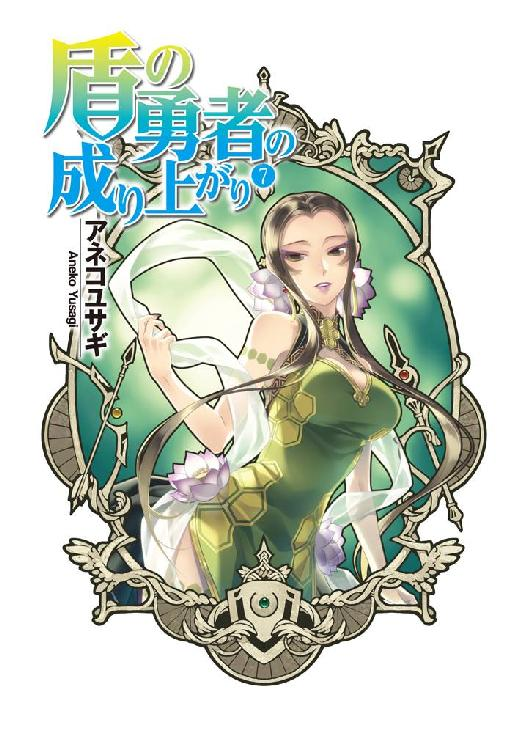
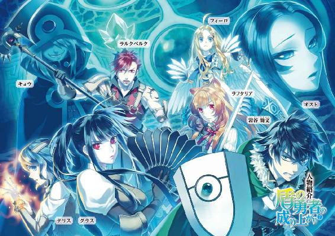
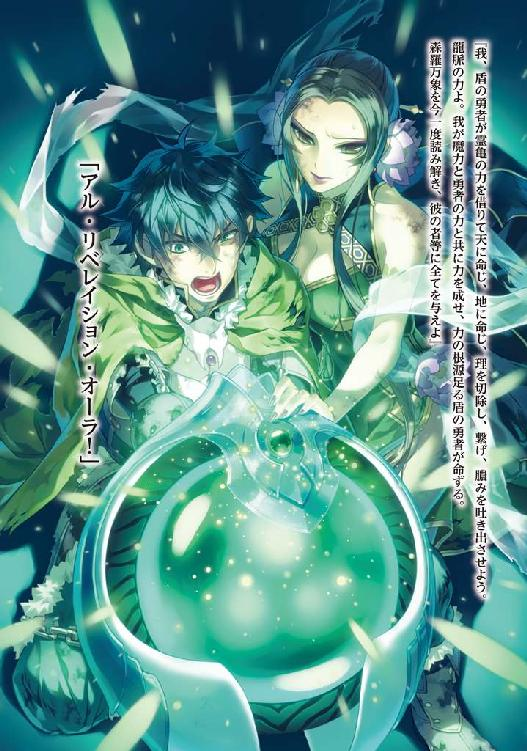
ＭＦブックス
盾の勇者の成り上がり ７
アネコユサギ
プロローグ 捜索
俺は今、荒れ果てた大地をフィーロが引く馬車で進みながら勇者達を捜している。
もう勇者共を捜してどれくらい経っただろうか？
「錬ー樹ー元康ーいい加減、現実を認めて出てこーい」
「ナオフミ様、もう少し優しい感じに呼べないのですか？」
「しょうがないだろ。何日目だと思っているんだ」
どうしてこんなことをしているのか。それを話すには色々と遡る必要がある。
俺の名前は岩谷尚文。年齢は二十歳。
現代社会日本でオタクな趣味を持っていた大学生だった。
暇潰しに出かけた町の図書館で見つけた四聖武器書という本を読んでいると、気が付いたら異世界に召喚されていた。
本の中で活躍していた四人いる勇者の一人、盾の勇者として。
なんでもこの世界は四聖武器書に書かれていた波という災厄に見舞われていて、波を乗り越えるために勇者に世界を救ってほしいというのだ。
夢いっぱい希望いっぱいの異世界ライフだと思っていたのだが、出だしで強姦冤罪を被って無一文で放り出された。
盾の勇者は一人では碌に敵に傷を負わすこともできない特徴を持つ、防御に特化した勇者である。
こうして、冤罪を被り、仲間を得られず、強くなる方法の大半が潰されてしまった状況から俺の異世界での生活は始まった。
この世界にはゲームのようなＬｖの概念があり、魔物を倒すことでＬｖが上昇する。
そして上昇したＬｖに応じて能力が向上するという、努力が目に見えてわかる世界だ。
逆に言えばＬｖさえ高ければある程度努力をおざなりにもできる世界でもあるわけだけどさ。
話は戻って、俺は強くなるために小金を集めて主を裏切れないよう奴隷紋を掛けた奴隷を購入した。
俺自身が戦闘において防御しかできないから代わりに攻撃してくれる存在が必要だったためだ。
奴隷をパーティーに入れて......仲間として無理やり戦わせ、魔物を倒して経験値を稼ぐ。
こうすることで俺にも経験値が入り、一定の数字まで稼ぐことでＬｖが上昇するのだ。
非道な行いだと自分でも思うが、ここまでしないと俺は強くなることができなかった。
「しかし......こう、後味が悪いというか、歯切れの悪い状況だよな」
「そうですねぇ......なんと言いますか解決しているとは思えない、達成感がありませんね」
今、隣で俺と話をしているのが購入した奴隷だったラフタリアという亜人の女の子だ。
亜人は俺が本来居た現代日本には存在しない人種だ。主に動物のような耳や尻尾等の部分がある。
ラフタリアはラクーン種といって、タヌキのような耳と尻尾が生えている。
外見年齢は一八歳くらいに見える。
きめが細かい白い肌と、とても整った顔立ちが相まって大抵の人が美しいと思うんじゃないかと思う。髪は紅茶色で、さらさらとしたそれが風でなびく姿はある意味芸術の域に達しているのではないだろうか？
亜人というのはＬｖの上昇によって戦闘に適した外見に急速に成長する特徴を持っている。
元々俺が購入した時は一〇歳くらいの女の子だったが、俺と一緒にＬｖ上げをした影響で大人の外見になっていった。
彼女の故郷は世界で最初に起こった波によって出現した魔物の侵攻で壊滅してしまった。
その後、奴隷狩りに攫われ、奴隷になっていたところを俺に買われて共に強くなっていった。
途中、奴隷ではなくなるという出来事があったんだけど、俺を信じてくれたラフタリアは俺の信用を得るために、再度俺の奴隷になった。
この時に俺は、奴隷じゃなくてもいいんだぞ？ と言ったんだが、なぜか奴隷のままがいいと譲らなかった。
ともかく、今では俺の頼れる相棒だ。
強さも相当なモノで少し前にとても強力な魔物......霊亀を倒すに至ったほどだ。
そんなラフタリアを俺は親代わりとして面倒を見ている。
性格は努力家で真面目。俺がおかしなことを言うとツッコミを入れて正してくれる。
何かあったら俺が命を懸けてでも守らねばならない娘みたいな女の子だ。
「フィーロ、お前も錬や樹や元康を捜せよ」
「えー？ 全然匂いがしないよ？」
そして今話しかけた......馬車を引いている魔物はフィロリアルと呼ばれる鳥型の魔物だ。
名前はフィーロ。
背中に羽を生やした、人型の......天使みたいな姿に変身することができる。
馬車を引くことが好きという変わった特徴を持った魔物で、勇者が育てるとフィロリアルクイーン、もしくはキングというフィロリアルの上位種に変異することができるらしい。
コイツはラフタリアが再度俺の奴隷になる時に立ち寄った奴隷商のテントで、奴隷商が表向きの職業として行っている魔物商の卵ガチャで購入した卵から孵化した。
性格は天真爛漫な食いしん坊でいつも余計なことばかり言っている。
人間の姿にも変身できて、その姿は金髪碧眼の一〇歳くらいの女の子だ。
ラフタリアと同様に整った顔立ちをしていて、俺が見ても可愛らしい外見をしている。
典型的なロリ天使を想像するのが一番しっくりくるかもしれない。
その内面は食いしん坊の巨大な鳥の魔物なんだけどな。
それにしてもさり気なく凄いことを言ったな。
「匂いって......」
まあ、フィーロは魔物だから人間とは別の感覚で捜してくれているんだろうけど。
野生的だな。とはいえ、いないと思しき場所で捜し続けるのも苦痛だな。
俺達が今、捜しているのは俺と同じく異世界から召喚された勇者達だ。
それぞれ俺とは異なる世界の日本から来ている。
この世界によく似たゲームをやり込んでいてゲーム知識で無双......しているつもりだった道化だ。
俺が冤罪で嵌められた時、これ幸いと便乗して俺を排除......ってわけじゃないけど、真実を見抜けずにいた間抜けな連中でもある。
冤罪の方は主犯格であるビッチな王女と馬鹿なクズ王が国の本当の王である女王に罰せられて、俺の身の潔白は証明された。
その時の出来事としてビッチな王女の妹であるメルティがフィーロの友達......親友になって一緒に逃亡生活をしたりと色々とあった。
そうそう、メルティを誘拐したという疑惑で国中を追われたんだ。
最終的にはメルロマルクというこの国で盾の勇者を迫害する筆頭の三勇教と呼ばれる宗教の教皇を倒すことで解決したんだが......この三勇教、現在俺が捜している三人の勇者を信仰の対象にしていたという無様な宗教で、現在は邪教と認定されて排斥されている。
「いないなら捜索範囲を拡大していくしかないか......」
「そうですね。被災した方々はまだ脅威にさらされているわけですし」
疑惑が晴れてやっと国の援助を受け、本腰を入れて災厄の波に挑めると思ったその矢先、カルミラ島という場所でＬｖが急速に上げられる活性化現象が発生していると女王が言った。
その催しに参加した俺達はＬｖが急上昇。しかも島へ行く前に行った勇者達による合同会議で俺は伝説の武器の本当の強化方法をそれぞれの勇者から聞き出し、それを島で実践した。
まあとりあえず、俺が捜している勇者共の名前と特徴を改めて紹介しよう。
まずは剣の勇者である天木錬。
年齢は一六歳だったか？ 身長は年齢相応で俺よりも低めだ。
光沢のある黒髪が特徴で若干女顔のクールな印象を受ける少年だな。黒を基調にした服装を好んで着用しているっぽい。黒が好きなのはアレくらいの年頃ではよくある精神状態だろう。
性格は......言ってはなんだがクールを自称する「ぼっち」......だな。
人とコミュニケーションを取るのが苦手だと俺は睨んでいる。
元々居た世界ではＶＲＭＭＯというネットの世界に入ることができるらしい。
錬曰く、この世界はブレイブスターオンラインの世界だとか。
で、次は槍の勇者である北村元康。
年齢は二一歳で俺より一つ年上、身長は高めで勇者の中で一番のイケメンだ。
若干茶色の入った髪をしていて、非常に不服だが顔はとても良い。
性格はナンパの一言で片付く。女と見れば節操がない。
ただ、一度信じた相手はどこまでも馬鹿みたいに信じるから、悪気があるわけじゃないのは俺だって最近は理解している。一緒に居る女が悪いんだしな。
コイツが連れている女こそ、俺に強姦冤罪を被せた主犯であり、現在ではビッチと改名させられた元王女だ。
元康の主張だと、この世界はオンラインゲーム、エメラルドオンラインの世界なんだと。
最後が弓の勇者である川澄樹。
奴に関しては思い出すのも腹立たしいけど、やはり紹介しておいた方がいいだろう。
年齢は一七歳、身長は錬と殆ど同じだ。
天然パーマが掛かった髪をしていて、黙って見ている分には芸術的なセンスとかありそうな......ピアノとか楽器を弾いてそうな少年だ。そういう意味では顔は良い方に入るだろうな。
だが実際の性格はものすごく傲慢で、自分の正義感を満たせるのなら何をしてもよいと思っている身勝手な奴だ。
元康の事はビッチが関わっているから嫌いだったが、人間として一番軽蔑しているのは樹だ。
そのせいで泣かされた奴がいるしな。これは後で話すとしよう。
奴はディメンションウェーブというコンシューマーゲームの世界に来たつもりだったみたいだ。
そんな、これでもかというほどの個性を持った勇者達とこの世界で強くなるための方法を話し合った結果、それぞれの主張がぶつかり合って言い争いに発展した。
自分達の信じている世界についてと武器の強化方法で主張の相違があったわけだ。
己こそが正しいと思いこんだ連中は、他の勇者の言葉を信じることはなかった。
最終的に俺が実践してみた結果、俺以外の三人の強化方法はどれも本当の事だったが心の底から信じないと効果が発動しないという厄介なモノであることが判明したのだった。
不幸中の幸いとでも言えばいいんだろうか、俺は予備知識がないことや貪欲に強くなる方法を模索していたお陰で強くなる方法を習得することができた。だが、他の勇者達は、強化方法を実践することができずに差が生じてしまった。
「ナオフミ様？ どちらに勇者達がいると思いますか？」
「行方不明になった地域だろ。まだまだ先だ」
「先に捜索をした方々の話じゃ見つかっていないそうですよね」
「そこなんだよなー......死んじゃいないらしいからどこへ隠れたのやら」
フィーロが引く馬車は荒野に続く巨大な足跡を辿るように進んでいく。
思い起こせばこの段階で既に危険な状態になっていた。
カルミラ島へ出向いた時、行きの船で相部屋になったラルクベルクとテリスという二人組。
冒険者だと思っていたこの二人組がカルミラ島での騒ぎに大きく関わってくる。
ラルクベルク......略してラルクは、気さくな兄貴分みたいでとっつきやすい人だった。
テリスとはあまり話をしなかったが、ラフタリアみたいに礼儀正しい印象だな。
そこまではよかったのだが、カルミラ島の近海に沈んでいる神殿で波の到来を知らせる龍刻の砂時計を発見。数日中に波がカルミラ島近海で起こることを知った俺達は勇者達や国の兵士、冒険者を募って波に挑んだ。
波から出現した強力な魔物......ゲーム用語でいうところのボスは今までで一番簡単に倒せた。
しかし、ボスを倒すと同時になぜかラルク達が俺を殺そうと勝負を仕掛けてきた。
理由はわからない。ラルクは世界のためとか言っていた。
ラルク達の目的は勇者を殺すことのようだ。
恐ろしく強いラルクの前に俺以外の三人の勇者とその仲間達は惨敗、戦闘不能となって波間に漂っていた。
結果的に俺とラフタリアとフィーロの三人で戦いに挑むことになってしまった。
それでも善戦し、あと少しというところまで追い詰めたのだが、そこに二度目の波で出現した強敵......グラスまで出てきて一気に劣勢にまで追い込まれてしまう。
自分でもよく生き残れたと呆れるな。
二度目の戦いであることや俺が所持していた盾のお陰でグラスとラルクをどうにか撃退することに成功。但し、このラルクとグラスの二人が俺に対して脅威となる強力な攻撃を所持していた。
防御比例攻撃と防御無視攻撃だ。
この二つは守りに特化している俺の能力を破壊するほどの脅威となる。
幸いにして回避する手段がないわけではないのだが、連続で撃たれていたら危なかった。
他にも最後の切り札とばかりにラルクがＳＰというスキルを使うための数値を回復させる魂癒水をグラスに振り掛け、それによってパワーアップしたグラスに追い詰められかけたけどな。
結果としては撃退に成功したのだから良いとしよう。
その後、役に立たない勇者達と俺は再度話し合いを行った。
防御しかできない俺は結局攻撃に転じることが難しい。
ラルクやグラスとの戦いで一人でも俺と同等の強さを持つ勇者が居たのなら、撃退ではなく討伐することもできただろう。
だが、勇者共は自分達が持つゲーム知識で効率の良い強化方法を俺に教えずに実践していたくせに、俺が不正な方法......チートで強くなったんだと弾劾を始めたのだ。
俺はそれでも真摯にそれぞれの言う強化方法は正しいと主張したんだけど、奴等は一向に信じる気配を見せず、話し合いは一時中断となった。
カルミラ島から帰還した俺達と勇者共はＬｖという目に見える強さ以外のテクニック......戦闘訓練を、変幻無双流とかいう中二病みたいな流派のババアの指導の下、修行することになった。
だが、ここでも勇者共は愚痴が入ってサボタージュを始めた挙句、思い通りにならないからと他国へ亡命しようとした。
友好関係を築くことが限界に達しようとしていた時、メルロマルクの女王がとある依頼を持ってきた。
依頼を達成した暁には勇者達が他国へ行くことを認める......との条件に俺達はその依頼を受けた。
この依頼がとんでもない事件の序曲だったのは言うまでもない。
どんな内容だったかというと、国中......というか世界各地で出現した謎の魔物を退治すること。
その魔物は霊亀の使い魔で、最初は勇者の力でも魔物名を読み取ることができなかった。
亀のような甲羅を背負い、蝙蝠に似た羽を生やした一つ目の化け物だ。
で、この事件に関して他の勇者達や女王と話し合いをしたわけだけど、勇者共はそろって解決方法を秘匿して勝手な行動に出た。
まあ、結果的に正体はわかったのだけどさ。
使い魔なのだから操っている主がいるわけで、それが霊亀という化け物だ。
最終的には勇者共が駆けつける前に犯人というか、霊亀が暴れ出して進軍を開始した。
この霊亀......山のように巨大で背中に山脈を背負った化け物だった。
勇者共は霊亀に正面から挑んだらしく、その報告を最後に行方が知れない。
幸いにしてこの霊亀は俺とラフタリア達、連合軍の協力もあってなんとか討伐することに成功した。
ただ......この霊亀が復活すると同時に視界の隅に出現した、青い砂時計の表示が消えない。
まるでまだ事件は終わっていないかのように。
「結局、霊亀が封印されていた地まで勇者共を捜す旅は続きそうだな」
「ごしゅじんさま！」
俺がポツリと呟くと同時にフィーロが馬車を急発進させた。
「どうした？」
「少し離れたところから悲鳴が聞こえたの！」
「急いで向かえ！」
「うん！」
俺達はフィーロが聞きつけた悲鳴の方へと馬車を進ませた。
そう『まるで』じゃない。
まだ、事件は何一つ解決していなかったのだ。
一話 人助けの真意
「うわぁあああああああ！」
声の元に向かうと魔物が人を襲っている最中だった。
魔物の正体は霊亀の使い魔（蝙蝠型）......そう、本体を倒したにもかかわらず使い魔の方は活動し続けているのだ。
俺達がこの事件で最初に見つけた魔物でもある。
他にも複数の種類が存在するのだが、コイツが一番多い。
「よし！ いくぞ！」
「はい！」
「らじゃー！」
俺が馬車から飛び出し、襲われている人々を守るように霊亀の使い魔（蝙蝠型）の前に立ちはだかる。
盾を前に構え、霊亀の使い魔（蝙蝠型）が発する熱線を受け止める。
この霊亀の使い魔は弱い相手を重点的に狙う性質があって人々を庇うのがなかなかに難しい。
「ヘイトリアクション！」
魔物の注意を引きつける盾の技能......特殊な力であるスキルを使用する。
俺には見えないが魔物であるフィーロ曰く、何かが俺から発せられて意識が向いてしまうそうだ。
「あ、貴方は？」
「話は後だ。お前等、死にたくなくば一ヶ所に固まれ！ 分散されると守りづらい」
「は、はい！」
俺の言葉に襲われていた連中が俺を盾にして一ヶ所に集まる。
「よし、シールドプリズン！」
盾の檻を出現させるスキルを使って、襲われている連中を守る。
「エアストシールド！ セカンドシールド！ ドリットシールド！」
更にそれを守るように盾を作り出すスキルを出現させた。
効果時間は短いが、ないよりマシだ。
「ラフタリア！ フィーロ！ プリズンの効果時間が切れる前にやれるな？」
「当然です！」
「がんばるよー！」
ラフタリアが剣を持って霊亀の使い魔（蝙蝠型）に素早く接近して薙ぎ払い、フィーロはフィロリアルクイーン形態でツメを足に嵌めて蹴りつける。
二人ともＬｖが高く、攻撃力もあるために本気で攻撃すると霊亀の使い魔（蝙蝠型）なんて一発でミンチになってしまう。
霊亀の使い魔（蝙蝠型）を一撃ごとに何十匹も屠っていく。
飛び回るから厄介だな......まあ思考は単純で逃げる動作をあまりしないから狙いやすくはあるか。
「ラフタリアお姉ちゃん！」
「はい！」
ラフタリアがフィーロの背中に乗って高速で使い魔達を薙ぎ払う。
ふむ......悪くはない動きだ。
シールドプリズンの効果が切れる頃には大半の霊亀の使い魔（蝙蝠型）は駆逐できていた。
「ごしゅじんさま。大きいのがいるみたいだよ」
フィーロが指し示す方角を見ると霊亀の使い魔（雪男型）という亀の甲羅を背負った雪男のような大型の魔物が出てきている。
フィロリアルクイーン形態のフィーロと殆ど同じ身長をしていて、外見に比例した強さを所持している。
蝙蝠型を倒せるのが並の冒険者だとするなら雪男型は凄腕の冒険者でないと難しいだろう。
Ｌｖでいうなら蝙蝠型は25あれば一応戦えはするだろう。だが、雪男型は55は必要だ。
いや、蝙蝠型は群れで来ることもあるので、25だと心許ないな。
この世界の冒険者は特に何もしなければＬｖの上限は40だ。
国が特別に認めた者でない限り、その40の壁が立ちはだかる。
しかし、龍刻の砂時計でクラスアップの儀式をすることによって１００までＬｖ上限が上がる。
つまり雪男型と正面から戦って勝つにはクラスアップを経験している強い冒険者であることが求められる。
もちろん知略や連携を駆使すればこの限りではないだろうが、時間が掛かるだろうな。
「いけるか？」
「任せてください」
「うん！」
ラフタリアが剣を手に必殺技の構えを取り、フィーロが高速で駆けて、足に力を込める。
「陰陽剣！」
「とおおお！」
雪男型はラフタリアの剣で斬られ、フィーロの蹴りで消し飛ばされた。
「ふう......こんなところですかね」
剣を鞘に収めたラフタリアがフィーロから降りて辺りを確認する。
ま、ラフタリア達にしてみればこの程度の連中を倒すのは造作もないだろうよ。
Ｌｖも然ることながら技術的な面も向上している。
「うん、もうこの辺りにはあの魔物はいないみたいだよ」
「そうか、よくやった」
俺は使い魔共に襲われていた連中に近づいて声を掛ける。
「お前等は大丈夫か？」
「盾を装備し......不思議な力で人々を守る......もしや貴方は盾の勇者様ですか!?」
「そうだが？」
「ありがとうございます！ 勇者様のお陰で助かりました！」
襲われた人達がそれぞれ俺に感謝を述べる。
「この辺りは危険だぞ？ なんでまだいるんだ？」
「その......私達はこの辺りを集落にしていたので......」
「なるほどな」
俺達は勇者の捜索をすると同時に、霊亀の進んだ道を遡っている。
そのついでに被害に遭った人々を救済する作業もしている。
ただ、まあ......震災時のような、火事場泥棒的な連中に遭遇することもあって、ここに居る連中の台詞を半分くらいしか信用していない。
廃墟となった町の中に眠る宝とかを盗もうと危険地帯に入り込み、使い魔共に襲われて逃げ出した......なんてのもいる。
「念のために確認だ。お前等、身の回りのモノを差し出せ」
「......!?」
連中の顔色が変わる。
この世界には最低で下劣な奴が生きている。
逞しいといえば聞こえはいいが、道徳から外れたゲスな連中を助けるほど俺は暇じゃないんだよ。
「これは俺達が見つけたものだ！」
「はぁ......」
やっぱりか。念のために確認したらこれだ。
下手にこいつ等を助けたりした日には、何をするかわかったもんじゃない。
安全な所まで誘導したら、平然と脅迫とかしようとする奴もいる。
異世界には夢いっぱいの希望が溢れているなんていうのは嘘だな。
逞しすぎて現代日本出身の連中にとっては信じられないことをする奴で溢れている。
こうでもしないと生き残れないのかね。
現代社会でもそういう国はないわけじゃないからしょうがない......のか？
「火事場泥棒に所有権があるのか？ 別にモノが欲しいわけじゃない。俺達はここから去るが霊亀の使い魔に襲われないように気を付けるんだな」
助けた連中が各々武器を持って俺に敵対しようとしている。
俺は無関心を装って脅迫を行った。
現在、この辺りは混沌とした地域となっている。
善意的に人を救いたいとか思っていても、救った連中がクズでは意味がないだろ。
「ま、待ってくれ！」
「俺達を見捨てるのか!?」
「誰もそんなことは言っていないだろ？ さっき襲われた時は助けてやったじゃないか。その後のフォローをしてやらないだけだ」
「く......」
リーダーっぽい奴に視線が集まる。
「日が暮れる前に安全な場所まで行けるといいな？」
使い魔達は結構な数が生き残っているだろう。
今はいないが次はどうなることやら。
ついでに言えば、霊亀の使い魔は厄介な性質を備えている。
それは死体を苗床にして数を増やすというものだ。
霊亀が復活し、進軍して数々の村や町が犠牲になった。その犠牲になった場所で死んだ者達......人も魔物も含めて、その死体を媒体に霊亀の使い魔は増えているのだ。
今のところ、連合軍が討伐作業を行っているが、駆逐するにはもう少し時間が掛かるだろう。
そんな危険な場所でたいして強くもない火事場泥棒が生きて戻れるかと聞かれて、頷けるのなら行ってみればいい。
死んでも補償はしない。最悪生きながらに苗床にされる危険性だってある。
ラフタリアの同郷のキールという奴が生きながらにして霊亀の使い魔に寄生されかかった。
幸い、未然に防ぐことができたけれど治療中だ。そろそろ退院......できればいいんだがな。
「勇者のくせに助けてくれないのか!?」
「俺は聖人君子じゃないんでね。しかも火事場泥棒をするような連中を見捨てたって誰も咎めやしないさ」
俺の言葉にラフタリアは微妙な表情を浮かべている。
ま、奴等の方が悪いのだから俺に注意はできないだろうけどさ。
フィーロはぼけーっと空を見上げているな。
こんな日常が当たり前のようにあるのが異世界なんだ。
逞しいといえば聞こえはいいかもしれないけど、クソみたいな世界だよな。
「見殺しにするのか？ 人殺し！」
「知らんな。じゃあ行くか。フィーロ、出発だ」
「ま、待ってくれ！」
掛かった。内心でニヤリと笑う。
「......なんだ？」
「これは差し出す。だからどうか安全な場所まで連れてってくれ！」
と、火事場泥棒達は各々が見つけた金目のモノを俺に差し出した。
「盗んだ全てのモノを差し出せ」
「う......わかったよ」
「ラフタリア、念のために調べ尽くせよ」
「はい......わかってはいましたが結局こうなるんですね」
ラフタリアは火事場泥棒が金目のモノを隠していないか入念にチェックした。
すると、出るわ出るわ。
「くそ......骨折り損のくたびれ儲けじゃないか！」
「命あっての物種だろ？ ほら、乗れよ。安全な所まで送り届けてやる」
なんて話をしながら俺達は火事場泥棒達を馬車に乗せ、最寄りの安全な町へ送り届けることにした。
「でだ。お前等、俺以外の四聖勇者を見なかったか？」
ゴトゴトと揺れる馬車の中で俺は振り返って尋ねる。
「知らねえな」
まあ大体がこんな証言ばかりだ。見たという奴もいたが、デマとか人違いばかりだった。
「あ、俺......剣の勇者らしき黒い奴が......霊亀に向かって攻撃してたのを見た」
火事場泥棒の一人がポツリと呟く。
「本当か？」
「あの時は俺も逃げるので精いっぱいだったから確証はない......」
「それでもいい。話せ」
「俺が見た奴は......一人なのか、霊亀に向かって剣を振るっていた。雄叫びを上げながら、剣を振り回して霊亀に立ち向かっていたのが見えた。そこから先は逃げるのに必死だったからわからねぇ」
「どの辺りだ？」
俺は地図を広げて尋ねる。
「この町に居た時だ」
それは錬が行方不明になったといわれた町の近くだった。俺もその町には一度行ったことがある。
錬が消息を絶った場所だからな......これは信憑性のある話だな。
勇者共はそれぞれ、別の町で行方知れずになったので、目撃証言は複数存在しても不思議じゃない。だからこそ、デマと真実の違いがわかりづらいのだ。
でも、この情報は今までのデマよりは信用できるだろう。
「仲間はいなかったか？」
「霊亀が煩わしそうに歩いてたのは覚えてるけど......知らねえなぁ。あの時はみんな逃げるのでやっとだったし」
他にも似たような証言がある。
最初、剣の勇者が名乗りを上げて霊亀に向かって突撃していった......らしい。
らしいというのはその場に立ち会ったわけじゃなかったからだそうだ。
みんな避難の準備をしていたが、勇者が行ったのならと僅かながらの期待を持っていた。
だが、霊亀は何事もなかったかのように近づいてきて町は壊滅、その混乱の最中で目撃したに止まっている。
「期待させやがって、とんだ偽者だぜ」
いや......姿から察するに本物である可能性が否定できない。
むしろ本物だろ。黒い服装で、一人というところがな。
だが、仲間はどこへ行ったんだ？
錬には距離感のある後輩みたいな仲間が数人いたはずなんだ。
基本は一人でいることが好きな錬だが、強力な敵がいる場合には仲間を連れて戦うことがあると聞いた。
良い意味では後輩の成長を見守っていたのかもしれない。
悪い意味だと......狙いを分散させるための駒程度の扱いだったのかもしれない。
「そうか」
思い付くことはいくらでもあるが、確証がない。
このままじゃあ四聖の勇者が死んだ状態で波に挑まなければならない危険性がある。
なんでも四聖が揃って生きていることに意味があるらしい。
一人でも欠けると災厄の波が到来した時、波の脅威が増すそうだ。
そして四聖は全員が死なない限り再召喚できないという制約が存在する。
その再召喚の管理を、過去の勇者に頼まれているのか、伝説のフィロリアルであるフィトリアが、世界のために俺を殺しに来るかもしれない。
だから俺は勇者共をこうして捜しているんだ。
生きてはいるらしいから、非常に遺憾だが早めに保護しなきゃいけない。
挫折が成長に繋がってくれることを祈って......隠れている勇者共を見つける旅を続けている。
だが、霊亀に挑んだという目撃情報以外は今のところ見つかっていない。
倒した霊亀の中でも見つけられなかったのだ。
いったい......どこに居るんだろうな。
脱線気味に霊亀の被害に遭っていない町へ到着した。
火事場泥棒達は不満そうな表情を浮かべて馬車から降りていく。
何だかんだでこういった連中の保護をしているせいで勇者捜しの旅はあまり進んでいない。
霊亀が封印されていた国へは四聖以外の勇者......七星勇者と呼ばれる連中が向かったらしいがな。
いずれ顔合わせすることになるだろうとは思っているが、まだまだ先になりそうだ。
「あ、この辺りになるとメルロマルクの文字とは違うみたいですね？」
町の店先にある看板を指差してラフタリアが言った。
「そうだな」
盾の能力で会話に関しては翻訳してくれるけど文字まではしてくれない。
面倒だよな。同じ異世界でも、言葉が違うとか。
統一とかしてくれよとは思うけど、現実の世界だって変わらないか。
会話だけでも翻訳してくれるだけ幾らかマシだな。
「じゃあ最寄りの冒険者ギルドに馬車を預けて、今日は城に帰るか」
「はい」
現在、俺達の移動手段は複数ある。
その一つがポータルという転移スキルだ。
勇者しか所持していない能力で、記憶した場所に転移することができる。
いつでもどこでも使えるわけではなく一度行った場所であること、記憶する場所の数が限られていること、そして馬車等の大きな物を運ぶことはできないという制限がある。
冒険者ギルドに行き、メルロマルクの女王が印をした書状を見せて馬車を預かってもらう。
「ポータルシールド」
それから俺はメルロマルクの城にラフタリアとフィーロ共々、ポータルで戻った。
「ただいまー！」
見知らぬ町並みから、見慣れた城の庭に視界が一瞬で切り替わる。
フィーロが元気よく声を出してトタトタと城の中に駆けていった。
親友のメルティに会いに行ったのだろう。暇さえあれば一緒に遊んでいるからな。
「お帰りなさいませ、ナオフミさん」
「どうだったか？ 何か進展はあったか？」
訓練場の方からリーシアとエクレールがやってきた。
リーシアのフルネームはリーシア＝アイヴィレッドだったか。
元々は樹の仲間だったんだけど、俺と同じく濡れ衣を着せられた。そして仲間から追放されたという経験をしている。
なんでも没落貴族の家の出で過去に樹に危機を救ってもらったのだとか。
でも酷い裏切りに等しい濡れ衣を着せられて追放されたのに、樹の事をこれっぽっちも恨んでいない。
聖人か？ とか疑いたくなる精神をしている。
ただ、普段から締まりのない奇声を上げ、着ぐるみを着て、落ち込んでいる自分を隠そうとする......情けない奴だ。
「ふぇ？ 私、何かしましたか？」
現に今もフィロリアルクイーン形態のフィーロを模した着ぐるみを着用している。
「別に......」
このリーシア、変幻無双流のババア曰く資質はかなり高いとのことなので修行をさせている。
時々、本当に時々良い動きをするんだけど、安定しないのが難点だな。
俺の見立てでは、アウトドアというよりもインドア派な、魔法が得意そうなタイプだ。
ただ、ステータスがあるこの世界でリーシアの能力はとんでもなく低い。
あまりにも低くて絶句したほどだ。
才能が開花する時が楽しみである......というか開花しなきゃまともに戦わせることもできない。
顔の方は面食いの元康が認めるほどいい。
実年齢よりも幼く見える外見で、髪型は後ろで三つ編みにしている。
ラフタリアやフィーロに匹敵する美少女であるのは確かだと俺も思う。
「イワタニ殿？ その様子だと今日も良い情報は無かったようだな」
次にエクレール。フルネームはエクレール＝セーアエット。
ラフタリアの故郷の領主だった貴族の娘らしい。
剣術の戦闘顧問としてラフタリアとリーシアに剣術を教えてくれている。
性格はクソ真面目というのが一番しっくりくると思う。
髪の色はストロベリーブロンド。髪型はロングだな。
キリッとした目付きが他者を射抜く......一目見るだけで真面目な奴なのだろうと思わせる。
職業は騎士だな。
碌な奴がいないメルロマルクの中で、俺のイメージする騎士に合うのはコイツくらいだろうな。
まあ真面目で礼節を重んじるというところだけだけど。
他人に対して情状酌量の余地とか認めそうにないのが長所であり、短所でもある。
これまた顔の方はかなり整っている。ラフタリアと比べても、負けていないと思う。
肌も白くてきめ細かいし......よくよく考えてみればここには美人が揃ってはいるんだよな。
戦闘面でもかなり強い方ではあるわけで......天は二物を与えずというが完全に嘘だな。
まあ、別に俺はラフタリアが不細工でも差別はしないが。
「ナオフミ様？ 何か失礼なことを考えていませんか？」
「別に？」
どうもラフタリアは勘が鋭いんだよなぁ。
俺が変なことを考えているとすぐに察する。
「それでイワタニ殿、先ほどから何か進展があったかと聞いているのだが......」
「ああ、今日もこれといった情報は見つからなかったな」
「そうか......」
エクレールの表情が曇る。
大災害が起こった挙句、世界を救う要となる勇者が行方知れずともなれば思うところもあるだろう。俺だってそう思うし......。
「霊亀を倒してから何日目だったか？」
「もう一週間になるな......どこをほっつき歩いているのだ、勇者達は」
まったくだ。
これだけ捜して、霊亀と戦った前ではなく後の目撃情報が一つも出てこないとなると、山奥にでも隠れているのではないかと疑いたくなる。
「とりあえずは捜索範囲を広げているのだが、火事場泥棒とか避難誘導とかに時間を割かれてなかなか進まないな」
「そうか......何かあったら私もリーシアも協力は惜しまないつもりだ。いつでも頼ってくれ」
「ああ、わかってるよ。だが、エクレールにはババアと一緒にリーシアに稽古を付けておいてほしいんだ。キールが退院したら一緒に頼む」
「わかった。とはいっても私も女王の護衛として霊亀の山に同行することも多いぞ？」
さっきも説明したが女王とは俺を召喚した国であるメルロマルクの女王のことだ。
盾の勇者を迫害しようとした王であるクズの妻にしてビッチな王女の母親だけど、本人は世界のため、国のために俺への協力を惜しまないできた人物だ。
伝説等の知識も豊富で、波に関しても並々ならぬ探究心を示している。
波に挑む時は俺の後方支援を担当していて、何度か窮地を脱する手伝いをしてくれた。
作戦も基本的には女王に任せているしな。
外見年齢は二〇代後半にしか見えず、相当に美人だ。よく扇で口元を隠している。
アレで大きな子供が二人いる母というのだから不思議だと思う。
旦那と子供のうち一人は愚か者の筆頭だがな。
家族の中でまともなのは本人とメルティだけというのもなんだかな。
「その時は変幻無双流のババアにでもリーシアを預けておけばいいんだよ」
「ふぇえええええ！」
変幻無双流のババアは俺が行商して金稼ぎをしていた時に助けた老婆だ。
影の薄い息子が飲ませようとした薬を盾の技能を使って強化して服用させたら、元気すぎる婆さんになってしまったから、俺はババアと呼んでいる。そもそも名前も知らないしな。
色々と顔が広く、過去に様々な戦いに挑んでいた......らしい。
変幻無双流というのは失伝寸前の武術だが応用の幅がかなり広い流派らしい。
で、リーシアはその資質が高いらしいので習得させるために修行をさせているというわけだ。
「そうだな。リーシアもなかなか成長してきていると私は思うぞ」
「そ、そうですか？」
リーシアが元気よく尋ねる。
「まあ、まだまだ足りないところはあるが、がんばれば伸びていくのではないか？」
「がんばります！」
「がんばれよ」
気のない返事をしつつ、俺は女王に挨拶するために城内へ足を向ける。
「俺は女王と話をしてくるから、ラフタリア達は訓練や魔法の修練をしておいてくれ」
「わかりました」
霊亀を討伐して一週間......勇者共は見つからず、夕方になると城にポータルで移動して女王に報告する日々が続いている。
霊亀の使い魔の被害も行く先々で報告されているし......事態の収束にはまだ時間が掛かりそうというのが当面の課題として残っている。
というのが、俺の現状だった。
このときは、翌日から大きく事件が動き始めるようなことなど、もしあったら嫌だなと思う程度だった。
二話 霊亀の使い魔（人型）
翌日も、大きな進展もなく勇者捜しは難航すると思っていた。
城で朝食を終え、ポータルで昨日立ち寄った町へ戻った俺達は、着くと同時に事件が起こっているのを悟った。なにせ、町が悲鳴に支配されていたのだから。
「うわぁああああああああ！」
「きゃああああああああああああ！」
見ると、人々が今まさに逃げている最中だった。
「な、何があったんだ？」
「ナオフミ様！」
「ごしゅじんさま！」
ラフタリアとフィーロが、人々が逃げていく方とは逆方向を指差した。
以前ドラゴンゾンビという大きなドラゴンの死骸が動き出し、襲ってきたことがある。
まあ今までで一番大きかったのは霊亀だけどさ。
うん。霊亀ほどではないが、巨大な黒い影が、今まさに町に襲来しようとしていた。
よーく目を凝らして、町に近づいてきている魔物を確認する。
霊亀の使い魔（寄生混合統括型）
えっと......どうやら霊亀の使い魔らしい。
寄生混合統括型？
全長は八メートルくらいか。かなり大きいように見える。
魔物の外見は巨大な爬虫類......ファンタジーにしか存在しないドラゴンのような体躯、カマキリを連想させる大きな鎌を携えた、獅子の頭を持つ巨大な魔物が近づいてくる。
キメラなんかが非常に近いかもしれない。
あれは獅子の胴体にヤギの頭とドラゴンの頭とかがくっ付いた化け物だ。
以前戦ったキメラの尻尾には蛇が付いていたな。
だけど現在、町へと迫ってきている魔物はドラゴンの胴体にカマキリの鎌を付けて、獅子の頭がくっ付けてある。
おまけに、ドラゴンの頭も完備......それで背中には甲羅を背負っている。
霊亀の使い魔にはこれまで何種類かの、姿形が統一された存在があったが、なんだアレは!?
ん？ ズルズルと背後に何かを引きずっているように見えるが、ここからではよく見えない。
「とりあえず、アイツを仕留めるぞ！」
「はい！」
「いっくよー！」
俺の号令にラフタリアとフィーロが頷く。
そして俺達は霊亀の使い魔に向けて駆け出した。
フィーロはフィロリアルクイーン形態になって、先陣を切る。
「気を付けろよ！」
「うん！」
俺とラフタリアとフィーロの中で一番素早いのはフィーロだ。攻撃能力も一番高い。
頼りにはしているが、常に警戒を怠ってはならない。
なにせ相手がどんな攻撃をしてくるのかよくわからないからな。
フィーロが高速で近づいて、霊亀の使い魔のドラゴンの方の頭に蹴りを加える。
その途端、ブチャッと蹴りが入ったところから飛沫が飛んでドラゴンの頭部が千切れ飛んだ。
「うえ......ごしゅじんさま。この相手、腐ってるよ？」
霊亀は死体に寄生して増える能力を持っている。
つまり......死体を操っているのだろう。とんだキメラゾンビだな。
「でも......なーんかおかしいなー」
「何がおかしいんだ？」
フィーロが首を傾げて、霊亀の使い魔が振り下ろす鎌を避ける。
器用な真似をしやがるな。
「エアストシールド！」
鎌の挙動に合わせて、一番力が入らないところに魔法の盾を出現させる。
ガツッと鎌がエアストシールドにぶつかって......ボコッと肉片をまき散らしながら鎌が落ちる。
「う......」
その光景にラフタリアが口元を押さえる。
確かに......かなりグロテスクな光景だよな。
「ああ、うん！ わかった！ ごしゅじんさま」
フィーロが振り返って答える。
「この子、腐ってないよ。ツギハギ合わせなの！」
「はい？」
俺の問いに答えるように、落ちた鎌と頭部から筋のようなものが出てきた。筋は音を立てて鎌と頭部を引っ張り、胴体にくっ付けて補修していく。
なんだこれ？
「あとね......この魔物、何か沢山の気配がするよ？ 簡単に潰すと危ないかもしれない」
「どういうことですか？」
ラフタリアが剣に力を込めて使い魔の腕を切り裂いてしまっていた。
今のラフタリアとフィーロはＬｖ70後半だ。かなり強力な一撃となる。
クラスアップ後の上限はＬｖ１００だ。
相当強くなってきているのがわかるだろう。
ドサリと落ちた腕がビクンビクンと蠢き始める。
ラフタリアは筋ごと切断していた。
これで再生しないのなら万々歳だが、フィーロの言い分だと悪い方向に進みそうだ。
「えっとねー。ズバッとするとね、増えるの」
「わからん！ もっと詳しく説明しろ！」
フィーロは人に教えるのがものすごく下手な奴で、友達のメルティを介さないと全然わからない。
こういう感覚だけで話をする奴の言葉を察するには高度な理解力と信頼が必要だ。
「な、ナオフミ様」
ラフタリアが切り落とされた使い魔の腕を指し示す。
すると......そこから霊亀の使い魔（蝙蝠型）がわらわらと溢れ出てきている。
ゲ......つまり、この魔物の部位を破壊すると増殖するみたいに霊亀の使い魔が出てくるってことかよ。
寄生混合統括型というのは魔物の死骸を苗床にし、統括して操っているんだ。
そして、苗床にしているから内部の肉が腐ったようになってしまっていると。
考えてみれば霊亀を倒して一週間だ。
霊亀が暴れた時にドラゴンが死んだのかもしれないが、それにしたってここまで腐敗するのは早すぎるだろう。
そりゃあ温度とか色々な条件が重なれば早く腐るかもしれないが、他のパーツが謎すぎる。
獅子の頭に見えるがあれは霊亀の使い魔か？
「グルアアアアア！」
獅子の部分だけよく動くな。アレが本体か？
「フィーロ、ラフタリア。当てるところを間違えると数が増えて厄介だ。だけど対処方法がないわけじゃない」
こういうタイプの魔物は高火力の攻撃で仕留めるとかするのがいいんだろうな。
日本で例えるなら爆弾とかミサイルか？
異世界だから範囲魔法だな。複数人で唱える儀式魔法とかで戦うのが妥当なところだ。
それ以外だと......分裂することを前提に全てを駆逐する面倒な方法。
後は核となっている部分を仕留めれば自壊する。
うん。これが妥当だ。とにかく、弱点っぽいところを攻撃するしかない。
「あの頻繁に動く獅子っぽいところを攻撃してみてくれ」
「わかりました」
ラフタリアが剣に魔力を注入し始める。
「りょーかーい」
フィーロも腕を交差させて必殺技の構えを取った。
この二人、何だかんだで強力な攻撃を習得しているから頼りにしている。
俺は......その間にどうするべきか考える。
「流星盾！」
俺を中心とした結界を作り出すスキルを発動させて、ラフタリアとフィーロを守る。
これは前提だ。
辺りを確認すると町の住人達は逃げることに成功したようだな。
霊亀の使い魔（蝙蝠型）が辺りを飛び回っているが、今は大きな方を仕留めないと始まらない。
よし、まずは相手の動きを止めることを考えよう。
ゆっくりと近づいてくる霊亀の使い魔に意識を集中しながらスキルの射程範囲に入るのを確認する。
「ナオフミ様、準備が整いました」
「こっちもー」
「よし！ エアストシールド！ セカンドシールド！」
魔法の盾を二枚、霊亀の使い魔が動きづらいように胴体と、前足辺りに設置する。
三枚目も撃てるのだけど、それは相手の出方次第だ。
「ガ──」
ガツッとぶつかって霊亀の使い魔が煩わしそうによろめく。
「今だ！」
「はい！ 陰陽剣！」
「すぱいらるすとらいく！」
ラフタリアが動きの緩慢になった霊亀の使い魔の獅子の部分に向けて剣を振りかぶり、フィーロが突撃する。
スバッと霊亀の使い魔の獅子の頭は横に切り裂かれ、フィーロの突撃ではじけ飛ぶ。
ぐらりと霊亀の使い魔がその巨体を揺らした。
「よし！」
これで倒せるのなら御の字......蝙蝠型に分離するなら面倒だけど駆逐していくしかない。
「......まことに申し上げにくいのですが、倒せてません」
俺が拳を握ったその時、不意に背後で女の声がした。
「ほら、見てください」
俺の背後に居る奴が、霊亀の使い魔の後方に引きずっている部分を指差した。
「あそこから補充されます。見ていてください」
と、声の通り、吹き飛ばした頭を補完するように、ぎょろりと巨大な目玉がその場所に生えた。
うげ......。
「後方にあるのも本体というわけではありません。アレはレギオン......群れで複数の魔物に寄生して統合しているのです。足りないのなら、別のパーツで補おうとするだけ。もっと高威力の攻撃をしてください」
今、俺は流星盾を展開している。
この流星盾は結界を作り出すスキルで、パーティーメンバー以外を弾く効果がある。
にもかかわらず、俺の背後に居て、俺に指図をするというのはどういうことなんだ？
それに結界に入ってきたというより、突然、俺の背後に現れたかのようだった。
俺は振り返って声の主を確認する。
「お前は!?」
そこに立っていたのは霊亀の事件に俺達が関わるほんの少し前......城の庭で俺が一人で待っていた時に現れた謎の女だった。
透明感のある紅茶色の髪にシニョンを付け、中華風のつり目をした......人を食いものにしそうな女。
ラフタリア達を見慣れた俺でも美人だと思える、かなり整った顔をしている。
そしてとても印象的なのだが、妖艶な魅力というのだろうか、そんな雰囲気が伝わってくるのだ。
ローブを羽織っていて、首から下はよくわからないが、怪しげな女だ。
本能が囁くというのだろうか。
メルロマルクの女王やビッチのような、血筋が良くて、それでありながらも人を利用しそうな空気を纏っている。そんな女がさも平然と俺の至近距離に居たのだ。
「今は話をするよりも、使い魔を殲滅することの方が先決です。私が動きを止めますから、どうか早く」
と呟くと、女が片手を使い魔に向けて伸ばし、睨みつける。
すると使い魔の動きがピタリと止まった。
何か魔法でも使っているのか？
「と、とにかく、今のうちに攻撃しろ！」
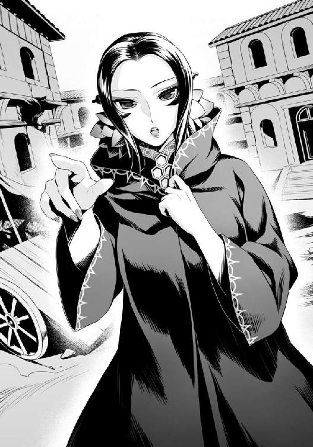
「わかりました！」
「フィーロ！ お前は魔法を使え！ 一番強力なやつをだ」
「わかったー」
フィーロが魔法を唱える構えをし、ラフタリアが陰陽剣を維持したまま、動かない使い魔に近づいて跳躍して何度も斬り伏せる。
バラバラになった肉片が痙攣するかのように蠢くが、女が何か邪魔をしているのかそれ以上の動きはない。
「メルちゃんに教えてもらった強い魔法を撃つよー」
フィーロが自信満々に言い放つ。
そういえばフィーロは最近、メルティと一緒に色々と勉強していたとか言っていた。
『力の根源たるフィーロが命ずる。しんりを今一度読み解き、かの者を激しき真空の竜巻で吹き飛ばせ』
「ドライファ・トルネイド！」
ドライファまで使えるようになったのか。
ラフタリアももう少しで使えるようになるとか言っていたが、フィーロの方が先に使えるようになったのか。
まあ、フィーロは魔法書も読まずにツヴァイトクラスの魔法を唱えたりするようになっていたから不思議じゃないな。
巨大な真空の竜巻が、天から使い魔目掛けて降り注いだ。
風で辺りの家屋が薙ぎ払われる。
真空の竜巻がズタズタと使い魔を切り刻む。血飛沫が上がっていくのが見えた。
だが、それでも足りずに使い魔はその巨躯を保っていた。
「うへー......凄く頑丈だよ、ごしゅじんさま」
「く......こうなったら奥の手しかないか」
俺は女に視線を送ってからゆっくりと一歩踏み出す。
強力な範囲攻撃といったら俺は一つしか持っていない。
俺の切り札にして、あまり使用したくない奥の手である盾。
「ラフタリア、フィーロ。下がっていろ」
「まさか......大丈夫なのですか？」
「こんな厄介な魔物をこのまま放置しておくことの方が危険だろうが。次に遭遇した時は儀式魔法が使える連中を派遣させるさ」
「気を付けてくださいね」
「わかっている。怒りに飲まれることはないさ」
それはラースシールドという......使用すると心を侵食されかねない呪われた盾だ。
この盾に内包されたスキルを放ったことで俺は瀕死の重傷を負い、能力が三分の一まで低下する呪いを受けた。
今はほぼ完治したが、安易に使っていい盾じゃない。
それでも......ラフタリアやフィーロじゃ抑えきれない相手と戦う時には使わねばならないだろう。
俺は盾に手をかざし、ラースシールドに変化させた。
視界が僅かに暗くなるような感覚があり、心に過去の怒りが浮かび上がる。
同時に、ラフタリアが俺を認めてくれたこと、俺が強姦なんてしていないと信じてくれたことが浮かび上がって、怒りを抑え込む。
うん......まだ、大丈夫だ。抑えることができる。
フィーロに目を向けると手足に黒い炎を宿している。
ラースシールドはフィーロとも僅かに繋がっていて、俺の憤怒の感情をフィーロが少しばかり引き受けてくれる。
ラフタリアとフィーロのお陰で俺は理性を保つことができる。
一歩、また一歩と使い魔の元へ踏み出す。
足が僅かに燃えているような感覚を覚えながら、俺は使い魔の至近距離にまで達した。
そして、振り返って女を睨む。
女はコクリと頷くと少しばかり手を下ろした。
すると使い魔の硬直が僅かに解けて俺に向かって鎌を振り下ろす。
俺は片手でその鎌を受け止めた。
直後、ラースシールドから黒い炎が噴出する。
ラースシールドの専用効果、ダークカースバーニングＳというカウンター効果が作動した。
この炎は俺の憎悪の感情を糧に、辺りを焼き尽くす炎を噴出させる。
「うおおおおおおおおおおおおおおおおおお！」
「グルガアアアアアアアアアアアアアアアアアアアアアアアアアア──」
ダークカースバーニングＳで噴出した炎が使い魔を焼き焦がしていく。そして蜘蛛の子を散らすように逃げる霊亀の使い魔（蝙蝠型）もろとも、全てを......消し炭へと変えた。
「はぁ......はぁ......」
敵が崩れ落ちるのを確認してから俺は盾を元に戻す。
「うう......ヒリヒリするー」
フィーロが両手両足を振り回しながら涙目で呟く。
「我慢しろ。後で治療してやるから」
「うん」
とりあえずは確認だ。
霊亀の使い魔（寄生混合統括型）はどうなっているか？
ラフタリアが消し炭となった部分を剣で突いて確認する。
「どうやら倒せたようです」
「そうか、それならいいのだが......」
あんまり使いたい手じゃないな、やっぱり。
何だかんだ言っても俺は攻撃能力の無い盾の勇者なのだ。
そのため、攻撃する手段は反撃能力のある盾に頼る面が強く......他の攻撃手段は一癖も二癖もあって使いどころが難しい。
「コイツの動きを止めてくれたことには感謝する。それで？ お前は何者だ？」
「ナオフミ様、もしかしてこの方ですか？」
「ああ、霊亀事件が始まる前に現れた謎の女だ」
「んー？」
フィーロが人型になって女の近くで匂いを嗅ぐ。
この女は以前、俺に向かって早く自分を倒してほしいと、訳のわからないことを頼み込んできた奴だ。
しかも俺の事を聖武器の所持者とかおかしな用語で呼んでいた。
盾も謎の反応を示したし......謎だらけの女であるのは間違いない。
しかもその時、問い詰めようとしたところでまるで幽霊のように姿を消した。
「よく倒してくださいました。これでここにいる方々の被害は抑えられたでしょう......ですが......」
女は西の方を見つめる。
前は東の方を指差していたと思うが......共通点は丁度霊亀の存在する方角だ。
「まだ私は倒されておりません。盾の聖武器の所持者よ、早く私を倒してください。既に私は役目を果たすことができません。一刻も早く、私を倒してください」
「だから私って何の事を指しているんだ？ わからなくもないが、ちゃんと説明しろ」
「そうですね......ナオフミ様にお願いするにしても何者かを名乗ってくださらないと手伝いようがありません」
俺とラフタリアの言葉に女は静かに頷いた。
「あの時の私は最後の抵抗をしていて焦っておりました。ですが今はお話をする余裕があります」
「ねえごしゅじんさまー」
女が話を始める直前、フィーロが声を掛けてくる。
「フィーロ。少し静かにしていろ」
「あのね。この人、人間でも亜人でもないよ？」
「何？」
フィーロの言葉に薄々感じていた疑惑が確信へと変わる。
「はい。私は......霊亀の分身。カテゴリーでいうなら霊亀の使い魔（人型）です」
三話 霊亀の再動
「は？」
いったいこの女は何を言っているんだ？
とは思うが、否定していては始まらない。参考程度には話を聞いておいた方がいいだろう。
「とりあえず話を整理しよう。話ができるんだろ？」
「はい。そのために私はここに居ます。ですが......猶予はあまりありません」
そう言って霊亀の使い魔（人型）を自称する女は西の空を見つめていた。
コイツを連れて城に戻るかと考えていたが、ポータルシールドのクールタイムで移動は不可能だ。
使い魔共を仕留めることはできたが、町の住人共が帰ってくるには少し時間が掛かるだろう。
「話の場として冒険者ギルドを勝手に利用させてもらうとするか」
......ギルドの建物内は凄く静かだった。
勇敢な冒険者が町に襲来した霊亀の使い魔の残党を退治しに出てて、町の中に人がいないというわけじゃないけどさ。受付も勇気のある奴が安全を確認してから辛うじて営業を再開した感じだし。
俺は女王からもらった書状を見せてから話ができる会議室に案内してもらった。
霊亀の使い魔（人型）を自称する女は黙ってついてくる。
会議室に入って、ゆっくりできそうな座席に座って、俺は話を切り出す。
「それで？ 詳しい経緯とかを説明してくれるんだろうな？」
女は羽織っていたローブを脱いだ。
チャイナドレスみたいな服を着ていて、背中には羽衣のようなものを纏っている。
中華系の仙女みたいだな。悪女っぽい見た目も重なって狐の化け物とかを連想するな。
「はい。私は本来、私の体が封印されている国の王に取り入り......国を腐敗させて、人々の命を奪い、犠牲者の魂を蓄える役目を担っていました」
「お、おう......」
......なんだろう、私は目的のために悪事を働こうとしていました、とか面と向かって真面目な顔で言われると微妙な気持ちになるんだな。
「それで？ なんでそんな真似をするんだ？」
「災厄の波から世界を守るための防壁を作り出すには大量の魂を必要とします。もちろん、人も魔物も関係はありませんが」
「なるほど」
これは前にフィロリアルの女王であるフィトリアが言っていたことと符合するな。
「世界のために犠牲を強いるというやつだな......」
同じことは、霊亀の背中にあった国の寺院の壁画にある、過去の勇者が残した掠れた文字を想像で補填すると出てくる。
霊亀は生き物の命を奪い、その魂を使って世界を守る結界を生成するという性質があるらしい。
まあ、ぶっちゃければこの世界の連中が死のうが俺には大して痛みはない。
俺を信じてくれた連中さえ生き残れば悪い選択ではないとは思う。
もちろん、そんな選択で逃げるのは俺も不服だけどな。
逃げたくないから霊亀に挑んで倒したわけだし、勇者共を捜しているんだ。
「ついでに聞くか......俺の視界に浮かんでいる青い砂時計はどういう意味があるんだ？ ７と書かれている数字の意味は？」
「それは龍刻の砂時計ではなく、蓄積する魂を表したものです。７は波の脅威度数......」
脅威度......そういえば最初の波と比べてだんだん強くなっているな。
えっと、俺が今まで挑んだ波は召喚された時の、世界基準で言えば二番目に該当するのか？ それとグラスと戦った三番目？ それでカルミラ島が四番目......。
うん、気付いてはいたが、確かに現れる敵が段階的に強くなってきている。
もしも最初の波......ラフタリアが巻き込まれた波の時なら、もっと酷い状況になっていただろう。
つまり霊亀は今までの敵よりも遥かに強いということか。
なんせ、前回戦ったカルミラ島での波が四番目なんだからな。
「七段階目に該当する強さを所持している私に対抗する勇者への指針です」
「波に関して詳しくわかるか？ メルロマルクの波は確か三回目でカルミラ島は──」
「そこまで詳しくは知りません。なにぶん私は世界を波という脅威から守るために創造された存在なので......国によって起こる波は一概に言えません。ですが、せいぜい脅威度は２か３のはずです」
むう......つまり２か３程度で苦戦していた俺が、脅威度７の化け物に挑まなければならなかったということか。
「波から知能を持った人が出てきて勇者を殺すことを目的にしているようだったが、それも波でいいんだよな？」
これは核心に迫れるだろう。
グラス達が何者であったかを聞き出せるのなら聞いておくにこしたことはない。
「違うと......思います。波にそのような効果はなかったと思います」
「むう......」
......どうも怪しげな奴だとは思う。本当の事を言っているのか？
「じゃあ話題を切り替えよう。その霊亀の使い魔（人型）が......って呼びづらいな。権力者に取り入るなら名前があるだろ」
「はい。私の名前はオスト......オスト＝ホウライと申します」
オストって確か、俺の世界の言葉の中に東を意味するモノがあったはずだぞ？
ホウライって霊亀が背負うといわれた蓬莱山からか？ 安直だな。
「で？ そのオストが役目を放棄して、なんで俺に接触してきたんだ？ 霊亀は勝手に封印を解かれて暴れ出したんだろ？」
「それには大きな理由があります。まず、私の本体である霊亀が役目を全うできない事態に陥ったため、こうして盾の聖武器の所持者に協力を仰ぎに来ました」
「役目って世界を守る結界の生成か？ そんな真似をさせないために俺達は霊亀を倒したんだぞ」
「......いいえ、まだ私の本体は倒れていません。そして復活してからまったく役割を果たせないでいるのです......このままでは私の犠牲になった者達が無駄死にになってしまいます」
「......どういうことだ？」
どうも話が物騒な方向に転がっていく予感がした。
勇者同士の仲が悪いため、フィトリアが波に挑むのではなく霊亀に世界を守る結界を作らせる......。
これまでの犠牲にまったく意味がなかったと言っているのと同然だぞ？
「私の本体は......何者かに乗っ取られてしまいました。その者は私を利用して災害の規模を大きくするだけに留まっています」
「なんだと？」
「敵の目的は不明。私を媒体にしてエネルギーを収集しているようですが、結界の生成をする部分を停止させています」
「じゃあ封印が解かれたのは......」
「はい。適正な封印の解き方もしていません。本来は私が時間を掛けて搦め手で魂を集める。それが失敗した場合は他の使い魔達が早急に集める。そして......それさえも失敗した場合、私の本体が暴れて魂を強制的に集める予定でした」
「封印が封印として機能してなくないか？」
勇者が封印の解き方を墓まで持っていったと俺は聞いたぞ。
「ですからそのような計画を実行させないために、私が聖武器と眷属器の勇者に本体の封印を解く方法のヒントを告げる役目をしておりました......私に勝てないような者が本体の封印を解いてはなりません」
「......お前は止める奴を待つ係でもあったと？」
「はい。できれば聖武器の所持者が私の野望を暴いて討つことを待っておりました」
すんなり答えられると俺も呆れてしまうぞ。
だが、表情や気迫から本気であるのが伝わってくる。
しかし......眷属器？
グラス達も似たようなことを言っていたような気がするが、何を指しているんだ？
後で聞くとするか。
「で、手順をすっ飛ばされた挙句、本体を何者かに乗っ取られた？ そんなことができるのか？」
「本来は不可能です。しかし、どのような力を使って行われたのかはわかりませんが、私の本体は乗っ取られてしまいました」
「ふむ......だけど俺達はお前の本体の頭を吹き飛ばしたぞ」
「その程度で霊亀本体は死にません。正しい倒し方をしない限り活動は止まらないのです」
「そういえば勇者が残した壁画の中の文字をナオフミ様が読んでいましたよね」
「ああ、読めないところが多くて、詳しいところは謎だけどな」
オストは静かに俺を見つめている。
顔が良い分、真摯に答えられると真面目に応じたくなるが、コイツがウソを言っているという可能性を否定しきれない。
「じゃあ、正しい倒し方をお前は知っているのか？」
「いえ......そこまでは......」
......役に立たないな！ 無意味に霊亀に挑ませて俺を殺すとかか？
いや、霊亀は既に活動停止してる。
なんて話をしていると会議室の扉がコンコンと叩かれる。
「失礼します！」
逃げずにいた冒険者ギルドの係員が青い顔をして入ってきた。
「なんだ？」
「盾の勇者様宛に緊急の報せです」
ああ、そういえばこの世界の情報伝達技術ってどんなものがあるのかと思って聞いたことがあった。
ごく一部の部署限定らしいんだけど、魔法で電話みたいなことができるらしい。
ただ、専用の設備と技術、魔法を行使するため、伝言までが限界だとか。
日本でいうところの電報というやつに似ている。
それなら手紙で十分なことも多いんだとか。
「で？ なんだ？」
「霊亀が活動を再開したとの情報です！ 至急帰還するように指示が来ております！」
ふむ......オストの言う通りになったということか。
「早く、私の本体を倒してください。そのための協力は惜しみません」
「じゃあ、さっきの使い魔の動きを止めるみたいに本体の動きは止められるのか？」
「......申し訳ありません。それは無理です。本体だけでなく、本体の近くにいる使い魔も、おそらく止めることはできません」
「それじゃあお前に何ができるんだよ」
ただ頼みに来ただけじゃ、とんだ厄介者でしかない。
むしろ黒幕かもしれないと疑う次元だ。
「魔法で援護することができます。他にも霊亀の使い魔に干渉して動きを鈍らせるくらいならできると思います。盾の聖武器の勇者様、どうか私を破壊するために協力をお願い致します」
オストは俺に深々と頭を下げた。
ふむ......それなら悪い手じゃないか。
俺の仲間には魔法援護ができる奴が不足している。期間限定でもいないよりはマシだろう。
「厄介だが......やるしかなさそうだな」
俺はオストに編隊のパーティー勧誘を送る。
オストは快く応じて入る。
「それで？ 得意な魔法は？」
「土と援護魔法......それと現在、失伝している魔法を使うことができます」
失伝？ あー......ゲームなんかだと失われた系統の魔法とかあるよな。
そういった魔法を使えるってことか。
「わかった。だが、別に信用しているわけじゃないからな」
「承知しております。盾の聖武器の所持者の力になるよう尽力いたします」
オストがピンと俺に何か魔法を放つ。
すると視界にオストの細かいステータスが表示される。
む......かなり能力が高い。ラフタリアよりも少し高いんじゃないか？
フィーロと比べると僅かに低いが、全体的にバランスが良い。
若干防御寄りなのは自称霊亀の使い魔だからか？
だが、Ｌｖの表示が見当たらないな。
「とりあえず自己紹介からだな。俺の名前は岩谷尚文だ」
「私の名前はラフタリアといいます。よろしくお願いします」
「フィーロの名前はフィーロ！ よろしく！ 霊亀のお姉ちゃん」
「というわけだ。あと、一時的とはいえ一緒に戦うんだから盾の聖武器の所持者とか仰々しい呼び方をするな。そういう呼び方は、こう......空気を読んで呼んでくれ。呼びづらいなら盾の勇者とでも呼べ」
盾の聖武器の所持者とか長いだろ。それならまだ盾の勇者の方が呼ばれ慣れている分、俺も相手をしやすい。
「は、はい。私......霊亀を倒すまでの短い間でしょうが、よろしくお願いします。盾の勇者様、ラフタリアさん、フィーロさん」
霊亀を倒すまでの短い期間か。
まあオストが己の使命を全うできないから霊亀を倒すわけだしな。
霊亀の使い魔である以上、霊亀を倒せば......そういうことか。
オストの言葉を完全に信じたわけではないが、また面倒なものを抱えてしまったかもしれないな。
などと考えながら、俺は霊亀の使い魔（人型）を自称するオストを仲間に加えた。
「ついでに聞いておくか」
「何でしょうか？」
「聖武器の所持者という仰々しい呼び方もそうだが......聖武器とはこの盾の呼び名でいいのか？」
「はい。現在では四聖と呼ばれる者の過去の呼び名です」
ふむ......想像通りか。
となると眷属器とは何だろうか？
「眷属器は？」
「聖武器に力を貸す武器の所持者の呼び名です」
力を貸す所持者？ そんな奴いるのか？
うーん......俺の知る範囲だと七星勇者が頭に浮かんでくるが......。
「七星勇者と呼ばれる連中のことか？」
「おそらく......」
こちらも古風な呼び名ということか。
しかし......これで四聖と七星の伝説が繋がったと見ていいのか？
「なにぶん、私もそこまで詳しいわけではないので......」
「わかった。話はこれくらいにして、とりあえずポータルで霊亀を倒した場所へ飛ぶか」
盾に意識を集中させて、ポータルシールドを発動させる。
これ、実は声に出さなくても作動させられるんだよな。
視界に登録した転送先が表示される。
三ヶ所登録することができる。
それ以上登録すると古い順から忘れていくから管理が面倒だけど、その辺りは俺だって抜かりはない。
さて、霊亀を倒した場所へと......。
と、選ぼうとするとその部分で視界に砂嵐が起こった。
「な、なんだ？」
思わず、声を出してしまう。
「どうしたのですか？」
「霊亀を倒した場所に飛ぼうとしたら視界に砂嵐が......」
強引に転送を指示する。
転送不可。
というアイコンが浮かぶ。
く......。
「転移能力ですね。おそらく、私の本体周辺では地場の影響でできなくなっていると思われます」
ありきたりな展開だな。霊亀の周辺には転送で行くことができないと。
ここからだとその土地に行くのにどれくらい時間が掛かるのか......メルロマルクから行った方が早そうだ。
「一度メルロマルクに移動する。俺達だけで戦うというのも何だしな」
「わかりました。国の方々やリーシアさんやエクレールさん達と協力しましょう」
「御意......」
オストの言葉使い......微妙に古臭い時があるなぁ。
礼儀正しいとも思えるけど、見た目が悪女っぽいからものすごく真剣に答えられると反応に困る。
外見と性格が全然違う。
「どうしたの、ごしゅじんさま？」
首を傾げて俺を見上げるフィーロから、俺はプイッと視線を逸らす。
なんか心を見透かされたような気がしたからだ。
「じゃあメルロマルクへ飛ぶ」
城の庭を指定し、俺達は跳躍する。
すると女王と兵士達、そしてリーシアとエクレールが出発の準備をしている最中だった。
「これはイワタニ様。報せを受け取っていただけたでしょうか？」
「ああ。霊亀が活動を再開したんだったか」
「はい。イワタニ様がご帰還されたならば再調査を私共で行おうとしていた矢先だったのですが......」
「運が良いのか悪いのか......」
活動を再開したその場に女王が居たらどうなっていただろうな？
死んでいそうで怖いな。
「連合軍の方はどうなっている？」
「霊亀の周囲を捜索していた者達は急いで退避しましたが、一部では間に合わなかったのか......連絡が取れていません」
状況は芳しくなさそうだ。
「ところでそちらの方は......あの国の王の妾であられたオスト＝ホウライ妃ではありませんか？」
「はい。何度かお会いしたことがありますね。メルロマルクの女王......」
オストが軽く女王に会釈して答える。
見た目通り悪女二人が睨みあいを始める......ことはなく、オストは頼み込むように再度頭を下げ、そのまま動かない。
その動作に女王は驚いたように目を見開いている。
本気で驚いているようだぞ？ そんなにも珍しい光景なのか？
「これはどういったことが関わっているのでしょうか？ 貴方が私にそのように頭を下げるなど、考えもつきませんでしたよ」
「知り合いか？」
「世界会議の時に彼の国の王や使者と共に何度かお会いしました......」
「言うなれば......政治的な敵の立場で争っていました」
オストがすんなりと答える。
「鎖国をしている国ですが、上層部は他国との会議に出ることはありましたからね。こう......正直に言いますと嫌な女を演じておりました」
ああ、悪女的な感じで悪政を敷こうとしていたんだっけ？
今の態度からは微塵も感じ取れないぞ。
「彼の国の妾がどのような経緯でイワタニ様にご同行を？」
「メルロマルクの雌狐と呼ばれた聡明な女王......盾の聖武器の所持者と協力態勢にある貴方もどうかお聞きください」
オストは女王に自らが霊亀の使い魔であること、霊亀の本体が何者かに乗っ取られたことを告げる。
そして、霊亀の役目が果たせないことも話した。
公の場だとオストは相変わらず俺を盾の聖武器の所持者と呼ぶんだな。
女王は扇を閉じて口元に当てて考え込んでから答える。
「元より我等は霊亀の狙いを阻止するのが目標です。信頼はできませんが、拒否も致しません」
「同意見だな。だから話を戻すが、ポータルで霊亀を倒した場所には飛べそうにない。ここからみんなで出発するべきだろう」
「イワタニ様の考えの通り......私達も行くしかないようですね」
「行くまでの間に作戦会議でもするか。準備はできているのか？」
「既に、出発の準備は完了しております」
「じゃあ出発だ」
俺の声にメルロマルクの兵士達は喚声を上げるのだった。
四話 暴君霊亀
メルロマルクの城を出発して一日......その間にも霊亀に関する情報は逐一伝わってきた。
現在、霊亀は人の多い地域を重点的に回っているそうだ。
ただ......前回よりも強力な攻撃を放っていて被害が甚大になってしまっている......との報告がなされている。
「現在、霊亀はメルロマルク国内に侵入、少しずつ城に向かって移動しているとのことです」
「そうですか......」
馬車の中で女王が地図を広げて霊亀の所在と進行先を指し示す。
現在地から近いな......もうすぐ見える範囲に居るんじゃないか？
「既に国内でも相当の被害が出ています」
悔しそうに女王が告げる。
わかってはいる。俺だって何だかんだでメルロマルク内は回っていたからな。
破壊された町も知らないところじゃない。
「で？ 霊亀は正しい倒し方でないと止まらないんだったか？」
「はい」
「前回は頭を飛ばして、仕留めたんだぞ？」
「前にも話しましたが、その程度なら再生します」
「連合軍からも同様の報告が上がっていますね。切断された霊亀の胴体から頭が生えて起き上がったという話です」
ふむ......つまり、逆に考えれば頭を吹き飛ばせば再生のためにしばらくの間は行動が止まるのか。
その間に本当に倒す方法を見つけないとな。
「七星勇者の方はどうなってんだ？」
七星勇者とは俺を含めた四聖勇者以外の伝説の武器の所持者だ。
俺達と同じように世界のために戦っているはずなんだけど、活動している地域が違うので会ったことがない。
「霊亀が封じられていた国で調査していたために、こちらに駆けつけるには時間が掛かるとのことで......」
「役に立たないな......」
まあ俺も勇者共を捜して七星勇者がいる国へ向かう途中だったわけだがな。
考えてみれば、ある程度そっちへ近づいていたのだから迎えに行くべきか？
帰りはポータルで一発帰還なんだ。
だが......問題は勇者共がどんな姿をしているかを知らないことと、合流するための指示を出す手間と、七星勇者自身の強さか。
俺の知る三人の勇者共よりは強いという話だけど......。
「なあ女王」
「なんでしょうか？」
「七星勇者ってどれくらい強いんだ？」
俺の問いに女王は考え込んだ。
なに、考え込むほど難しい質問だったか？
「正直に申してよろしいでしょうか？」
「ああ」
「イワタニ様ほどの強さは、私が見た限りではありません。もちろん実力の全てを見たわけではないのでわかりかねますが」
「......そうか」
「ラフタリアさんやフィーロさんほどの強さはあるかと思われます」
うーむ......悪いが、それくらいならラフタリアやフィーロがいれば事足りる。
人手があるのは助かるが、今回は早めに俺達が先行した方がいいな。
「前回と同じく──」
俺が女王と打ち合わせをしようとしている矢先、フィーロが騒ぎ始めた。
「ごしゅじんさま！ あれ！」
「なんだフィーロ？」
馬車からフィーロが指差す方角を見る。
それは空に向かって何かが昇っていく姿だった。
なんだ？ あれ？
見た感じだとミサイルみたいなものに見えたが、異世界でミサイルとかあるのか？
中世っぽい感じの世界だぞ、この世界は......。
なんて思っていると辺りの森から鳥型の魔物が羽ばたいて逃げていく。
更に雲がフッと横に逃げていくかのように見えた。
ものすごく嫌な予感がするのだが......と思っていると、空から無数の巨大な串のようなものが降り出した。
その串が進行先の山の先に落下する。
するとまるで戦争映画のワンシーンのように......連続する爆発音が木霊し、ものすごい風がこっちへ吹き寄せてきた。
落下先には火柱というかドーム状の爆発が起こっている。
それも一つじゃない。複数だ。
まるで世界そのものを滅ぼす勢いで木々が燃え、大地が抉られている。
俺の世界だとしたら、土地の形状が変わるまで大規模な爆撃でもしたらこうなるのか？
というくらい酷い有り様だ。
「な、何が起こっているんだ？」
ラフタリアもフィーロも俺と同じようにその光景を見つめている。
「ふぇえ......怖いですぅ」
「リーシア、脅えてはダメだぞ」
「そうですじゃ、どうやらワシ達はあの爆発が起こった所へ行くようですじゃ」
「ふぇえええ！」
ああもう、後方が騒がしいな。
「なあ......もしかして、アレって霊亀の攻撃か？」
まさかな。俺が戦った霊亀はあんな攻撃はしてこなかった。
山を貫くほどの強力な電撃を吐くくらいしか厄介な攻撃方法はなかったはずだぞ？
うん。霊亀と戦っている連合軍が儀式魔法を唱えたと思った方が現実的だな。
「ええと......集団合成儀式魔法に『隕石』と呼ばれるものがあります。先行した連合軍が行ったものだと思われます」
「んー？」
冷や汗を流しながら誤魔化す女王とは対照的にフィーロが首を傾げている。
一体どうしたというのだ？ アレがこっちの攻撃でなかったら大変だぞ。
「あのね、ごしゅじんさま」
「なんだ？」
「多分、違うと思うよ。魔法とは何か違う感じがするよ」
「いやいや、幾らなんでもアレが魔法じゃないなら何だってんだ。俺の世界の重兵器クラスだぞ！」
「まさか......」
オストが震えるように爆発が起こっている先を見つめる。
「どうやら、盾の勇者様の所持者様が想像したものが......正解だと思われます」
何......アレが霊亀のした攻撃だと？
やがて馬車は......見晴らしの良い場所に出た。
そこには......。
「おい。霊亀ってあの山のように大きな......ただ歩くだけで災害を起こしているような魔物じゃなかったか？」
「私の本体は乗っ取られております......どうか、盾の勇者様、私を倒してください」
俺の視界には霊亀が歩いている姿が映し出されていた。
但し、前回見た時の霊亀の面影は殆どなく......まるで狂犬病にでもかかったかのように口を開けて涎を垂らし、目を赤く光らせてドスンドスンと歩きまわっていた。
背中の甲羅には町のような残骸があったはずだが、移動の間に剥げてしまったのか......はたまた成長した影響で落ちてしまったのかは知らないけど、かなりなくなっている。
そこにいるのは凶悪そうな鋭い......巨大な棘を生やした甲羅を背負った......巨大な亀の化け物だ。
前回よりも遥かにパワーアップしてるじゃねえか。
暴君霊亀と表現した方がいい巨体が、前回よりも速いペースで歩いている。
どんな無理ゲーだよ。勝てるビジョンがまるで想像できねー！
なんて思っていると霊亀が立ち止まる。
「なんだ？」
その直後、背中の棘が動いてバシュッと何本も天空に射出される。
俺は天へと放たれた棘を目で追う。
やがて天から霊亀の撃ち出した棘が降り注いだ。
先ほど見たのと同じ大きな爆発が霊亀の周りに展開された。
えー......っと、広範囲爆撃？
どんだけ厄介な攻撃を習得してんだ！
近くにあった町が今の攻撃で跡形もない。
......昔やったゲームに似たような攻撃をする奴がいたよな。
地球を滅ぼす感じで。
これに挑むのか......ゲームだったらこれだけでラストステージだ。
だが、これはゲームではなく異世界の現実なんだ。倒しても続きがある。
フィトリアの話だと、アレを見て見ぬふりをすれば波が止まって霊亀は沈黙するはずだった。
だが、霊亀の意思......分身であるオストが俺に霊亀の本体が乗っ取られたと言っている今、倒さねば止まらない。
このままでは霊亀の攻撃を受けて世界が滅ぶ事態になってしまっているんだ。
はぁ......こんな敵相手に勇者が前に出なくて誰が戦える？
「よし！ 連合軍はどこだ？」
作戦会議をするために俺は連合軍がいる場所を見晴らしの良い場所から探す。
......どこだよ。辺りが瓦礫で覆われて見えないぞ！
「あちらです！」
女王が指差す方を見ると、連合軍は霊亀を遠巻きにして分散陣形を取り、移動しているようだ。
なるほど、霊亀は生命が多いところを狙う習性を持っている。分散してターゲットが固まらないようにしているのか。
「とりあえず合流を急ぐ。フィーロ！」
「うん！」
俺達は急いで連合軍の陣地にまで移動を開始したのだった。
五話 被害甚大
前回、霊亀と戦った時よりも分散した感じの連合軍......。
誘導が成功しているのか、被害こそあれど死者は少ないらしい。
今回は一つの馬車で移動しながら会議を行うことになった。
俺と女王、そしてオストが連合軍が窮屈そうにしている馬車に乗り込む。
「狭い所で申し訳ない」
前回、俺に敬礼していた連合軍の幹部の一人が申し訳なさそうに言った。
「事態が事態だ。気にするな」
「飛空船が用意できればよかったのですが......」
「そんなモノがあるのか......」
ありそうだよな。異世界だし。
「フォーブレイの方から派遣されれば使用することは可能です......現在、こちらに向かっている最中だそうですが......」
メルロマルクに到着するのはまだ先とかそんなところか。
七星勇者はそれに乗っけてくるのかな？
「ないものを期待してもしょうがない。状況はどうなっているんだ？」
「霊亀が活動を再開した後、あのような姿へと変貌いたしました。遠くからは確認できないでしょうが、まだ甲羅の町は存在いたします」
「そうか」
棘で見えなくなってしまっただけか。
「研究班が集めた資料の写しはここに」
と、言われてものすごく分厚い資料がポンと俺の前に出される。
中を確認すると、霊亀の町で見つけた出来事がズラッと書きこまれている。
が、今は確認している暇はない。
まあ......この辺りは頭の良い奴に読ませればいいか。
「後で目を通しておいてくれ。ついでにリーシアにも渡しておけ。アイツはこっちの方で役に立つかもしれない」
「御意」
「それで......盾の勇者様の後ろにいる方は？」
「ああ、霊亀の使い魔だそうだ」
「え!?」
連合軍の幹部連中が驚愕の表情を浮かべる。
まあ、そうだろうな。
「あの国ではオスト＝ホウライと名乗っていた者です。どうかお見知りおきを」
礼儀正しく頭を下げるオストに連合軍の幹部連中は、口をパクパクとさせ、指差している。
それから俺達は連合軍の幹部連中に、霊亀が役目を全うできず何者かに乗っ取られているという話をした。
「では、あの霊亀には想定外の問題が起こっていると？」
「そうなる。だが......どっちにしろ倒すのだから問題はあるまい？」
「ま、まあ、そうですが......」
「皆様の協力を仰ぎます」
「何を勝手なことを！ 貴様と霊亀のせいで何人死んだと思っているんだ！」
「......重々承知の上で犠牲を出そうとは思っておりました。ですが、これも私が創られた目的なのですから......役目を全うする範囲では......謝罪致しません」
女王が間に入ってオストと幹部連中を睨む。
「この者はいわば我等とは別の方法で世界を救おうとした者......争っている場合ではないでしょう。共に事態の収束を望む者なのですから」
......無理があるな。幹部連中も納得はしていないという表情を浮かべている。
「本来は勇者が弱くて世界を救えない場合の滑り止めなのだろうよ。まさしく犠牲を強いる霊亀の代弁者だな」
俺のフォローを無視して断罪の声が響く。
「そんな奴は今すぐ血祭りにすべきだ！」
オストが静かに目を瞑り、ギュッと自らの服を掴んで罵倒を受け入れている。
「犠牲......か」
俺は連合軍の幹部連中に向かって静かに呟く。
「じゃあお前等は犠牲を出さずに世界を救えると......本気で思っているのか？」
俺の言葉に幹部連中が首を傾げる。
何の事を言っているのか全く理解していないって顔をしているな。
いい加減、俺も我慢していてウンザリしていることがあるんだ。
前回、霊亀に挑む時にはカッコつけていたが、こうも傲慢な態度が続くと念を押しておいた方がいいんじゃないかと思えてくる。
「あのな......何かあると勇者を頼って召喚したり、勇者に助けてくれというお前等はさ......勇者を犠牲にしている自覚があるわけ？」
「勇者を......犠牲？」
「召喚された勇者が問題を解決するのは当たり前のことではないか！」
ああ、そこから認識を改めなきゃいけないわけね。
いい加減、立場ってものを理解していない奴が多くて困るな。
「勇者に犠牲を強いているお前等も、本質的には霊亀とやっていることに違いなんてねえんだと俺は言ってんだよ」
「なんだと!?」
「だってそうだろ？ 勇者様に世界を救ってもらおう。じゃあ勇者を生贄にすることで世界が救えるなら......お前等は迷いなくするだろ？」
「う......」
俺の言葉の意味を悟って幹部連中の半分が黙りこむ。
残り半分は激昂した表情で口々に言い放った。
「勇者は世界のために戦う義務があるんだ！ 何がおかしい！」
思わず溜息が出る。
前回戦った時はカッコつけて、『勇者とは心だ。どのように絶望的な状況にあろうとも諦めない心、人々を守ろうとする意思が勇者となる！』とか言ったけど、撤回することになるのか？
「勇者とは勇気ある者の称号......力があるからこそ、人々のために戦うが......お前等の駒ではないんだぞ？ いくら驚異的な強さを持っていても人間だ。生贄ではない」
生贄という言葉に連合軍の幹部は気まずい顔をした。
他力本願で何かあると勇者に頼る世界の連中だからな、そこを突かれると弱い。
「お前等も同じだろ？ お前等が霊亀の生贄になって死ぬことで世界は救われるんだ。何がおかしい？」
俺の返事に怒っていた連中がハッと我に返る。
「この世界の者と勇者は違うからいいんだとかいう暴論を言い出したら、俺はお前等に力を貸さない。お前等が死に絶えた後で、俺の言った意味を理解している連中と霊亀を倒すがそれでいいか？」
「く......」
「盾の勇者様......」
オストが顔を上げて一礼する。
間に入って女王が口を開く。
「今は責任問題を話す時ではないと私は思います。本来、霊亀は世界のために......人道的ではありませんが行動している魔物。......ですが、その霊亀が役目を全うできずに暴れている。どちらにしても我等がすることはその霊亀を討つ以外ありえますか？」
女王の言葉に、辺りは静まり返る。
そうだ。結果的に霊亀を倒すという答えは変わらないのだ。
霊亀に命を捧げて世界を救う選択肢がなくなったに過ぎない。
「この事実を知らなかったとしても、我等のすることに差異などありません。イワタニ様のお言葉通り、オスト妃のことなど問題ではないのですよ」
「では......どうしたらよいのですか？ 正直、前回の霊亀でさえも我等は手も足も出なかったではありませんか」
「やることは一つしかないだろ？ 前回と同じく、俺達が先行して霊亀の頭を刎ね飛ばして時間を稼ぐ」
「で、ですが......」
確かに、前回よりも攻撃が苛烈な現状......俺が耐えられるかという問題はあるだろうな。
「オストも霊亀の倒し方は知らないんだったよな？」
「はい......私の役目は霊亀の先兵としての活動であり、あくまで封印の解き方のヒントを勇者達に提供して果てることでしたので」
頼りにならないとは思うが、いないよりはマシだと思うしかないか。
「それでも知っていることとかはないのか？」
「宮廷で王族に取り入る際に霊亀の伝承を学びはしましたが......」
「じゃあ、リーシア......俺の馬車で着ぐるみを着ていた女と話をしていてくれ。お前の話から何かヒントが見つかるかもしれない」
「わかりました」
オストは俺達が乗っていた馬車の方へ戻っていった。
その動きがなんか......不思議な感じだったな。
ふわりと重力を感じさせず、浮かぶように馬車に飛び乗っていった。
なんていうか人間離れした動きを見せる。これも霊亀の使い魔（人型）が為せる業か？
「女王も後で話に参加してくれ」
「はい。霊亀の伝承......興味がありますね。何か良い案が浮かべばいいのですが」
女王って伝説の探求が趣味みたいだからな......現状は趣味と実益を兼ねているのかもしれないとか、どうでもいい考えが脳裏を過る。
「俺達の方でも話をする必要があるな。陣形はもとより、前回よりも苛烈な攻撃からどうやって打って出るか......」
「はい。まずは前回と同じく戦いに適した場所までおびき寄せた方がいいかと思います」
「避難誘導はどうなっている？」
「なにぶん、霊亀の動きが早いので、遅れ気味です」
前回とあまり大きな変化はないか。
「ですが目先の連合軍の方へと意識が向いている分、前回よりも時間は十分に稼げると思われます」
「そうだといいのだがな......」
前回は、連合軍よりも別の町とかを重点的に狙っている感じだったし、今の方がマシなのか？
「霊亀本体の攻撃が苛烈であるため、霊亀の使い魔が少なく......時々動きが止まるので誘導自体は上手くいっております。盾の勇者様に放った攻撃は今のところはありませんので......どうにか」
「まあ......あれだけの攻撃をやっていればな......」
前回だって自身の使い魔もろとも俺達を攻撃していたんだ。
あんな攻撃をする時に味方の区別なんてできているとは思えない。
射程が思いのほか短いのが幸いか？
ん？ 動きが止まる？
そう思って後方を見ると霊亀が立ち止まってぼんやりとしているようだった。
それに合わせて馬車が止まる。
「一度止まると三〇分から二時間ほどは動きがないとの話です」
「ふむ......」
まあ、ひっきりなしに動いていたら連合軍だって逃げきれないだろ。
スタミナとか、馬車なら馬とかフィロリアルとかの引いている奴等がばてる。
「接近戦をした場合......何をするかわからないから細心の注意を払ってくれよ」
「イワタニ様の言葉の通りに......」
結局はごり押しで時間稼ぎをするしかないか。
と思いながら連合軍の連中と共に詳しい打ち合わせをしたのだった。
会議を終えて自分の馬車に戻る。
「おかえりなさいませ。作戦はどのようになりましたか？」
ラフタリアがさっそく会議の内容を尋ねてきた。
エクレールとババアは女王の方に同様に尋ねている。
リーシアとオストは資料片手に話し合いをしているようだった。
「もう少し進んだところで挑むことになった。次に霊亀が歩き始めるのが作戦開始の合図だな」
ああ、ちなみに霊亀は立ち止まっているだけで、キョロキョロと辺りを警戒はしているみたいなんだよな。
近づいたら即座に動き出すらしいので、下手に出るのは危険だそうだ。
それはいいんだが......立ち止まった霊亀の周りが微妙に気になる。
俺の疑問に答えるようにオストが立ち上がった。
「大地の力を吸収して、あの攻撃を放つための準備をしているようです。注意してください」
「あの攻撃って背中の棘を射出するやつ？」
「はい」
オストにしか感じられないのかもしれないな。
「今のうちに打って出た方がいいか？」
「......すぐに打って出られるのなら望ましいのですが、無理ならやるべきではありません」
「なんでだ？」
「もう少し移動すれば大地の力が少ない場所です。そこなら補充されることも少ないからです」
「ほう......ところで大地の力とやらは何なんだ？」
「人間の言葉で言うのなら経験値......そして大気に溶け込む魔力の二つです」
ふむ、オストは言葉遣いは古臭いが色々と世界に関して詳しいな。
「じゃあ待った方が得策だな？」
「はい。できる限りこちらも準備をしていった方がいいかと思います」
「わかった」
まあ準備できるに越したことはない。
今まで通りやれることを一つ一つやっていけばいい。
「もうすぐ......また霊亀に挑むことになるのですね」
「ああ、できれば前回と同じく頭を吹っ飛ばして時間を稼げればいいんだがな」
現状だと倒す方法を見つけ出せていない。
ラフタリア達と時間を稼ぐことができればいいと思っているが、どうも一抹の不安が拭えないな。
霊亀を遠くから見つめ、俺達は時間が過ぎるのをただ静かに待つことしかできずにいた。
六話 ＶＳ霊亀 前哨戦
それから一時間が経過した頃。
「霊亀が動き出したよー」
馬車を引くフィーロが騒ぎ始め、俺は馬車の後方から霊亀を見る。
すると霊亀がまた血走った眼で俺達、連合軍のいる方向に足を進め始めた。
「もうすぐ戦闘に入ると思います。イワタニ様、御武運を」
オストやリーシアと話をしていた女王が馬車から降りる。
俺はこの一時間、資料に目を通すのがやっとだった。
なにせ面倒くさい言い回しやメルロマルクで使われていない文字の引用があって、資料自体を解読する作業になっていたからだ。
何ヶ国語で綴られている資料なのかわからないが、それを当たり前のように読んでいたリーシアと女王は変態だろう。
聞けば教えてくれるがそれだけで時間を浪費する。
途中から知っている文字の部分だけ読んでいた。
オストの話も霊亀がいつ頃に封じられたものかとか、国の資料程度しか知らない始末。
しかも長年の間に消失したものが多いとまで言っていたのには呆れた。
どれくらい前に封印された化け物なのかは知らないが、消失って......。
女王がそのあたりを教えてくれたな。何度かの戦争で焼け落ちたんだったか？
国の伝承とか、資料とか、その国自体が失われたら詳しく調べる術なんてないよな。
霊亀の背中にあった国は二度の戦争で国自体が変わっているんだと。
しかも一時は七星勇者の武器が眠っていたという伝説まであったが、その七星武器も新たな勇者が出て移動したらしい。
その過去の伝説から、龍刻の砂時計が無いのに七星勇者を寄越せと主張していたとか......どこの世界にも歴史を拡大解釈する国があるんだな。
「それで？ 詳しいことはわかったのか？」
「ふぇ......」
リーシアがビクッと声を裏返す。
別に怒っちゃいないだろうが。
この反応から察するに確信がない情報とか、俺に聞かれると困るとかか？
「えっとですね。霊亀の倒し方なのですけど......霊亀の体内へ侵入する方法があるそうです」
「......」
それってあの霊亀に飛び乗って確認してこいと言っているのか？
霊亀がバシュッとミサイルみたいな棘を辺りにばらまき始める。
爆発が光となって俺の影がリーシアを隠す。
それだけだったのだが、リーシアは俺が怒っていると勝手に錯覚したのかびくびくしている。
「ふぇえ......過去の勇者様が残した碑文にも残されていたそうですよぅ......」
碑文......勇者が残したってやつだろう。
日本語で書かれていることもあって、この世界の連中は殆どが読むことができない。
だけど他の勇者の世界にも日本があるわけで、異なる日本じゃ文法が違ったりして俺にも読めるかどうか怪しいんだ。
前回、霊亀の背中でその碑文とは違うやつなのだろうが、俺は読むことができた。
「オスト......お前は読めないのか？」
「さすがにそこまでは......」
「資料にスケッチとかないのか？」
「ふぇええ......」
まあ、かなりバラバラになっていたし、一見すると石ころみたいになってしまっていたのだろう。
判別が付かないのも頷ける。
霊亀が動いていない時に調査を終えていろっての。
ところが、リーシアが指し示す資料のページにスケッチが書かれていた。
なんだ、多少は調べていたのか。
辛うじて読める部分がある。他の部分は砕けているのか載っていない。
目的は波による世界・・の阻止
世界・・の阻止？
何を阻止するんだ？ 崩壊か？ 滅亡？ 世界を守るために結界を張るんだろ？
「オスト、霊亀の目的は世界を守るための結界を作り出すことだろ？」
「はい。私はそうだと思っています」
だが、この碑文を読むと別の意味に取れる。
波には何があるんだ？ 正体が掴めない。
霊亀の謎を調べると波の謎に行きついてしまう。
「霊亀の目的が『波による世界』に続く何かを阻止することらしいが心当たりは？」
「......すみません。私には......」
うーむ......ってここでそんなことを考えてもしょうがないか。戦いが終わった後で調べればいい。
とりあえず勇者が残した碑文の余りがこの場所に眠っているみたいだな。
「わかった。とりあえず霊亀の動きを止めてから背中に乗り込んで倒し方を調べるとしよう」
「わかりました」
「了解」
フィーロも馬車の外で「りょうかーい！」とか元気に騒いでいる。
リーシアは「ふぇえ」と騒ぎ、エクレールは剣の柄を握りしめていた。
ババアは腕を鳴らして戦闘態勢に入っている。
「よし！ フィーロは霊亀の前まで馬車で爆走！ 一気に霊亀の目の前にまで行く。振り落とされるなよ！」
こうして俺達は急速展開して霊亀に向かって走り始めた。
「お前等、ちゃんと俺の出した結界内にいるんだぞ！ 流星盾！」
俺の周囲に透明な結界が展開される。
流星盾がある限り、霊亀の攻撃は受け止められるはずだ。
霊亀は急速に近づいてくる俺達に気付いてその巨大な頭部を下に向ける。
前回はその口から電撃を放っていたが、今のところその気配はない。
バシュッと背中の甲羅から棘を射出してくる。
「とー！」
フィーロが器用に左右に馬車を移動させて、飛んでくる棘を避ける。
景色が一瞬で目の前を横切っていく。どれだけの速度を出してんだ。
車輪がガタガタと悲鳴を上げていた。
まあ、国からもらった仮の馬車なんだけどさ。
徐々に霊亀の巨体が近づいてくるこの感覚は、日本じゃ味わえなかったものだな。
山まで一直線の道を高速で近づいていったらこんな感じになるのかもしれない。
ドスドスと揺れる馬車の中、後方を見るとラフタリアやエクレールが揺れ相手に悪戦苦闘している。
そんな状況に手を差し伸べたのはオストだった。
何やら意識を集中したかと思うと、魔法を唱え始める。
『我、オスト＝ホウライが天に命じ、地に命じ、理を切除し、繋げ、膿みを吐き出させよう。我の力よ、我が前にいる者達の重力を緩和せよ！』
「重力反転、浮遊！」
ふわりとラフタリア達が馬車の中で浮いた。
そのお陰か、ガタガタと揺れる馬車の中で姿勢制御をせずに済んでいる。
「これは......」
「聞いたことのない魔法ですね」
「魔物の一部が唱えることのできる魔法であり、人間達の方では失伝していると言われています。すぐに戦闘に入れるように私の力を使って浮かせています」
「便利な魔法だな」
専用魔法とかそんな感じだろうか？
フィーロは使えないのか？
お前の引く馬車の乗り心地は最悪らしいから使えれば便利だぞ？
「今回の魔法は私の力を行使しているもので、媒体によって効果が変わる魔法なのですが......」
「そうなのか？」
「はい。私は自身の重力を操作することができるので、その範囲を拡張したに過ぎません」
そういや、さっきふわりと浮かんで馬車間を移動していったもんな。
人間離れした行動だな。
「もしも......ゆっくりと話ができる時がありましたら盾の勇者様にお教えしましょうか？」
「使えるのか？」
「祝福をする必要がありますが、使えるようにさせてみせます」
ふむ......なら便利かもしれないが、攻撃魔法とか覚えられるかな？
俺は回復と支援魔法しか適性がないからな。
「あ、でも間違っても私のように自らの力を引き出してはいけませんよ？ 下手に使えば死にますし、人間の魔法の方が効率的なので」
「へー......」
「本来は大地や水、鉱石などから力を引き出す魔法なので、媒体によって効果が変わります」
なんかどこかのゲームとかで見たことがあるような気がする系統の魔法だな。
というかテリスが唱えていた魔法みたいだ。
テリスの魔法は宝石......アクセサリーを媒介に使用していた。装備していた宝石が光っていて呼応していたようだったしな。それに近い。
「宝石とかの力を引き出せるのか？」
「はい、できます。宝石は力を引き出しやすい媒体ですよ」
なるほど、テリスの魔法の正体はこれだったんだな。かなり万能そうな魔法が多かったから使えるようになるならありがたい。
上手くいけば俺も攻撃魔法が使えるようになるかもしれないぞ。
なにせ、力の媒体は俺じゃないんだから。
「わかった。後で教えてもらおう。時間があったらな」
「ええ......」
「な、何やら新発見の魔法談義を聞かされたような気がするのだが」
エクレールが俺とオストを交互に見ながら呟く。
「オストさんのお陰で楽に待機できるのですから黙ってましょうよ」
ラフタリアがエクレールに向けて注意した。
まあ、話をしたくなるのはわかる。
先ほどからフィーロが右に行ったり左に行ったり馬車を跳ねさせて霊亀の攻撃を避け続けている。
時々被弾するが、辛うじて流星盾が弾いてくれているから問題はない。だが、馬車の中はシェイクされるような状況だ。
下手に壁に手を突くわけにもいかない。
オストの魔法がなければ、霊亀の目の前に辿り着いた時には目を回しているという事態になっていたかもしれないな。
「そ、そうだな」
なんて話をしていると霊亀の顔が目の前にまで迫っていた。
「ラフタリア、フィーロ......一気に決めるぞ。準備しておいてくれ。エクレールとババアは霊亀の攻撃を迎撃、リーシアとオストは魔法で援護だ！」
俺の指示に全員頷いて攻撃の準備をする。
「──────！」
霊亀の強烈な範囲攻撃、空から棘が降り注ぐ！
「シールドプリズン！ エアストシールド！ セカンドシールド！ ドリットシールド！」
馬車を中心にシールドプリズンを出し、上空に三枚の盾を展開。
「流星盾！」
更に防御とばかりに流星盾を発生させて俺は霊亀の攻撃に備える。
その間にラフタリアとフィーロが前に立って必殺攻撃の準備に入り、俺は馬車の縁に立って盾を構えながら魔法を唱える。
「ツヴァイト・オーラ！」
ラフタリアとフィーロにそれぞれ全能力が上昇する魔法を唱える。
同時にオストとリーシアが魔法を唱え始めた。
「ふぇえ......がんばってください。ファスト・パワー！」
『我、オスト＝ホウライが天に命じ、地に命じ、理を切除し、繋げ、膿みを吐き出させよう。我の力よ、我が前にいる者達に力を授けよ！』
「金剛力！」
ぐぐっとラフタリアとフィーロに力が付与されたような気がする。
リーシアの方は焼け石に水みたいな感じがするが、オストの魔法......かなり強力なんじゃないか？
霊亀の攻撃が命中したのかガツンと盾に衝撃が走った。
三枚の盾が破壊され、プリズンが砕けたところで視界が開ける。
辺りはまだ爆発中で、爆風が吹き荒れていた。
流星盾が辛うじて堪えているが、いつ破壊されるかわからない！
しかも......霊亀の奴、こっちに向けて前回放った雷の発射準備を既に完了していやがった。
このままじゃ思い切り被弾する。
俺は即座に前に出て盾をかざす。
霊亀の口が開いて荷電粒子砲みたいな雷を吐き出した。
バチバチと音を立てて俺の盾にぶつかり、即座に流星盾は破壊される。
ぐ......振り返るとラフタリアもフィーロもまだ攻撃の準備を終えていない。
「変幻無双流奥義！ 旋風！」
ババアが俺の背後に立って両手をかざす。
すると空気の流れのような何かが霊亀の放った雷を僅かに逸らしてくれる。
だが、それもごく一部でしかない。
盾が熱を持ち、ちりちりと俺の皮膚を焼き焦がしていく感覚がある。
「く......私にはイワタニ殿の手伝いをする術がない」
エクレールが忌々しそうに立っている。
剣術しかないのだからしょうがないだろうと言ってやることは簡単だ。
だが......今は言う余裕がない。
「......」
エクレールは剣を両手で持って魔法の詠唱に入る。
「ツヴァイト・ライトシールド！」
一瞬だけ、俺の前方に光の盾が出現したように見えた。
お前、光系の魔法が使えるのか！
とは思ったが、一瞬で消えるのでは役に立たないか。
「私は光魔法と援護魔法......とはいっても防御の光魔法と速度上昇しか使えないがな」
エクレールは役に立てない己を呪っているかのようだった。
「いいえ......それだけできれば十分です！」
オストが俺の背後に立ち、盾に手を添える。
「な、何を──」
俺が答えるよりも前にオストは魔法を唱えていた。
『我、オスト＝ホウライが天に命じ、地に命じ、理を切除し、繋げ、膿みを吐き出させよう。我の力よ、我が前にいる盾の聖武器に力を！』
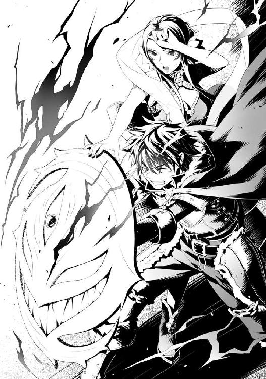
盾の宝石部分が光り輝き、ふわりと防御する範囲が広がっていく。
先ほどまでギリギリだった防御が、完全に耐えきれる領域にまで達している。
だが、この魔法を持続させるのは相当難しいようでオストは滝のように冷や汗を流している。
「く......」
俺も黙って見ているわけにはいかない。
スキルのクールタイムが終了するまでの間、余裕がある限りで回復魔法を自身とオストに施す。
「ツヴァイト・ヒール！」
まだか!?
あまりにも長いと感じる霊亀の電撃を受け止め続ける。
前回よりも長い......。
やがてバチバチと音を立てて霊亀は電撃を吐き終えた。
「今だ！」
俺の声に集中していたラフタリアとフィーロが即座に馬車から飛び出す。
「八極陣天命剣！」
「すぱいらるすとらいくー！」
ラフタリアとフィーロは至近距離にあった霊亀の頭めがけて飛んでいき、各々の武器を強く握って必殺技を解き放った。
ズブシュと呆気ない音を立てて、霊亀の喉にラフタリアとフィーロの攻撃がそれぞれ命中する。
まず先にフィーロの攻撃が霊亀の喉に届いて、血飛沫をあげながら光となって回転しながら貫通していく。
次にラフタリアが大きく輝く剣を握りしめて切り裂き、切り口が光り輝きながら広がっていく。
「はぁあああああああああああ！」
「たああああああああああ！」
掛け声と共に勢いが更に増していく。
「前回よりも硬い......ですが、ここで引くわけにはいきません！」
「みんなのためにフィーロがんばるぅううううううう！」
二人は力を出しきるかのように力を強めている。
やれ！ 耐えきった俺とオストの分まで！
「私とて黙って見ていられるものか！」
エクレールが飛び出して剣で突いた。
魔力が込められた突きだったのか、霊亀の頬に僅かに食いこむ。
前回戦った時よりも傷は深く刻まれている。
「アチョー！」
ババアも負けじと足を振り上げて真空で三日月型の攻撃を放つ。
「ふぇええ......」
リーシアも何かしようとしているが、追いつけていない感じがするな。
「はぁ......はぁ......」
「大丈夫か？」
オストの顔色が悪い。盾にかなり力を込めていたようだった。
これで倒れでもしたら先が思いやられるぞ。
「私の事など気にせずに......」
「そうは言うが......」
「大丈夫です......それよりも......早く......」
俺は再度ラフタリア達に目を向ける。
「ラフタリア！ フィーロ！ 仕留めろ！」
「はい！ はぁあああああああああああああ！」
「うん！ たああああああああ！」
俺の掛け声に応じた二人が大きな声で気合を入れて、力を出しきるように込め、ブシュッと音を立てて、霊亀の首が切断された。
「やった！」
「よし！」
空中に霊亀の頭が飛んで、首から鮮血が飛び散る。
スタッとラフタリア達が着地して、馬車から降りた俺達の方へ駆け寄ってくる。
「やりました！」
「頭を倒したよー」
「ああ、みんなよくやった！」
「己の非力が恨めしいな......」
「次がありますのじゃ！」
倒れそうなオストを抱えて俺は霊亀の胴体の方を見る。
これでしばらく動きが止まるだろう。
後方を確認すると連合軍が俺達に向けて回復魔法を唱えていた。
ん？ なんかスタミナが戻るというか、疲労が取れていく気がする。
確かスタミナを回復させる魔法があるんだったか。
代わりに術者のスタミナが減って、術者が自分に掛ける場合は魔力分の損をする魔法だったはず。
オストの顔色が僅かに良くなっている。
俺は盾から魔力を回復させる魔力水を出してオストに手渡した。
「これで魔力が回復するはずだ」
「いえ......魔力は......大丈夫なのですが、私自身の力を使いすぎてしまって......」
生命力というかスタミナは後方援護で回復したはずだろ？
それでも回復しない？
俺は懐からリーシアが変幻無双流の修行で使っていた命力水を出す。
「これを飲んでみてくれ」
薬で生命力を回復させることは可能だけど、どうも違うような気がした。
オストは人間じゃないからな。
だから命力水。ババア曰く気が回復する薬をオストに飲ませようと思った。
「は、はぁ......」
オストはゆっくりと命力水を口に含み、飲んだ。
すると徐々に顔色が良くなっていく。
「少しだけ......回復しました。ありがとうございます」
「気にするな」
俺の役割は仲間を守ること。
守ることとは物理的な意味もあるが、仲間が万全の態勢で戦えるように整える意味もある。
ラフタリアやフィーロはもとより、リーシアだって俺がコンディションチェックをする立場なんだ。
まあ、この辺りは女王もやっていることだし、今は一時的にでも協力する立場なんだからオストの身を気遣うのも必要なことだと思いたい。
それに......俺の盾に力を注ぎこんで防御力を劇的に上げるなんて離れ業ができる奴を軽視などできるはずもない。
本来は俺にかなりのダメージがあったはずではないだろうか？
ラフタリア達が物理的な功労者であるが、オストも負けず劣らずの活躍をしたのはゆるぎない。
「とにかく、霊亀が静かになっている今のうちに──」
次の作戦に移ろうと指示を出そうとしたその時。
何かが蠢くような音が霊亀の方から響き渡る。
俺達は無言で霊亀の胴体の方を見つめた。
霊亀の胴体が立ち上がり......首から先の肉が蠢いて......。
ドバァッと音を立てて何事もなかったかのように頭が再生した。
「な......」
何が起こった？ どれだけの再生能力を持っているんだよ？
前回は頭を落として......一週間は動かなかったんだぞ？ 元々再生能力が高いようだけど......ここまで早いと神話とかで見るヒドラかっての。
過去の勇者が心臓を封印するだけに留まったというのはこの再生能力のせいなのか？
「────────────────！」
「くっ!?」
霊亀が口を開いて吼える。
同時に先ほど放ったばかりの雷を吐き出した。
咄嗟に盾とプリズンを同時展開させて先ほどと同じ防御方法を取る。
「ぐ......う......」
「な、ナオフミ様!?」
「わー！」
「ふえぇええええ!?」
檻が砕け、結界も呆気なく突破され、肌が焼ける匂いが俺の鼻を掠める。
「盾の勇者様！」
オストがよろけて俺の背中に当たりそうになるのをラフタリアが支える。
「無茶です。少し休まないと」
「ですが......私が──」
「いいから......下がっていろ！」
責任感がとても強いのか、オストは俺に向けて手を伸ばす。
やっとのことで耐えている雷の攻撃に全身が焼かれるような痛みを覚える。
永遠とも一瞬ともいえる長い時間を俺は感じていた。
気が狂いそうになるほどの攻撃を受け止め続ける。
「はぁ......はぁ......」
朦朧とする意識の中、霊亀の攻撃が止んだのを俺は理解する。
ここまでのダメージを受けたことはブラッドサクリファイスを放った時以来だ。
いや、それ以上か......。肉の深いところが焼けているのを感じる。
「ごしゅじんさま!?」
「ナオフミ様!?」
「盾の勇者様！」
く......回復魔法を唱えようと思うが意識が集中できない。
その瞬間、俺を中心に暖かな光が降り注ぐ。
俺の傷が見る見る治っていく。ただ、完治するにはまだ時間が足りない。
よし、回復したおかげで思考ができるようになった。女王の後方援護魔法だ。
これだけ状況が変わっているのに即座に対応したのは称賛に値する。
「ツヴァイト・ヒール！」
回復魔法を自分に掛け、トドメとばかりに俺達に足を出す霊亀の足を受け止める。
助かった。ソウルイーターシールドでは耐えきれないほどの攻撃だった。
「フィーロ、魔力を回復しておけ」
「うん！」
魔力水をフィーロに投げ、飲ませる。
「外部からの攻撃では無理そうだ。一度撤退する。フィーロ！ 馬車を早く引け！」
「うん！ 馬車ー！」
霊亀の攻撃に耐えつつ、流星盾を展開。その結界で霊亀の足を避ける。
地響きが起こり、霊亀がもう一度俺達を踏み潰すために足を上げる。
だが、その隙が俺達にとってもチャンスだ。
「みんな急いで馬車に乗り込むんだ！」
「はい！」
「ふぇえ......」
「無念だ......」
それぞれ、口惜しそうな表情を浮かべて迅速に乗り込んでいく。
「オスト！ 早く乗れ！」
霊亀をジッと睨みつけていたオストが迷いを断ち切るかのようにこちらに駆けてきた。
「お前の本体、強すぎだろ」
「本当に......すみません」
本気になったらこんな化け物じみた動きができるのかよ。
まったく......尽く予定を崩しやがって！
「はいくいっくー！」
フィーロが馬車を引いて高速で離脱する。
俺の防御力を突破し、驚異的な生命力で頭すらも再生させる奴に正攻法で勝つなんて不可能だろ。
正攻法じゃ勝てない......これは何かしらの策を考える必要がありそうだな。
残念ながらまるで思いつかない。
撤退して女王やリーシア辺りと話をした方が良さそうだな。
あの二人なら、倒せないとしても戦う方法くらいは聞き出せるかもしれない。
少なくとも一人で考えるよりは遥かにマシだろう。
「一度撤退する。フィーロ、全速力だ」
「わかったー」
俺達はフィーロが引く馬車に乗って霊亀から撤退するのだった。
七話 時間稼ぎ
本陣に戻った俺は作戦会議を行っている連合軍の馬車へ向かった。
連合軍の上層部の顔色が悪い。
確かに絶望的な状況だ。
「後方から拝見していましたが、まさかアレほどの再生力を有しているとは......」
女王が厳しい顔で声を漏らす。
「......まことに申し訳ありません」
オストが深々と頭を下げる。今はそれどころではないだろうに。
「ああ、俺も時間稼ぎができると思ったんだがな......過去の勇者が施した封印とか、できるならやってみるしかないんじゃないか？ でなきゃ倒し方がわからん」
こんな状態で霊亀の背中にある町の残骸のある場所や体内に行くのは難しいだろう。
「封印の方法は見つかっておりますが......」
女王がオストに視線を向ける。
「できそうか？」
「はい。調査した結果、使うことは可能です」
「俺達にも扱うことのできる魔法か？」
「それは......」
女王が言葉を濁す。どうやらできないみたいだな。
そう都合良く事は運ばないってことか。
「そうか......」
「連合軍の魔法部隊の集団儀式魔法で辛うじて再現できるという状況です」
そこでオストが口を挟んだ。
「根本的な解決にはならないと思います。その封印は来るべき時までのものなので......」
「正式には解かれていないんだろ？ それなら効果があるかもしれない」
そう、オストの話では正しい封印の解き方をしているわけではないらしい。
どういった方法で封印が解かれるのかは知らないが、その封印がまだ効力を失っていない可能性はある。
「確かに、可能性を否定することはできないと思います。国の各所にある地下寺院の像が破壊されていないなら......」
「そのようなものがあるのですか？」
オストの言葉に女王が驚いている。
「はい。それが封印の要......三つある封印を解かない限り霊亀は本格的に動くことはありませんでした」
「じゃあ......封印の魔法を使って少しでも動きを抑えられないか、やってみるしかないな」
「わかりました。ただ、あまり効果的ではないかもしれません」
「頭を飛ばしても死なない相手をどうやって倒すか......結局は調べなきゃいけないんだ。俺達だけフィーロに乗って寺院の中を探すという方法もあるがな。それは次の手段でいい」
搦め手で霊亀を封じることができるのなら、それに越したことはない。
焼け石に水だろうがやらないよりはマシだな。
「伝承では......霊亀の心臓部にまで行かなければ封印することは不可能と言われています」
つまりは大人数で体内に入るだけの時間が必要と......。
うわ......面倒臭いなぁ。
「......先に碑文を調べるか？」
「それも一つの手かと......」
うーん......正直、調べて何も見つからなかったとかが一番怖いんだよなぁ。
「ごしゅじんさまー」
なんて話をしていると、フィーロが会議中の馬車に並走して声を掛けてくる。
「なんだ？ 今、大事な話をしているんだから、どうでもいい話だったら怒るぞ」
「あのね、お城が遠くに見えてきたよ」
ゲ！ いつの間にかメルロマルクの城が見える所まで来ていやがった。
「もう少しすると......大地の力の流れが良い箇所に差し掛かります」
挙句、オストがダメ押し......。
ああ、メルロマルクの城は陥落か。
短い贅沢だったな。霊亀を倒したら他国へ行って援助をしてもらった方がよさそうだ。
「イワタニ様？」
女王の問いにビクッと反射的に仰け反る。
ラフタリアやフィーロみたいに俺の考えを勘ぐったりしていないよな？
「あのねーごしゅじんさま。フィトリアからお話が来てるよ？」
「フィトリアから？ なんだ？」
「あと少し時間を稼いでほしいって。今向かってるってー」
「なに？ なんで今更こっちへ来る？」
まさか俺を殺すためにとかじゃないだろうな？
世界のために仲良くできない四聖勇者を殺すとか物騒なことを言う伝説のフィロリアルだ。
そんなフィトリアは勇者同士で仲良くできない俺達を見限って、霊亀との戦いには傍観を決め込んだはず。
「事態が事態だからフィトリアも協力せざるを得ないって言ってるよ？」
「じゃあ......フィトリアが来るまでの間さえ時間稼ぎをすれば、フィトリアが霊亀を仕留めてくれるのか？」
それに越したことはない。
伝説のフィロリアル様直々に霊亀を倒してくれるのなら俺は耐久戦に挑んでもいいだろう。
「できればそうするけど、頭を潰しても再生するなら難しいかもだって」
「ふむ......さすがに厳しいか」
正直に言えばどうやって倒せばいいのかわからないのが問題なんだ。
だが、協力者が多いに越したことはない。
「だけどこのままだとお城が壊されちゃうよ。ごしゅじんさま」
「はぁ......わかった。あとどれくらいで来れるんだ？」
うーむ......このままの速度だと、一時間もすれば城に到着しかねないんじゃないか？
そうなったら霊亀の攻撃の射程範囲に余裕で入る。
あの棘の攻撃と雷を吐かれたら一瞬でメルロマルクの城は消えるな。
むしろ方角を考えて戦わないと雷を吐かれただけで終わる。
「一時間くらいかかるって」
......うん。城は落ちたな。他にメルロマルクの城下町も終わったんじゃないか？
「女王、避難誘導は済んでいるか？」
「まだ、完全には......霊亀が到達するまでには間に合いそうにありません」
ま、目の前に霊亀がドシンドシンと音を立てて近づいてきているんだからさすがの城下町の連中も逃げるだろ。
とは思うが......かなり状況は悪いな。
「しょうがない。ここは天下のフィロリアル様が到着するまで時間を稼ぐか......」
フィトリアが到着したとしても勝てるかどうか怪しいというのがなんとも問題だ。
「ではイワタニ様に霊亀の足止めをしていただけると？」
「そうなる」
一時間というのがネックだよな。
耐えきれる確証はない。
霊亀の攻撃パターンから察するに棘の射出は時間が掛かり、雷も一度吐いたら次を撃つのに時間が必要だ。だが......さっきは即座に二射目を放ってきた。
考えられるのはダメージ蓄積で次弾装填が早まるというあたりかな？
下手に刺激さえしなければ耐えきれるかもしれない。
霊亀自身も乱発不可の必殺技のようなモノだと考えるのが妥当か。
どちらにしても連合軍を連れて霊亀の背中に乗り込むには時間が必要だ。
フィトリアが駆けつけてくれさえすればこの辺りをどうにかしてくれるかもしれない。
これも一種の賭けだな。
......耐久戦となると攻撃にそこまで手を割く必要はない。
むしろ避難誘導を先にした方がいいだろう。
よし。
「時間を稼ぐ布陣は女王、お前の後方援護が必要だ。儀式魔法で俺達の回復を怠らないでくれよ」
「イワタニ様の仰せのままに」
「連合軍の連中は助っ人が来るまでの間に近隣の連中の避難誘導、ついでに霊亀の封印を視野に入れた隊列を編成しておいてくれ」
「御意」
ここに来る途中、連合軍が飛竜を準備していたのを確認している。
アレを使えば素早く乗り込めるだろうな。
俺には跳躍力の高いフィーロがいるからどうにかなるとは思うが。
俺達が先行して心臓を潰してみるという手段がないわけではないが、問題は頭を潰した時と同じ結果になりかねないというところか。
しょうがない。俺はラフタリア達が待機している馬車に移動する。
「お帰りなさい。私達はどうしたらよいでしょうか？」
「ラフタリア、リーシア、エクレール、あとババアはメルロマルクで避難誘導をしてくれ、霊亀本体の周りには使い魔がいないだろうが、あっちに向かっているかもしれない」
先ほどからメルロマルクの城周辺に黒い影が集まっているのが気になっている。
もしもの可能性があるし、この耐久戦ではラフタリア達はあまり必要性がない。
「ふぇえ......」
「わかった。一人でも多く助けてみせよう」
「良い返事だな。ババアも頼むぞ」
「わかりましたのじゃ」
さて、と呟いて俺はフィーロとオストに声を掛ける。
「お前達は俺の方へ来てくれ。フィーロはいざって時に霊亀の頭を刎ね飛ばすのと俺達を連れて逃げる担当だ」
「はーい」
「オストはさっきやったように俺の援護を頼む」
俺の防御力に倍乗せができるオストの援護能力はこの状況でかなり役に立つだろう。
「但し、スタミナを考えてくれ。俺もなるべく回復魔法を使って自身の回復をするつもりだ。なにより戦いはまだまだ続く。消耗はできるだけ抑えたい」
「わかりました。なるべく温存します」
俺はメルロマルクの城と、霊亀を交互に見つめる。
......俺の人生で最も長い一時間になりそうだと思った。
「ナオフミ様......私がお役に立てないのは重々承知なのですが......」
ラフタリアが、霊亀を見ている俺に異議を唱える。
「近くに置いてもらえないのですか？」
「ただ耐えるだけの戦いになるんだ。それならラフタリア達には別の仕事を任せたいんだ」
「ですが......」
「心配してくれるのはありがたいがな......」
俺の意図を察してラフタリアは胸に手を当てて目を瞑る。
ラフタリアは俺の身を案じているのだろう。
正直、俺だってやりたくないし、自分でもよくあんな化け物の攻撃を耐えきれるものだと呆れる。
俺以外の勇者共から武器の強化方法を教わっていなかったら、一瞬で蒸発していたんじゃないか？ とか思ったりもするさ。
現代日本に例えるならゴ○ラ相手に人間が生身で戦っているようなもんだろ。
この場合、霊亀は亀なんだからガ○ラの方か？ なんてな。
まあ、ガ○ラ自体が現実には存在しないんだけどさ。それくらい無謀な戦いってことだ。
「絶対に、無茶をしないでくださいよ？」
「俺を誰だと思ってんだ？ 無茶をするくらいなら逃げるさ」
「いいえ、ナオフミ様は逃げずに無茶をします」
断言されてしまった。俺ってそんなに信用ない？
というかラフタリアの中で俺のイメージはどんなものなのだろうか？
まさか誰かのために命を張って庇うようなキャラを想像しているのだろうか？
ハッ！ 冗談じゃない。
「大丈夫だ。さすがにやばかったら逃げる。時間さえ稼げればいいんだしな」
何だかんだで刻一刻と時間は過ぎていってるんだ。
一時間といっても、そんなに長くはないさ。
「今は一秒でも早くメルロマルクの城に居る連中を避難させるのが先なんだ。優先順位があるんだよ」
「でも......」
「ラフタリア、イワタニ殿がこう言っているのだ。それを信じて命じられた任務をこなそうではないか。でないと私達は足手まといにしかならないぞ」
「エクレールの言う通りだ。俺の事は心配しなくていいから、少しでも犠牲者を出さないようにしてくれ」
「......はい。わかりました」
名残惜しそうに、渋々ラフタリアは頷いてくれた。
避難誘導のためにメルロマルクへ向かう馬車にラフタリア達は乗り込み、フィーロの背に乗る俺とオストを見る。
「無茶は絶対にダメですからね？」
「しつこいぞ、ラフタリア。お前は俺の母親かっつーの」
「なんですかその表現は......」
まあ、俺が親代わりなのに子供に母親のような心配させるのはどうかと思うのだがな。
「フィーロ、そしてオストさん。ナオフミ様をちゃんと見ていてください。絶対に無茶をさせないようお願いします」
「うん、わかったー」
「この命に代えても盾の勇者様をお守りします」
「俺が守られてどうするんだよ」
オストも俺を何だと思ってんだよ。
お前が自分の本体を倒してほしいと依頼してきたんだろうが。
「それじゃあ作戦開始だ！」
こうして俺とオスト、フィーロは霊亀に向けて再突撃した。
その間にラフタリア達と、連合軍の半分がメルロマルクの避難誘導に出発する。
「ごしゅじんさまと一緒ー」
フィーロが機嫌よく俺を乗せて霊亀に向かって走り出す。緊張感のない奴だ。
薬の数を確認して......霊亀の目の前に俺達は立つ。
「────────────────────！」
霊亀は俺達を発見すると大きく鳴いた。
そして巨大な足が俺達に向かってきた。
「ツヴァイト・オーラ！ 流星盾！」
俺は声を上げながら援護魔法を唱え、流星盾を展開させる。
地響きを立てて霊亀の足が俺の上に下りてくる。
馬鹿正直に受けていられるか！
流星盾が壊れる前にそのまま滑るように霊亀の足から逃れる。地面に地割れが起こる。
砂煙が上がっている中、俺は霊亀が足を上げる前にその巨大な足を全身を使って掴んだ。
「──────────!?」
霊亀の奴、思い通りに足が上がらなくて驚愕の声を上げているようだ。
ざまあないな。
ただ、少しでも隙を見せようものなら霊亀の足を上げようとする力によって呆気なく空中に放り出されそうだ。
幸いなのは俺達がいる前足の先までは首が伸びないことか。こっちへ引っ張ろうともしてくる。
「────────────────────！」
そこに霊亀が棘をゴトリと落とした......!?
視界に魔物の名前が浮かんだ!?
霊亀の使い魔（突撃型）
棘に足が生えて俺に向かって突っ込んでくる。
「この程度なら......まだ。ハァ！」
オストが突撃型に手をかざす。すると突撃型の足が止まる。
その隙に上空に多重の魔法陣が展開し、女王の援護である火の雨が降り注ぐ。
後方から突撃型を一掃する援護魔法が降り注ぎ、その合間を縫って──
「たああ！」
フィーロが突撃型を蹴り飛ばし、俺を守る。
くるくると飛んでいった突撃型が地面に突きささって身動きが取れなくなる。
「好機！」
オストが突撃型に向けて手をかざして魔法の詠唱に入る。
なんだ？ 何をするんだ？
『我、オスト＝ホウライが天に命じ、地に命じ、理を切除し、繋げ、膿みを吐き出させよう。我の力よ、我が前にいる者達に力を授けよ！』
「金剛力！」
突撃型を媒介にして援護魔法を俺に掛けた!?
「あの使い魔は私と同じ力で動いています。こうして力を奪えば......少ない力で魔法を顕現できます」
オストは霊亀の使い魔として繋がっている......？
「本体からは奪えないのか？」
「生憎......直接奪うのは難しいです」
なるほど、じゃあ霊亀の使い魔を温存しておけばオストの魔力を節約して援護魔法を唱えられるということか。
などと考えている間にも霊亀は足に力を入れてくる。
ヤバイな、少しでも気を抜くと霊亀の足を止めていられない。
オストの援護で少しは楽になったがな。
霊亀は持ち上がらない足に戸惑いながらこれでもかと暴れ出す。
ただ、意識が俺の方にだけ集中していて、進軍が止まった。
よし......バチバチと霊亀を通じて振動が伝わってくる。
これは......霊亀が俺達に向けてあの必殺技を放とうとしている。
「フィーロ！」
「うん！」
フィーロは俺の背後に隠れる。
「十分に力を奪えました。今度は問題ありません」
オストが俺の盾に手をかざして力を込める。
突撃型はまだじたばたと暴れているようだけど、体勢を立て直す前にオストに相当力を吸われたようで、動きが鈍くなっている。
霊亀が口を開いて自らの足もろとも消し飛ばそうとしているらしく、あの強烈な雷が放たれる！
確実に耐えきれるかもしれないが、念には念を入れた方がいいだろうとラースシールドに変化させる。心の奥底にボッと怒りが出現した。
「ごしゅじんさま」
フィーロの手足が黒い炎に包まれる。
まだ......俺は耐えられる。ラフタリアやフィーロが力を貸してくれているのだから。
更にスキルで盾を作り出し、霊亀の攻撃から身を守るために多重展開する。
眩しいほどの閃光と、爆音が一拍遅れてやってきた。
片手で足を掴み、もう片方の手で盾を前に出し、ラースシールドで身を守る。
......痛みがない。
さすがはラースシールドか。無傷だ。
そう思って、霊亀の攻撃を待っていると、視界の隅にタイムカウンターが現れているのに気が付いた。
４：37
一秒ごとに減っていくこの数字......。
なんだこれは？
その数字が４：15を下回った時に霊亀の攻撃は止む。よし、耐えきったぞ。
かなり余裕みたいで一安心だ。とそこで気付いた。何か体に力が入らない。
「ごしゅじんさま？」
「盾の勇者様？」
何が起こったんだ？ ステータスを確認した。
......ＳＰが０になっている!?
なんだ？ どうしてＳＰが０に？
まさか霊亀のあの攻撃、ＳＰドレインも掛かっているのか？
ソウルイーターシールドに変化させ、ＳＰを自動回復させる。
「流星盾！」
ついでに魂癒水を出して飲み、流星盾を唱え直す。
ラースシールドに変化させた時にあった数字が消えている......。
嫌な予感がする。
あの数字、もしかしたら俺、もしくはフィーロがラースシールドに支配されない時間を数値化しているのではないか？ ０になったら何か嫌なことが起こりそうだな。
霊亀が黒焦げになった足を再生させて俺達を踏みつけようとする。
「またか！」
俺は同じように霊亀の足を掴んで止める。ラースシールドに変えると近接攻撃でダークカースバーニングＳが作動してオストやフィーロを巻き込んでしまう。ギリギリまで変えない。
すると霊亀は待っていたとでも言うかのようにあの電撃を吐こうとする。
はぁ!? 幾らなんでも早すぎる!? しかも今度はオストが魔力を奪える使い魔がいない！
嫌な汗が頬を伝う。
ＳＰドレインの効果があるとして......その回復したＳＰで電撃を吐く、そして俺から奪ったＳＰでまた吐く。ラースシールドだと無傷だがＳＰが吸われる。ソウルイーターシールドだとダメージを受けるがドレイン無効のお陰でＳＰを奪われず、電撃を吐くのに時間が掛かる。
こんなところか？
「チッ！ シールドプリズン！」
霊亀の頭目掛けて檻を召喚する。
しかし、檻は出現すると同時に砕けた。さすがにあそこまで大きな物は囲めないか。
こりゃあアイアンメイデンを撃つことはできそうにないな。
次の電撃をラースシールドに変えてやり過ごす。
だが、代償にＳＰを全部持っていかれた！
ソウルイーターシールドに戻してカウンターを......。
「ごしゅじんさま大丈夫？」
「ぐ......」
フィーロに乗って逃げきるか？
あの攻撃は洒落にならない威力がある。下手にぶっ放して連合軍の部隊に当たったら大打撃だ。
「オスト、フィーロ、堪えろよ」
「うん！」
オストとフィーロが俺を支えて、先ほどのようにスキルで盾の布陣を固めて堪える。
......？
霊亀の喉が先ほどよりも遥かに光り輝いていた。
「盾の勇者様！ 密度が......」
「わかっている！」
バチバチと霊亀の甲羅まで雷を含んで、まさしく全身を輝かせて雷を吐き出した。
「ぐう......」
約四五秒の電撃が俺を突き抜ける。
火力は先ほどの比じゃない。
オストの援護魔法があってなお、俺に相当のダメージが入る。
焼けるような痛みと共に全身が感電するようなこの感覚は、日本に居た頃には受けたことのない痛みだ。
......意識が飛びかけた。
回復魔法を唱えると同時に後方部隊から援護魔法が発動する。
傷を治したが、負傷から回復した時に失われた体力は疲労として蓄積する。
「フィーロも行くね」
「任せた。他に使い魔がいるようだったら、近くに死なないように落とせ。オストの回復に使う」
「うん！」
盾の勇者が攻撃を防ぐ以外の行動を取ってはいけない、なんてルールはないからな。
フィーロが霊亀の頭を蹴り飛ばして意識を逸らす。
霊亀は口を開けてフィーロに噛み付こうとするが、フィーロは素早く避けて挑発を繰り返した。
煩わしそうに霊亀はフィーロに向けて攻撃を繰り返す。その間に俺達は体勢を立て直した。
「ふう......」
俺の結界の中に逃げ込むフィーロは疲れたように肩を落とす。
やがて時間経過と共に霊亀はまたも電撃を吐こうと口を開く。
「フィーロ、次にコイツが踏みつけてきたらオストを抱えて離れろ」
「うん！」
魔力を回復する時間が用意できるからか、フィーロは羽毛を逆立たせて意識を集中させている。
そういえば霊亀の電撃の時間よりフィーロが魔力を集める時間の方が早い。
「はぁ......はぁ......」
「オスト、お前は無茶をするな！ そのために扱いが難しい強力な盾に変えた！」
「で、ですが......」
「ここで無茶をされるのが一番損耗するんだ。堪えてくれ」
「く......わかりました」
霊亀が電撃を吐き、俺はラースシールドに変えてやり過ごす。
そして霊亀は黒焦げになった足を再生させて、俺を踏みつけようとした。
「今だ！」
「はーい！」
フィーロがオストを乗せて高速で離脱し、俺は霊亀の踏みつけをラースシールドで受け止めて顔面に向けて駆け出す。
ダークカースバーニングＳが作動して黒炎が俺を中心に巻き起こる。
呪いの炎は霊亀の足と顔面を焼き尽くした。
「どうだ！」
ダークカースバーニングＳの効果は治療遅延の呪い。あの驚異的な再生力を抑えることができるかもしれない。そうすれば時間稼ぎは簡単にできる。
だが......炭と化した足と顔の一部は何事もなかったかのように再生した。
「──────────！」
な、なんて生命力だよ。
「ごしゅじんさま」
「ああ、わかっている」
ラースシールドからソウルイーターシールドに変えて時間を節約する。
こりゃあ......長期戦になるぞ。
バチバチと......霊亀の棘が再生して、また俺達の方へ落ちてくる。
霊亀の使い魔（雷電突撃型）
......えっと。
「フィーロ行くねー！」
「待て！」
フィーロが颯爽と使い魔を蹴り飛ばそうと近づいていく。
それを止めようとしたのだが、一足遅く......フィーロが雷電突撃型を蹴り飛ばしてしまった。
「アキャアアア！」
バチバチとフィーロが痺れて仰け反る。
「し、痺れた」
ボフッと煙を吐いてよろよろと俺の方へ駆け寄る。
「何やってんだ！」
とはいえ、黙っていたらミサイルみたいに俺へ突撃してくるのは簡単に想像がつく。霊亀にとって煩わしい足止めをする俺を仕留めるためにな。
後方から援護の回復魔法が発動して傷とスタミナが回復する。
オストも雷電突撃型の使い魔に手をかざして、力の回復を完了したようだった。
「く......」
またも電撃を耐えきった時、俺はフィーロに伝言を指示する。
「フィーロ、タイミングを計って女王に進行状況を聞いてきてくれ。こっちはかなり厳しい。できる限り避難誘導を早くさせるように言うんだ。最悪、フィトリアが来るよりも前に城に到達される」
「それだとごしゅじんさまが......」
今にも泣きそうな声を出してフィーロが俺に答える。
「大丈夫だ......オストのお陰でかなり耐えきれる」
「任せてください......盾の勇者様。難しい注文かもしれませんが、霊亀の使い魔を攻撃が当たらないように保護をしてくださると助かります」
なるほど、力の媒介を保護しておけば、俺への援護も継続しやすいか。
「わかった。それで耐えきれるようになるなら悪い話じゃない。だからフィーロ、俺の心配をするな」
「......うん」
霊亀の奴、ソウルイーターシールドの効果でＳＰを奪えなかったからか、悔しそうな声を出していた。
次の発射までは耐えきれるだろう。
フィーロは霊亀に背を向けて走り出す。
「はいくいっく！」
高速でフィーロは走り去って女王の元へ行く。
『我、オスト＝ホウライが天に命じ、地に命じ、理を切除し、繋げ、膿みを吐き出させよう。我の力よ、我が前にいる者の魂を癒せ！』
「魂光！」
オストが俺に手をかざし、じわりじわりと俺のＳＰが回復していく。同時に意識がしっかりしてきた気がする。
そんな魔法まであるのか......すごく便利だな。
俺は流星盾を張って、霊亀の足を押さえつけることを繰り返す。
電撃によって更に悪くなった足場のせいできついな。地響きで生じた地割れとクレーターだ。
思った以上に厳しい......。
時々霊亀の棘が落ちて使い魔化して攻撃してくる。
今までの蝙蝠型とかの比じゃないほど、強力な攻撃力を持っているようだった。
数が少なく、ソウルイーターシールドのカウンター効果でＳＰ回復を狙うのは厳しい。
オストがそれぞれ援護魔法を掛けてくれているお陰で耐えきれているようなモノだ。
ガツンガツンと霊亀の使い魔が流星盾で作り出された結界を攻撃している。
......もしも他の勇者共の強化方法を学んでいなかったら、貫かれて死んでいたんじゃないか？
ホント、常にギリギリの戦いばかりだな。ウンザリしてくる。
もっと余裕で戦いたいってんだ。
「行きます！」
オストが魔法を唱える。
『力の根源たるオスト＝ホウライが命ずる。森羅万象を今一度読み解き、我が力の発現を求む！』
「重力場！ 超重力！」
半透明の黒い球体が使い魔に命中し、ずしりと沈み込む。
うーむ......唱える魔法が独特で見ていると興味が出てくる。
まあ、黙って観察する余裕なんて俺にはないけどさ。
『力の根源たるフィーロが命ずる。しんりを今一度読み解き、かの者を激しき真空の竜巻で吹き飛ばせ』
「どらいふぁ・とるねいど！」
フィーロが竜巻を起こして使い魔を細切れにした。
オストの唱えた重力の魔法のせいで、全身にヒビが入っていたから、トドメには十分だったようだ。
「ただいまー！」
「どうだった？」
「急がせているけどもう少しかかるって」
「そうか......」
「あ、あとスタミナを回復させる薬だって。魔法ばかりじゃ効果が薄くなるから使ってって言ってた」
フィーロは行く時に持っていなかった袋から薬を出して俺によこす。
飴のような薬だった。
口に含むとミントのような味がした。少しだけ力が回復するような気がする。
「後はごしゅじんさま用のとっておきだって」
「何？」
......ルコルの実だ。
これはアルコール度数が凄く高くて原液みたいなものらしい。
ただ、どうやら俺にはアルコールなどの効き目がないらしく、魔力とＳＰが回復する効果がある。
「はいはい」
それも口に含む。
......飴よりも力が戻ってきたような気がする。
ステータス魔法で確認するとＳＰと魔力が回復していた。
「回復アイテムをもらった。オスト、俺のＳＰを気にする必要はないから、別のところに力を割り振ってくれ」
そもそもＳＰの方は魂癒水で回復することが可能なんだ。
集中力の方もある程度は戻ってきたから、次はまだ耐えられるだろう。
「わかりました」
霊亀がまたも雷を吐き出そうとする。
く......どっちで耐えるべきだ？
「盾の勇者様......黒い盾を......」
「ん？ わかった！」
オストの援護魔法でかなり助かっている。
ここでは指示に従うとしよう。
『我、オスト＝ホウライが天に命じ、地に命じ、理を切除し、繋げ、膿みを吐き出させよう。我が力よ、略奪せし力から彼の者を守れ！』
「ドレインシール！」
ラースシールドで霊亀の雷を耐えきる。
これで、ＳＰを奪われるんだったな。
回復のためにルコルの実を食べようとしてステータスを確認する。
すると......ＳＰが残っている。
オストが何かしたのか。
「しばらくの間、盾の勇者様を守る加護を掛けました。これで力は奪われないと思われますがどうでしょうか？」
ＳＰドレインを軽減してくれる？
見ると霊亀の喉がバチバチと帯電こそしているが、吐き出すには威力が満たないようだ。
こうして霊亀の足止めという長い戦いが続いた。
この攻防はもう二度とやりたくないと思う。
時にラースシールドで耐え、時にソウルイーターシールドで耐えることを繰り返した。
蛮族の鎧が所々ボロボロになっている。
自己修復が追いつかなくなってきているんだろう。
きついな。
「はぁ......はぁ......」
ラースシールドのタイムカウンターが０：30を下回った。この頃になるとフィーロも頭を掻き毟るように何かを堪えている。
俺も何か心を支配する黒い感情に頭がおかしくなってくる。
「ご、ごしゅじんさま......フィーロ、もう......」
ぶつけどころのない怒りを逃がそうとするフィーロと俺。限界が近いな。
もうラースシールドに変えていられない。
「わかってる。もう変えない！ 耐えるぞ！」
「待ってください」
オストが静かに目を瞑り、意識を集中しているようだった。
そして......俺の盾に手をかざす。
盾から黒い炎が噴き出してオストの手を焼き焦がす。
「な、何を──」
『我、オスト＝ホウライが天に命じ、地に命じ、理を切除し、繋げ、膿みを吐き出させよう。憎悪の盾の力よ、我が前にいる者を薙ぎ払え！』
「黒竜炎！」
オストの手から炎が放たれ、霊亀の顔面に浴びせられる。
「────!?」
もがくように狂犬のように猛っていた霊亀の表情が苦悶に歪む。
黒い炎が霊亀の顔面を焼き焦がしているようだ。
その代償にオストの手に酷い火傷の痕ができる。
しかも重度の呪いを被ったのだろう。黒く染まっていた。
「盾の憎悪の力を利用しました。これで......少しは時間が稼げるでしょう」
「お前......」
見ると残り時間が大幅に増えていた。
３：00にまで回復している。
すげえ......今までで一番、便利な魔法を使いこなす奴を見たかもしれない。
本来は敵として戦うべき相手なんだろうけれど、称賛に値する。
この事態をいち早く、最小限の被害で抑えようとしているのが伝わってきた。
「さあ！ まだ時間が掛かりますよ！」
「そうだな......フィーロ、フィトリアはあとどれくらいで到着すると言っている？」
「えっとね。なんか雑音が多くてよく聞こえないけど、あと三〇分くらいって言ってる」
まだ半分も残っているのかよ。
霊亀の攻撃を止めてはいるが......。
そこで、霊亀の攻撃が苛烈さを増す。
バシュッと......空に棘を射出し始めた。
オストの方へ視線を向けると、静かに頷かれた。
なんとか足止めはしているが、それでも地脈とやらが流れる範囲にまで来てしまったらしい。
「まだ......耐えなきゃいけないのか」
いい加減逃げたくなるな。
だが、少しずつ近づいてくる城を見ているとそうも言っていられない。
近くには村だってあるんだ。
その村さえも霊亀の放った棘が落下した衝撃で起こる爆発に飲みこまれて消え去ってしまう。
今は......少しでも耐えるしかない！
「くう......」
何度目かの攻撃に俺は意識が飛びかけていた。
もはや蛮族の鎧は所々が大きく破損して形を成していない。
霊亀も馬鹿ではないのか、使い魔を出すのをやめてしまっていた。
そのせいでオストの魔力の回復はままならない状況だ。
命力水はもうストックが尽き、俺自身も回復魔法やスキルを連発して唱えたせいでルコルの実も尽きた。
「いい加減、撤退するのも手かもしれない」
「ですが、それでは被害が......」
「これだけ時間を稼いだんだ。逃げきれないのが悪いと思って諦めるしかない」
耐え続けることで時間の感覚が狂ってしまっている。
フィーロに尋ねてもフィトリアと通信ができないとまで言っている。
長いこと強力な攻撃にさらされたせいで、辺りの魔力とかが変調をきたしているのだろう。
後方からの女王の援護も間隔が開きつつある。
時々凄く強力な魔法が放たれるのだが、霊亀に致命傷を与えるに至っていない。
それにラフタリアと約束をしているんだ。
無茶をしないでできる限り守るとな。
それも、もはや限界に等しい。
オストの手もラースシールドの呪いを受けて黒く染まっている。
憤怒の力を抜いてもらったのは......三度を超えている。
ドレイン軽減も何度効果切れをしたか忘れた。
いい加減にしてほしい。
これだけ耐えるのに何度、危険な橋を渡ったと思っているんだ。
教皇と戦った時よりも間違いなく過酷だったと言える自信がある。
強くなったと思ったけれど、楽に戦える時の方が少ない......。
などと撤退を視野に入れたその時！
霊亀の後方から土煙がこっちに向かって近づいてくるのが見えた。
「あ！」
フィーロが土煙の方角に翼を向ける。
直後、地響きと同時に大きな風が巻き起こった。
その風に乗って、空色の大きな羽が舞う。
フィロリアル......フィーロと同じフィロリアルクイーンの羽だ。
当然ながらその羽の色には見覚えがある。
「遅くなった......よく時間を稼いでくれた。フィトリアも盾の勇者のがんばりに応える」
そう、フィトリアがこっちに向かって全速力で駆けてくる姿だった。
気配というやつだろうか？ 霊亀が俺達を無視して、そちらの方角を向く。
フィトリアが大きく翼をクロスさせて......むくむくと全身が膨れ上がる。
今やその身体は霊亀の持ち上げた頭の高さにまで達している。
もちろん、霊亀と同じ大きさほどではない。あくまで霊亀が四足で立っている時の頭の高さだ。
「はぁああああああああ！」
高く跳躍したフィトリアが霊亀の頭に力強くツメを振り下ろす。
ズチュッと音を立てて霊亀の頭は押しつぶされた。
おお！ なんという威力！
これなら霊亀に勝てるんじゃないか!?
だが──
霊亀はブチブチと自らの頭を引きちぎって即座に再生させ、バチバチと雷を吐き出してフィトリアに向けて吐きかける。
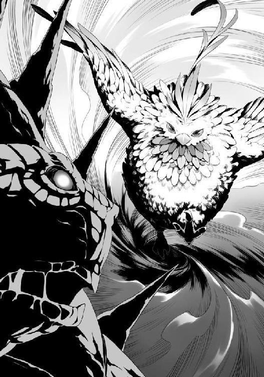
だが、フィトリアは軽く身体を捩ってそれを避け、遠心力の掛かった足で再度頭を蹴り飛ばした。
今度は頭が消し飛ばされることなく、横に伸びるだけに止まっている。
さながら第二回怪獣大決戦だな。
前回は恐竜だったが、今回は亀だ。
怪獣映画に似たようなものがあったな。
って......こんな所で黙って見ていたら踏みつぶされるだろ。
「フィーロ！ 念願のフィトリアが到着したようだし、一時撤退だ！ このままじゃ俺達も巻きこまれてぺちゃんこだ！」
「やっと......援軍が来たのですね」
がっくりと倒れこむオストを、俺が支えてフィーロの背に乗る。
「よし！ 一時撤退だ！」
「はーい！ はいくいっくー！」
神足の速さでフィーロに乗り、俺達は援護をしてくれていた連合軍の元へ脱兎のごとく逃げ出したのだった。
八話 探索
「伝説のフィロリアル......やはり実在したのですね」
霊亀相手に怪獣大決戦を始めたフィトリアを遠くに見ながら、俺達は連合軍の元へ辿り着いた。
正直、俺の姿はかなりボロボロだ。
鎧は所々破損していて、自動修復が追いついていない。
「まあ、これで解決してくれたらいいんだけどな」
フィトリアが霊亀相手に攻撃を繰り返している。
「────！」
霊亀が背中の棘を天空に射出。
フィトリアはそれを察知して素早く後退......それでも降ってくる棘を弾いて軌道を逸らしている。
器用だな。
「クラッシュチャージ！」
フィトリアが片翼を広げて叫ぶ。するとフィトリアが引いていた馬車がフィトリアの声に呼応するかのように巨大化し、変形......する!?
馬車はチャリオットへと変化。フィトリアがチャリオットを引いて霊亀を跳ね飛ばすようにぶつかった！
またも霊亀の頭、両足を破壊する。
「......」
フィトリアが煩わしそうに甲羅の方に力を込めるが、それ以上は進まない。
諦めたかのように馬車を変形させながら下がると同時に、霊亀は欠損した部分を即時に再生させて雷を吐き散らした。
「ごしゅじんさま。フィトリアからの伝達ー」
「なんだ？」
「あのね。甲羅を破壊するのは難しいって、フィトリアがこうして時間を稼ぐから倒す方法を見つけてほしいって」
直接喋ればいいだろうにと思うが、あそこから俺に向かって話しかけられたらそれはそれでうるさそうだし、大音声にしか聞こえないか。
「配下のフィロリアル共はどうしたんだ？ 数で攻めればいいだろ」
「んー......急いで来たからついてこれなかったんだって」
ああ......そう。確かに普通のフィロリアルじゃあ追い付けそうにないよな。
強さも期待できないのかもしれない。
「ナオフミ様！」
戦闘を見ているとラフタリア達がメルロマルクの城の方からやってきた。
「避難誘導は上手くいったか？」
「一応、メルロマルクの城下町にいる人達の避難はほとんど完了しています。次の作戦に入るだろうとの話を聞いて戻ってまいりました」
「......そうだな。俺達の出番はまだまだ続きそうだ」
フィトリアのお陰で時間こそ稼げているが、決定的な勝利には至っていない。
まったく、霊亀ってどんだけ化け物性能を宿しているんだよ。
「女王、フィーロの話は聞いたな？」
「はい。やはり話の通り......霊亀の体内に侵入し、封印を施すことを試すのが妥当かと思います。他には、見つかるかどうか怪しいですが勇者が残した碑文をイワタニ様に解読していただく案があります」
「同時並行しかないな......」
と、話をしている最中にもフィトリアと霊亀の戦いは続いていた。
「な──」
俺は絶句した。霊亀の頭が複数に増え始めたのだ。
その頭がそれぞれ雷を吐き散らかしてフィトリアを焼き焦がさんとしている。
ただ、雷を出す部分が増えた影響か、火力が若干落ちているようだ。
「......早く次の行動に移った方がよさそうだな」
オストがよろよろとフィーロから降りて、霊亀を見つめ始める。
無力感か......それとも、本体の暴走を嘆いているのか。
「乗り込むといってもできるのか？」
「難しいと思いますが、イワタニ様、よく霊亀を観察してください」
「ん？」
言われるまま俺は霊亀に目を凝らす。
よーく目を凝らすと変貌した背中の甲羅......棘が多いのだが、その根元に山の名残が見受けられた。
あの部分を登っていけば、霊亀の体内へ続くといわれる洞窟へ行ける......か？
フィトリアと戦う時の霊亀の攻撃パターンも観察していると見えてくる。
頭、前足、背中の棘を射出と......背中に乗り込んだ人間にとって、そこまで行動を阻害するものではなさそうだ。
これで直立で立ち上がる動作とか、急回転してぶつかるとかされたらシャレにならなかったな。
......このままフィトリアがボコボコにしていたらやり始めそうで怖いけど。
「伝説のフィロリアルと戦っている今なら後ろから乗り込むことは可能かと思われます」
「ふむ......危険ではあるが、やるしかないな」
俺はフィーロに声を掛ける。
「というわけだ、フィトリア。俺達はこれから霊亀の背中に乗り込む。そして前回は見つけられなかったが霊亀の心臓とやらを探し出す。その間戦っていてほしいが、頼めるか？」
「えっとね。わかったから早くしてって言ってるよ」
なら遠慮する必要はないな。できれば暴れすぎないでほしいところだが、文句は言えないか。
「よし！ みんな、これから動ける奴は霊亀に乗り込んで心臓部を目指す。みんなついてこい！」
「皆さま！ 世界のため、盾の勇者であるイワタニ様のお言葉通り、行きましょう！」
「「「おおー！」」」
連合軍の連中が声を上げる。
「皆さま、イワタニ様が耐える姿を見て、己を奮い立たせております。この勢いで行きましょう！」
「確認だ。女王、お前も来るか？」
「状況次第では霊亀の誘導を行おうかと考えておりましたが、伝説のフィロリアル様が足止めしている今、私も共に参ります」
「わかった」
ラフタリア達の方を見ると若干疲労の色が見えている。
そりゃあそうだろうな。俺だっていい加減、疲れて眠くなってきた。
だが、今はそれどころじゃない。
「ふぇえ......イツキ様ぁ......」
リーシアの奴はいい加減、困ると樹の名前を出すのをやめてほしいな。
アイツにどんな甲斐性があるというんだよ。
「ナオフミ様、お体の調子は大丈夫なのですか？」
「問題は......ないな。この戦いが終わったら鎧は修理か改修した方がよさそうだけどな」
機能こそ維持しているが、連戦の影響でボロボロだ。
着替えるのも視野に入れるが......着ぐるみで戦いたくはない。
そもそもあの着ぐるみは霊亀と相性が良くないだろ。
それともリーシアが着ているフィーロ着ぐるみを奪うか？
「ふぇ!?」
勘が良いのか、リーシアがキョロキョロし始めた。
そしてリーシアはオストを気遣うように手を差し出す。
「大丈夫です......みんな戦いを終わらせようとしているんです」
「......はい」
「霊亀に乗り込むとして、私達に出番はあるのか？」
エクレールがフィトリアと霊亀の戦いを息を呑んで見ていた。
「最初の時よりも遥かに凶暴な変化をしているんだ。霊亀の体内へ続くとかいわれた洞窟にも変化があるかもしれないだろ」
「そ、そうだな」
「それに......霊亀の使い魔がその洞窟内で出てくるかもしれない。その時はお前等が役に立つ......十分に備えてくれ」
「そうだな......」
「ワシ達が行くしかないのじゃ！」
「はい......行きましょう、ナオフミ様！」
「おう！」
こうして俺達は、比較的動きのない霊亀の後方に回り込み、霊亀の甲羅に乗ることにしたのだった。
九話 霊亀洞
俺達は霊亀の後ろから甲羅に乗り込んで進んでいた。
棘が目立つが、一応山肌が残っている。所々木々が生い茂っていた。
伝承では洞窟から体内に侵入するらしい。前回俺達が調査した時、その洞窟から霊亀の体内へと入ることはできなかったんだけどな。
あと、最悪なことに霊亀の背中には使い魔が沢山いるようで、色々と出迎えてくれる。
どこから湧き出しているのやら、蝙蝠型とか雪男型がワラワラといる感じだ。
幸運なのは突撃型や寄生型はいないところか......？
だが......この棘の山の部分をとぼとぼと探し回るのは骨が折れる。
ましてや俺達は連合軍を連れて登山しているようなものだ。
その上、フィトリアと戦っている霊亀が動くものだからあまり前に進めない。
「オスト、わかるか？」
オストに霊亀の心臓へ繋がるといわれていた......霊亀洞へ案内できるか頼ってみよう。
「おそらく、あちらだと思います」
「そうか。お前等、ちゃんとついてくるんだぞ！」
「はい！」
オストの指示に任せて山道を進む。
後方ではラフタリアとエクレールが霊亀の使い魔を仕留めている。
リーシアや女王は後方から援護しているな。
ただ、群がる使い魔の猛攻に脱落する者も多い。
「フィーロ！」
「うん！」
高速で走り出したフィーロが使い魔を蹴り飛ばす。
「ナオフミ様！」
すぐ後方で悲鳴が上がり、ラフタリア達が即座に悲鳴の方へと向かって帰ってきた。
「霊亀本体を足止めできても、使い魔がまだいるのでは被害が増える一方です」
「少数精鋭で行けたらまだ良かったんだがな」
使い魔との戦闘でさえも苦戦している連合軍の連中、コイツ等を心臓まで連れていくのか......。
無限に湧き出る霊亀の使い魔との戦闘を考えると......厳しい。
そう考えていると別の部隊で動いていた連合軍兵が合流して駆け寄ってくる。
「目的の洞窟と思しき場所を発見いたしました。おそらく、霊亀洞だと思います」
そして指差したのは山の中腹だ。よく目を凝らすと確かに洞窟が見える。
前回も見たが、山の形状に変化があったので気付けなかった。
「俺が先行する。行くぞ！」
「了解！」
「皆の者！ 盾の勇者様に続け！」
「「「おおー！」」」
俺達は使い魔を倒しながら兵士が見つけた洞窟に侵入した。
「気を付けろよ」
「はい」
ラフタリアが魔法で光の玉を作り出して洞窟内を照らす。
俺が先頭を歩き、ラフタリア、オスト、エクレール、フィーロ、リーシアと続き、女王とババア......そして連合軍がついてくる。
前回来た時と構造が若干変化しているように感じる。
以前来た時には居なかった、洞窟内の壁に引っ付く目玉の化け物、霊亀の使い魔（設置型）や芋虫のような使い魔が現れるが戦えないことはなかった。
問題はこの洞窟......迷路みたいに複雑な構造をしているみたいなんだよな。
壁は生き物ではなく石や土壁だ。
本当に霊亀の体内に繋がっているのか......。
いっそのこと頭の方から口へ入って乗り込めないかとか考えてしまう。
あんな再生を繰り返す頭の方から入れるのか些か疑問ではあるがな。
「道はわかるか？」
「一応、前回洞窟を調査した時のものの控えを持ってきました」
女王がマップを広げて俺に見せてくれる。
「それは助かる」
一からマッピングしていたら時間が掛かりすぎるからな。
やはり洞窟内は迷路のように複雑な構造をしているようだ。
あと、入り口はもう一つ、町の方にもあるっぽい。
「この道を通って寺院の方へ行けるか調べてみるか？」
「そうですね。何かヒントが見つかるならそれに越したことはないでしょう」
問題は......心臓のある場所までの道が描かれていないことか。
途中までというか、霊亀が蘇らないと進めなくなっているとかそういうものだったんだろうな。
あんまり頼りにはできないか......。
「お？」
地図を確認していると若干広い場所を発見。
ここに待機してもらって探索班を出すのがよさそうだ。
正直、人数が多すぎて逆に身動きが取りづらい。
これがラフタリアやフィーロと同じくらい実力がある奴等なら問題ないんだが、二人と同じレベルを求めるのは酷だろう。
ともあれ、休憩と称して連合軍を待機させるのは良い手だ。これで行こう。
俺はそう決めると洞窟内の広い場所を目標に定めて連合軍を進ませる。
のだが......。
「あれ？ この先でよかったはず......だよな？」
「地図ではそうなのですが......」
地図通りに来たはずなのに、途中でグネグネと見知らぬ道に出てしまう。
「地図が間違っているんじゃないか？」
「おかしいですね......途中までは合っていたはずなのですが......」
霊亀が本格的に行動をしていると洞窟の形状も変わるとかか？
確信に至れないのがなんとももどかしい。
どうしたものか。
そう思いながら道なりに俺達は進んでいく。
幸い、広い場所へ進もうとした道は一本道だったからな。
これで二つに分かれているとかだったら、どこか別の場所で待機した方がよかったのだろうけどさ。
とは思いつつ、ぐるぐると長い道を進まされた。
その先は......どうやら広めの場所に出られたようだった。
形状こそ変わっているが、大きな場所に変化はないとかだろうか？
しかし、目的の場所に到着したのはいいんだが......。
「なんかデカイ魔物がいるな」
広い所ではそれ相応の霊亀の使い魔が幅を利かせている。
無数にいる他の使い魔と比べて全長が長い。
広場で侵入者を排除するためだけに配置されたような陣取り方だ。
ＲＰＧなんかでいうところの中ボスって感じだな。
霊亀がアレだからな。雑魚よりも強いと相場が決まっている。
問題は数か。
「ひーふーみー......地味に多いな」
全部で七～八匹ほどいる。
一匹くらいなら余裕だろうが、あの数だと連合軍がやばそうだ。
「そうですね。どうしましょう？」
倒しても次々と出現したら困るのだが......やってみるしかないか。
「よし、幸いそこまで数は居ないから俺達が仕留めて様子を見よう。連合軍の奴等は待機、後方に注意しろ」
「了解！」
「はーい」
「ふぇ......がんばります」
「はぁ......よし、突撃！」
俺達は広場を占拠している使い魔達に向かって突撃した。
外にいるゴリラや雪男とは異なる......亀男？ 全長四メートルの化け物。
名前は霊亀の使い魔（守護兵）だ。
「やー！」
フィーロが使い魔の甲羅を思いっきり蹴り飛ばす。
バキッと音がして甲羅が陥没し、壁にぶつかって動かなくなる。
「やあああああああ！」
ラフタリアは使い魔の首を剣で刎ね飛ばす。頼りになるな。
リーシアは弱い攻撃魔法で注意を引いてラフタリア達の援護をしている。
自らがターゲットになった場合は俺の流星盾の範囲に入って身を守る。
一応連携は理解しているな。及第点だ。
というか、連携自体は問題ない。後は実力が身に付けば伸びていくはずだ。
問題はその実力であるステータスの方なんだがな。
......今は前に集中するか。
「は！」
オストが守護兵の一匹に手をかざして動きを遅くさせる。
その隙をエクレールとババア、そしてリーシアが突いて仕留める。
「アイシクルニードル！」
女王が魔法を詠唱して守護兵の動きを阻害する。
なんとも頼りになる布陣だこと。
「あっけないものですね」
剣に付いた血を払って飛ばしたラフタリアが使い魔の殲滅を確認した。
確かに予想より遥かに弱かった。
霊亀がアレだったからな。警戒しすぎたか？
いや、連合軍を後ろに連れているんだ。警戒しすぎるくらいが丁度良い。
「うん。ちょっと硬いけど」
「フィーロはあえて硬いところを蹴っているではないですか」
「だって、他が柔らかいんだもん」
「無駄な動作ですよ」
二人は他愛ない話をしている。天才と秀才って感じの会話だな。
「お二人はとても強いですね！」
「リーシア、お前もなるんだよ。変幻無双流の修行はどうした？」
「ふぇ──がんばります！」
と、リーシアが持っていた剣で守護兵を貫く。
「うむ！ 聖人様を攻撃するのと同じ要領で攻撃するのじゃ！ さすれば倒せない敵はないじゃろう」
「ババアてめぇ......」
言うに事欠いて俺を攻撃するのと同じとかふざけたことを言うんじゃない。
とは思ったが、リーシアの突きで、霊亀の使い魔（守護兵）は貫かれた。
う......なんか心臓がキュッとしたぞ。俺もあんな風に剣が貫通したら痛いじゃ済まない。
なんて話をしながら掃討を終える。
「増援は......今のところないか」
「ですね」
倒したその場から無限に湧いてくるとか可能性としてはあったが、どうやらそういうトラップではないようだ。
「すごい......」
連合軍の連中が俺達にポツリと漏らす。
俺に言わせてもらえば、お前等が弱いと思うのだが......。
平均Ｌｖはどれくらいなんだ？ これでＬｖ60とかだったら泣けるぞ。
「盾の勇者殿と女王でごじゃる」
影が現れた。というか居たのか。
影というのはメルロマルクの女王が使役する、国の隠密部隊みたいな連中だ。
忍者みたいな奴らだと思えば概ね間違っていない。
手に持っている短刀に使い魔の返り血が付いているところを見るに、戦ってはいたみたいだな。
「どうした？」
「ここを拠点に調査をするでごじゃるな」
「ああ......というかついてきていたのか」
「今回の作戦では連合軍の護衛を仰せつかったでごじゃる」
「任せましたよ」
「そうだな」
影に連合軍の護衛って......コイツ等も一応戦うための部隊のはずなんだがな。
霊亀の使い魔はそこまで強い魔物だったか？
まあ......連合軍は霊亀を封印するための特殊部隊のようなものと考えればいいんだろう。
戦闘能力よりもそちらに能力を割り振ったと考えておこう。
「よし！ 連合軍の連中共、ここを拠点に霊亀の心臓を探す。お前等はここを守ることに専念してくれ。俺達は探索を始める」
「りょ、了解！」
連合軍は緊張を解いて洞窟内の広場で各々警戒しつつ休む。
極度の緊張と連戦で大分疲労していたようで、疲労困憊って感じだ。
そんなに疲れるほど戦ったつもりはないんだが......。
というか俺からしたら、あの持久戦が一番しんどかった！
盾の影響なのか？ それともラフタリアやフィーロがおかしいのか。
どちらにしても霊亀を倒したら色々と考えないとダメそうだな。
「影......ついでに知っているなら、連合軍の平均Ｌｖはどれくらいだ？」
「霊亀の心臓封印の部隊の平均は65でごじゃる」
「......予想より悪いじゃねえか。女王、どうにかしろよ。Ｌｖは元より期待以下の能力だぞ。ラフタリア達のＬｖだってまだ70台なんだぞ？」
「普通はその領域に達するのに努力して数年は掛かるものなのですよ？」
なに？ 成長補正ってこんなにも差が開くのか!?
リーシアのステータスが低いんじゃなくて、補正がないとこの程度とか？
イヤイヤ、さすがにそれはないだろう。
樹はリーシアが弱いから理由を作って解雇したわけだし。
......そのリーシアもフィーロ着ぐるみのお陰で多少は戦力になっているんだからなぁ。
親父に頼んでフィーロ着ぐるみを量産させるか？ 材料があと二着分しかないけど。
......量産型フィーロ着ぐるみか......フィーロの毛をむしったらできるかな。
「!?」
フィーロが羽毛を波のように逆立ててキョロキョロとする。
「どうしたんですか？」
「なんか変な気がしたの！」
口に出してもいないのに気付かれた。
......勘が良い奴だ。むしるのは無理そうだな。
「影はアイツ等よりは強いよな？」
できれば期待したいところだが、調査に出して使い魔にやられて帰ってこなかったじゃシャレにならないぞ。まともに戦えるかどうかは確認しておきたい。
「暗殺や戦闘も視野に入れた専門部隊でごじゃるから、ある程度のＬｖと武術の心得はあるでごじゃる」
「じゃあ影部隊の半分を護衛、残り半分を探索に回してくれ」
「わかったでごじゃる。とはいっても、今回の件で影もかなり損耗しているでごじゃるから、そこまで期待しないでほしいでごじゃる」
「わかっている」
ともあれ、作戦は決まったな。
まだまだ先は長い。心臓部は影達に探させ、見つけるまで連合軍を休憩させるのがいいだろう。
それまでの間、俺達は別に調査をする。
「ババアとエクレール。お前は連合軍と一緒にここで待機、魔物が出てきたら戦え」
「了解ですじゃ！」
「わかった！」
「フィーロは影と一緒に探索だ。フィーロ、鼻を使え。頼りにしているぞ」
「はーい！ がんばるー！」
そして残った連中でやることと言えば。
「で、ラフタリア、オストとリーシア、そして女王......だな。この洞窟を伝って町の方にある寺院の残骸を見つける」
「はい」
「心臓部を探すのも重要ですが、ヒントを見つけるのも必要なことですよね」
「ふぇえ......がんばります」
「わかりました。イワタニ様の命ずるまま、行きましょう」
女王を連れていくのはなんか問題がありそうな気はするが、俺の知る中で知識が豊富な方なのだからしょうがない。
ま、女王は何だかんだで護衛が多いし、本人もそれなりに強いから連合軍の連中よりは守りやすいだろう。
十話 霊亀事件の容疑者
「はぁ！」
ラフタリアが霊亀の使い魔に飛びかかり、剣で切り裂く。
「まったく次から次へと。外にあんまりいないから油断していた」
寺院の方へ洞窟を使って移動している俺達だが、途中で何度も霊亀の使い魔達と遭遇する羽目になってしまっている。
この霊亀洞内は使い魔の巣窟でもあるんだな。やはり。
地図もあまり頼りにならない。
......正直面倒この上ないな。
ゲームだとダンジョン探索とか楽しめる要素だけど、今の俺達には時間がない。
外では今でもフィトリアが足止めに戦ってくれているんだ。
しかも、霊亀の頭が増えた状態で。
あんな雨あられの攻撃の中で時間を稼いでくれているんだ。ダンジョン探索を楽しもうとか無理があるな。
勘を頼りにとぼとぼと霊亀洞内を寺院の方へ歩いていく。
その途中、分かれ道に差しかかった。
「女王、道はどうだ？」
「所々で変化しているようですね......方角は問題ないと思われます」
「おそらく......あっちだと思います」
オストが静かに町とは違う方角を指差した。
「そっちは町とは別の方角だぞ？」
「なんとなくですが......うっすらと先が見えるような気がして......すいません」
オストの勘を信じるか、方角で決めるべきか。
だが、よく考えてみればオストは霊亀の使い魔なんだよな。
つまり霊亀とは何らかの繋がりがあって然るべきなんだ。
ならばオストの言葉を信じてみてもいいのかもしれない。
少なくとも今までの行動から信じてもいいと思っている。
まあ、これで裏切ったのなら十分な制裁をしてやればいいさ。
「......わかった。とりあえず、オストの示した方へ行ってみよう」
「はい。では行きましょう」
オストの指差した方の道へ歩き出した。
この考えが正しかったのはすぐに判明する。
なにせ、歩いてしばらくすると道が大きく曲がって寺院の方へと進んでいっているのだからな。
別の道に行ったら同様に曲がって明後日の方角へ行っていたのかもしれない。
そう思いながら進んでいると、今度は十字路に差しかかった。
しかも霊亀の使い魔が数匹いる。
「てい！」
「アイシクルフローズン！」
即座にラフタリアが切りつけ、女王が魔法で動きを鈍らせる。
オストが霊亀の使い魔の動きを鈍らせて、リーシアもあわてながら剣で突いていた。
「さて......この道は──」
霊亀の使い魔を仕留めてオストに視線を向けようとした時、霊亀の使い魔（蝙蝠型）が増援で駆けつけると同時に、曲がり角から人が現れる。
「......冒険者？」
なんでこんな所に冒険者がいるんだ？
そこには三人の冒険者が立っていた。
一人は俺より身長が高めの男。
槍のような武器を片手に持っている。服装は重そうな全身鎧。
ただ、身のこなしは良さそうな気がした。
次にツインテールの......全体的に白っぽい女の子。ただ、幼いというよりもキリッとした感じだ。
軽装鎧を着ていて、着なれていない感じが駆けだしの冒険者っぽい。
身長は俺よりも僅かに低いけど......どうにも違和感がある。
最後にショートボブの髪型をした女性。
身なりがとても良くて、貴族を連想させる魔法使いっぽい人だ。髪の色は赤......かな？
なんか色々とおかしな連中だ。
そりゃあ連合軍の中には冒険者も混じっているらしいが、霊亀に乗り込む部隊は国が選出した者だ。
命令無視をして俺達の後を追いかけてきた......にしては何かおかしい。
「名声目当てなのかもしれないが、早めにここから出ることを勧めるぞ」
「お、おう......いや、わ、わかりました」
「イワタニ様、少しお待ちを......おかしいですね。冒険者がこのような場所にいるとは......霊亀が動き出す前に潜っていて取り残されていたといったところでしょうか？」
それは考えられなくもない話だ。
なんせ倒した霊亀を調査していたんだ。冒険者が洞窟内にいても不思議ではない。
逃げ遅れて霊亀の使い魔を倒しながら洞窟内に身を潜めていた......と考えれば辻褄は合う。
「......？」
ラフタリアが一歩前に出て首を傾げる。
「どうした？」
「いえ、この方々は......何か姿を隠す魔法の類を使用しているように見えるんですよ」
ラフタリアは光と闇の幻覚の魔法の資質がある。
つまり何かしらで姿を隠している、幻覚の類には耐性が強いのかもしれない。
「怪しいですね。ラフタリアさん、何かできませんか」
女王が眉を寄せて頼む。女王が言わなかったら俺が指示していたところだな。
「わかりました。失礼ですが、姿を偽っているのが悪いと思って諦めてください」
ラフタリアが魔法を唱える。
と、同時に冒険者共が大きく飛びすさる。
「チッ！」
やはり何か隠しているな。だが、もう遅い！
『力の根源たる私が命ずる。真理を今一度読み解き、真なる姿を現せ！』
「アンチ・ミラージュ！」
ラフタリアの手から光が放たれて辺りを照らす。
そして魔法の力で冒険者を覆っていた力が薙ぎ払われた。
俺は......正体を露わした冒険者を見て絶句してしまった。
「お、お前は──」
三人の冒険者。
いや、この三人は冒険者なんかじゃない。
前衛は男。人柄の良さそうな、頼りになる顔。特徴的な大きな鎌を持っている。
中衛は女。幽霊のように白い肌、スラリと伸びた黒髪。もはや武器としてしか見えない、扇。
後衛も女。海のように青い髪、額には煌びやかに輝く宝石。そして俺が渡した宝石の腕輪。
見間違えるはずがない。
俺達が倒さなければいけない......敵。
「チッ！ ばれちまったらしょうがない。こんな所で坊主達と出会ってしまうとはついてねえな」
「ラルク、わかってますね」
「警戒はしていたはずなのに出会ってしまうなんて......」
そう、そこにはなぜかラルクを筆頭に、グラス、テリスが現れたのだ。
なんでこんな所にいるんだよ!?
グラスは波の亀裂から出てくるんだろ。
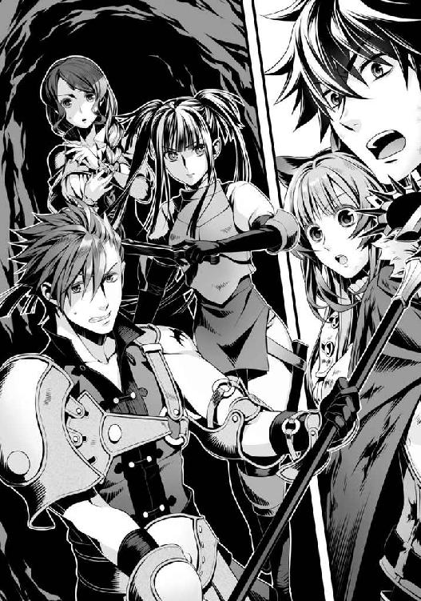
まあ、ラルク達は波が起こる前にいたわけだし、何かしらの手段でこっちに来れるのかもしれない。
でだ。ラルクとテリスは俺達が出会った時と同じ服装をしている。
問題はグラスだ。
一目でグラスと見抜くのは難しい容姿をしていた。
髪はツインテールにしているし、服装も西洋の軽装鎧を着ている。
元々が和風美人だったから今の容姿には違和感が凄い。
髪の色とか顔立ちを変えることはしていても格好までは変えていなかったようだな。
「ちょうどいい。なんでここにいるのかとか、波での因縁その他もろもろを教えてもらおうじゃないか」
咄嗟に盾を前に向けて戦闘態勢を取る。
あちらも各々武器を取り出した。
「グラスの嬢ちゃん、ここは──」
ラルクが何か提案するよりも前に、壁に穴が開き、霊亀の使い魔（設置型）が出現した。
それも一匹や二匹じゃない。
複数の種類の使い魔が穴からウジャウジャと出てくる。
霊亀の使い魔（設置型）は俺達に向かって熱線を放った。
しかもグラス達を無視して霊亀の使い魔は俺達にだけ襲い掛かってくる。
「流星盾！」
結界を張って使い魔の攻撃を遮断する。
が、霊亀の使い魔共はまるでグラス達を守るかのような......意識的な連携をしているように感じられる。
「なるほど......そういうことか」
どうやら今回の霊亀の暴走には、グラス達が関わっているようだな。
「チッ！ やってくれるじゃねえか！」
ラルクが霊亀の使い魔の方を睨みながら呟く。
何を言っているんだ？
「はぁ！」
ラフタリアが一歩前に踏み出して霊亀の使い魔共を薙ぎながらラルク達に突撃する。
「止むを得ないですね」
グラスがラフタリアに向かって扇を振るってきた。
俺が咄嗟に近づいて流星盾で庇うが、洞窟の通路が狭くて動きづらい。
その隙に距離を離されてしまう。
「嬢ちゃん！」
「グラスさん！」
ラルクとテリスがグラスに声を掛ける。
なんだ？ 仲間割れか？
しかし......グラスの一撃が軽い。てっきり流星盾が破壊されると思ったのだがな。
おかしいな、カルミラ島で戦った時はもう少し重く感じた。
「おい坊主！ ここは──」
ラルクが何やらこちらに声を掛けてくるが、どこから現れたのか霊亀の使い魔の増援とワラワラと出現する設置型の使い魔共の攻撃で声がかき消される。
「霊亀に何かしていたのはあの方々と見てよいのではないでしょうか？」
女王が魔法を詠唱しながら呟く。
その可能性は高いだろうな。
いくらなんでも一方的に俺達だけ攻撃されているこの状況が異常だ。
「盾の勇者様！」
狭い洞窟内で霊亀の使い魔の動きを止めようとしていたオストが俺に声を掛ける。
「なんだ？」
「この使い魔達は止められない......何者かに直接操られています」
「そうだろうな」
グラス達が霊亀の使い魔を使って俺を攻撃していると見ていい状況だ。
「今はそれどころじゃねえんだが──」
ラルク達が武器を振り回して、俺達に向けてスキルと思しき攻撃を放つ！
させるか！ みんなの前に出て流星盾とエアストシールドで守る。
狭い洞窟内に出現したエアストシールドで視界が狭まるが、その分守る範囲が少なくて済む。
まあ、魔法とか撃たれたら困るけどな。
なんて思っているとラルクとグラスの放ったスキルが命中し、火花が散る。
ラルク達は使い魔もろとも攻撃するつもりだったのだろう、使い魔共がはじけ飛ぶ音が響く。
流星盾が破壊され、エアストシールドに到達する。
エアストシールドの効果が切れる前に、上の方にいる霊亀の使い魔（設置型）が熱線を放つのが盾の隙間から見える。何をするつもりだ!?
そう思ったのもつかの間、洞窟の天井にヒビが入る。
「おい！ 坊主！ 気を付け──」
「まさか......目的は──」
ラルクとグラスが何やら呟く前に洞窟が崩落し、俺は咄嗟にセカンドシールドを展開して屋根代わりにして下がる。
すさまじい土煙で呼吸さえままならない。そのまま後退し、土煙のない所まで退避した。
「けほ......やってくれるじゃないか」
あんな狭い所じゃ、まともに戦うことすらできない。
それを小さな蝙蝠型と設置型の霊亀の使い魔で攻撃してくるとか姑息にも程がある。
狭くて女王もリーシアも魔法で援護すらできやしない。
オストは霊亀の使い魔の動きを止めようとしてくれていたが、支配が強いのかできないらしいしな。
ともかく......グラス共がこの一件に関わっているのが判明したぞ。
しかも黒幕じゃないかと俺は睨んでいる。
「どうしましょうか？」
「崩落したようだが、ぶち破れるか？」
どうやら逃げるのが目的で洞窟を破壊したみたいだな。
「難しいと思います」
「......だろうな」
崩したところからまた崩落されたらたまったもんじゃない。
天井の岩盤は固いかと思ったけど、アッサリ崩れたもんな。
女王の氷の魔法で崩落を抑えられないかとも思うが、精密な魔法操作を要求される。
しかもそこで霊亀の使い魔がやってきたら危険だ。
「となると迂回するか、あるいは一度戻るしかないな」
「少し戻れば......先の道に合流できるかもしれません」
オストは勘を働かせる。
まあ、霊亀の使い魔であるオストが言うことなんだ、間違ってはいないだろう。
と、話しこんでいる最中......土煙が晴れたその先に......グラスとラルクが立っていた......？
「......」
無言で不気味に笑うグラス達。その目は赤く輝いて、それぞれ甲羅を象った不気味な武器を振りかざしてこちらに襲い掛かってきた。
「く......」
咄嗟にグラスの扇とラルクの鎌を手で受け止めて睨む。
ニヤリと、背筋がゾクッとするような笑みを浮かべたグラス達と俺は睨みあいを始める。
なんだこいつら？ 先ほどとは打って変わって、動作が何かおかしいぞ？
視界に魔物名が浮かんだ。
霊亀の使い魔（擬態型）
擬態!? つまり本人ではない！
それでも戦闘力は本人に負けず劣らずってところか？
「ナオフミ様！」
ラフタリアが剣を振りかぶり、オストが女王と合わせて魔法を唱える。
一歩遅れてリーシアは俺に向けて援護魔法を唱えているようだ。
「......」
ラフタリアが剣を振るのに反応してグラスの擬態が下がり、ラルクの擬態が俺を無視してラフタリアに鎌を振りかぶる。
「貴方の目的は......」
ラフタリアがラルク達に尋ねようとして首を傾げる。
「ああ、こいつ等は本人じゃない。どうやら逃げる途中で厄介な置き土産を置いてったようだな」
「イワタニ様！ ラフタリアさん！ 姿勢を低く！ アイシクルソード！」
女王が氷の剣を作り出してラルク達に射出する。
俺とラフタリアはその軌道を読んで紙一重で避けた。
氷の剣はラルクとグラスの擬態に片手で受け止められてしまった。
戦闘力は程々にあると見ていい。
狭い洞窟内でこんな奴らと戦うなんて厳しいぞ。
「......！」
グラスの擬態が扇を振りかぶって、熱風を巻き起こす。
く......確か輪舞零ノ型・逆式雪月花とか言っていた攻撃じゃなかったか？
属性があるのかもしれないが、詳しく知ってるわけじゃない。似た攻撃だとは思うが、確認する手段がない。
こんな狭い洞窟内でぶっぱなしやがって！
天井が再度、土を落とし始める。
黙っていればまた洞窟が崩落してしまう。
それでこいつ等を仕留められればいいが、その代償に俺達も生き埋めになりかねない。
「......！」
ラルクの擬態も何やら攻撃の構えをした。
構えからして飛天大車輪という、車輪状にエネルギー化した鎌を飛ばす攻撃だと思う。
俺の予想通り、ラルクの擬態は横軸に鎌を飛ばしてきた。ただ、エネルギー化はしておらず、亀の甲羅のようなものが付いた鎌を投げつけてきたに過ぎない。
グラスとラルクの擬態が放った攻撃が俺の盾にガツンと命中する。
それだけで大した威力はない。どうやら本物に比べて威力はずいぶん下がっているようだな。
それでも洞窟内へのダメージは大きい。
ラルクの擬態が洞窟の壁に手を当てると鎌がスッと形作られて握られる。
......厄介だ。
『力の根源たるオスト＝ホウライが命ずる。森羅万象を今一度読み解き、我が力の発現を求む！』
「重力場！ 超重力！」
オストの唱えた魔法が完成し、グラスの擬態達に黒い半透明の魔法の玉が命中する。
「......!?」
ラルクとグラスの擬態は動きづらそうによろめきながら体を屈めている。
逆にラフタリアは重力の中でも活動することができているようだ。
俺の魔法資質が回復と援護だから、より一層思うのだが、妨害......に入るのか？ この攻撃も実際に使われると厄介な物だ。
ゲームとかだったら、弱体化させる系統の魔法って地味で役に立つ印象は薄い。
もちろんゲーム次第だけどな。
援護魔法だってゲームによっては要らないと思われるものもあるだろう。
だが、一秒が生死を分ける実際の戦闘において、妨害・弱体化の魔法を受けると時に致命傷になりかねない。
「はぁああ！」
ラフタリアが大きく一歩踏み出して、グラスの擬態の胸元に魔力で刀身が輝く剣を突きたてる。
「陰陽剣！」
ズプッと音を立ててグラスの擬態に剣が突き刺さり、グラスの擬態は......形を保てずに姿を変化させる。
うげ......人型の造形が崩れて腹部には目玉が浮かび上がり、両足が肥大化する。
こんな狭い通路ででかくなるなよ！
息の根を止められないと理解したラフタリアが剣を引きぬいて俺の方へ下がる。
「狭くて戦いづらいです......」
「そうだな」
この状況をどうにかする術はないだろうか？
グラスの擬態だったものが目を大きく見開いて赤い光を収束させている。
あれって、この狭い洞窟内で俺達目掛けて熱線を放つつもりなんじゃないか!?
その密度はかなりのものらしく、肌で感じ取れるほどだ。
耐えきれなくはないだろうが、当たりどころが悪いとシャレにならないだろうな。
辺りが赤く光り輝いて......何だろう、洞窟がグラスの擬態だったものに力を貸しているように見える。
「盾の勇者様！ 気を付けてください！」
オストが俺に注意してくる。
「それくらいわかってる。どうやら相手の一番強い攻撃のようだしな」
避けるとかそういう次元じゃないのがわかる。
こんな狭い所で一直線に熱線を放つんだ。逃げきれるはずはないし......曲がり角とかあればいいが、残念ながらゆるく道が曲がっているだけの洞窟だ。
避けきれなくはないかもしれないが、熱線が凄く分厚そうなんだよな。
今じゃグラスの擬態だった使い魔の目玉が洞窟に合わせて大きくなってる。
「......！」
ラルクの擬態が大きく鎌を横に振りかぶって投げつけてきた。
ガツンと鎌を受け止めたのはいいが、その鎌から触手が伸びて盾に絡みつこうとしてくる。
厄介な攻撃しやがるな。
そして根を張るかのように地面に吸いつこうとしてきた。
これって......間違いなく熱線で俺を仕留めようとする算段と見ていいだろう。
俺は咄嗟に盾を変化させる。
先ほどまで霊亀戦でよく使っていたソウルイーターシールドだったが、どうやらこのグラスとラルクの擬態共は属性的な相性の悪い攻撃をしてくる気配はない。
水属性を宿す、ソウルイーターシールドよりも僅かに能力の高い、勇魚の魔法核の盾に変化させる。
勇魚の魔法核の盾（覚醒）＋６ 45／45 ＳＲ
能力解放済み......装備ボーナス、スキル『バブルシールド』 船上戦闘技能２
専用効果 水属性 熱線の盾（中） 魔法補助 魔力回復（小） 潜水時間延長
熟練度 70
アイテムエンチャントＬｖ６ 火耐性15％アップ
カルマーペングーファミリアスピリット 水属性の装備能力向上
ステータスエンチャント 魔法防御25＋
表面はつるつるで触手が掴みづらい形状の盾ゆえに、僅かに拘束が緩む。
「ラフタリア！」
「はい！」
グラスの擬態だったものがラルクの擬態ごしに、俺に向けて極太の熱線をぶっ放す。
「エアストシールド！ セカンドシールド！ ドリットシールド！」
防御の盾を生成して構えた。
盾が出る直前に見えた光景は、一瞬でラルクの擬態だったものが蒸発するというものだった。
半ば知っている相手に似ている分、イヤな光景だ。
バシンバシンと音を立てて、盾にぶつかる感覚がする。
......長い。グラスの擬態だったものがすごく長く熱線を放っている。
既にエアストシールドの効果時間が切れてすぐセカンドシールド、ドリットシールドの効果時間が切れた。
まあ、エアストシールドの効果時間自体がそこまで長くはないけど......。
盾を前に出して、目を凝らして覗き見る。かなり危ないんだけどさ。
霊亀の使い魔......グラスに擬態していた奴が相変わらず熱線を放ち続けている。
......うん。この攻撃はずっと続きそうだ。
これがゲームだと撃っていられる時間とかあるし、熱線はＳＦのジャンルだと武器にあるよな。冷却期間が必要とかで長時間撃てないことが多い。
だけどこれは、どうやら設置型の熱線よりも高密度高威力で永続的に出し続けられるみたいだな。
俺は振り返って面子を確認する。
ラフタリア、女王、オスト、リーシアだ。
この中であのグラスの擬態だった使い魔を仕留められる技量があるのは接近戦でラフタリアか？
魔法を視野に入れるのなら女王とオストだけど、直接的な攻撃ができる分、女王に軍配が上がるだろうな。オストは搦め手の魔法が多いし、リーシアは悪いが論外だ。
「な、ナオフミ様、どうしましょう？」
「耐えきれなくはない。問題はこの洞窟をぶち破りそうな熱線を放つ奴を、その前にどうやって仕留めるか、さもなくば撤退するかだな」
盾が熱を持つことは今のところない。属性的な相性のお陰か割と持ちこたえそうだ。
ラフタリアが俺の盾の端に剣先をちょこんと出す。ブスブスと音を立てて剣先に煙が立っている。
「耐えきれそうか？」
ラフタリアが装備している剣はウサウニーソード。
武器屋の親父が打ち直してくれた剣だ。
下手に賭けに出て折れでもしたらラフタリアの戦闘力が格段に落ちる。
「大丈夫......だとは思います」
「よし」
「私が魔法で狙撃しましょうか？」
女王が提案する。
「じゃあ撃ってみてくれ」
「わかりました」
女王が魔法の詠唱に入る。
う......俺が耐えきれると察したのか、熱線の勢いを強めやがった。
洞窟の天井がバキバキと音を立てている。倒壊するのも時間の問題じゃないか？
「アイシクルソード！」
女王が俺の盾の裏に手をかざして、盾の先から氷の剣を射出した。
ジュッと僅かに飛んで氷の剣は蒸発する。
「難しそうだな。オストは......」
重力攻撃とかで相手を遅くしても意味はない。多分普通の土魔法とか使えるんだろうけど、土......岩を飛ばしても女王と同じ結果になりそう。
「ふぇえ......」
「うん、別にお前には期待していない」
「ふぇええ......」
リーシア、お前にこの場を切り抜ける力があるとは思ってないから安心しろ。
「しょうがない......エアストシールドのクールタイムも過ぎたし、アイツの目の前まで行くからラフタリア、一撃で仕留めろ」
「わかりました」
最初からこうすればよかったんだよな。
「エアストシールド」
場所はグラスの擬態だった使い魔の目の前。
そうすることで、相手の攻撃はほぼ無効化したようなものだ。
角度は僅かに下。
走って近づいている時に足元に熱線が来ると俺以外の連中が危ないからな。
近づいている最中に熱線が足に命中して蒸発。
足が、足がなくなった！ とかグロい光景は見たくない。
「流星盾！ 行くぞ！」
「はい！」
念のために流星盾を展開させてグラスの擬態だった使い魔の目の前にまで達する。
それと同時にラフタリアが剣技を発動させて斬り下ろした。
「......!?」
グラスの擬態だったものは縦に一刀両断された。
だが、懲りずに再生をして二つに──
『力の根源たる女王が命ずる。森羅万象を今一度読み解き、彼の者を地獄の業火で焼き払え！』
「ドライファ・ヘルファイア！」
『力の根源たる私が命ずる。森羅万象を今一度読み解き、金剛石の棘で撃ち貫け！』
「ドライファ・ダイヤミサイル！」
女王の手から巨大な業火の玉、オストの手から鋭利な......魔法名からみておそらくダイヤモンドが射出されて二つになったグラスの擬態だったものに命中する。
「......!?」
さすがに再生する直前にこんな攻撃を受けたからか、グラスの擬態だったものは片方は燃え尽き、もう片方は串刺しにされて果てた。
「ふう......どうにか倒せたな。お前ら、怪我はないか？」
「私は問題ないです」
「特に負傷はしておりません」
「大丈夫......です」
「ふぇえ......」
まあ怪我をさせないように戦ったわけだけど......俺は擬態共がいた場所の先に目を向ける。
見事に崩落していて行き止まりになっていた。
壁から霊亀の使い魔の設置型が出てくる気配はなさそうだ。
「ふう......それじゃあ迂回していくか。いつまたグラス共が出てくるかわからないからな」
「あの者達がなぜ、ここに居るのでしょう？」
「さあな。あり得るのは奴等が黒幕である可能性だろ」
オストが強く拳を握りしめている。
そりゃあそうか。言っては悪いが、使命を妨害した主犯格なんだモノな。
「ただ、ラルクさん達の様子が少しおかしかったですよね」
「......そうだな」
別に奴等の味方をするつもりはないし、状況証拠的に見て奴等が黒幕である可能性は非常に高い。
だが、ラルク達の態度に若干の違和感がないわけじゃない。
まあ......次に出会えた時にでも白状させればいいか。
「ふぇえ......」
「またその情けない声か。お前は本当......」
役に立たねえなぁ。
と、続けるつもりはなかったのだが、どうやら伝わってしまったのか、情けない啜り泣きっぽい声が聞こえる。無力を自覚してくれているなら、次への原動力になる......か？
「大丈夫です......きっと、役に立つ時が来ます」
「はい......」
リーシアをオストが宥めている。強く言えない者同士、慰め合ってほしいもんだな。
「それじゃあ、少し後退して別の道を探すか」
こうして俺達は移動を再開したのだった。
十一話 勇者の碑文
その後グラス達に遭遇することなく、迂回して寺院の方の出口に到着した。
寺院から見た町は損害が酷くて一部の寺院とその周辺の建物しか見当たらない。
それ以外は露出した針によって削ぎ落されたようだった。
「ここは......」
前に調べた寺院とはまた別の建物のようだ。
「霊亀の洞窟と繋がる管轄寺院です」
「そのようだな」
「一応、事前調査はしています」
半壊を超えて倒壊した寺院内を女王が調べる。
一緒にオストとリーシアが捜索を始めた。
「どうやら前回調査で調べた石板は霊亀の進軍によって完全に破壊されているようです......」
スケッチは壁を書き写したもののようだった。だが、今はそれらしいものは瓦礫と化している。
「石板？ 別の寺院で見た壁画か？」
「あれは石板を当時の者が参考にしたもの。名物としての評価はあちらが上だそうです。他にもあるそうですが......」
だが......石板が粉々と言っていたな。
確か、桂一という勇者が倒す方法を記していた。
「少し見せてくれないか？」
「はい。イワタニ様が辛うじてでも読み取れるものがないか探してみましょう。一見すると模様にしか見えないものが勇者文字の可能性がありますので、念入りに」
俺達は石板を拾い集める。
空に時々バスンバスンと棘が射出される音が響き渡り、フィトリアが回避のために跳躍する姿が見える。相当な光景だよなこれ......。
こっちの石板はあまり上手な絵ではないが、版画みたいに霊亀と思しき絵と文字が描かれていた。ただ、やはり石板は霊亀が動いているせいで損傷が激しい。
「......読めますか？」
「どうですか？」
俺はジグソーパズルの要領でパーツを繋ぎ合わせて見るのだが......殆ど石の欠片状態で判別が不可能な状態にまで陥っていて解読できそうにないな。
「他にも見つけました！」
リーシアが石板の欠片を持ってくる。
......あった！ 辛うじて読める部分がある。
目的は波による世界・・の阻止......これは前にスケッチで読み取ったな。
他に頭、心臓、同という文字が辛うじて読み取れた。
考えろ。桂一という過去の勇者が残した文字には何て書いてあった？
脳内で補完すると......この化け物を倒す方法は、で、切れて読めない。
封印する方法ではなく、倒す方法なんだ。
つまり壁画が劣化するよりも以前、何百年も前の時代には倒す方法がわかっていた。
それで尚、封印するに至った理由があるはず。
......わからない。
オストも資料が消失していてわからないと言っていた。
考えてみれば当たり前だろ。自分を殺す特別な方法なんてわかる奴がいたら逆に凄いと思うぞ。
わからないなら仕方がない。次の文を考えよう。
ここから導き出せる答えなんて限られている。
頭、心臓、同という言葉は他に使われていない。
......一つ考えはあるが、ゲームやマンガみたいな策だ。本当に効くか確証がない。
「......まさかな」
「ナオフミ様！ 何か心当たりがあるのですか？」
ズイッとこの場に居る全員が俺に詰め寄ってくる。
「いや、殆ど壊れてて読めないだろ？ 修復して繋ぎ合わせるのも手だけど、それも掠れてて怪しい。で、出てきた文字から推測すると」
全員が頷いて聞き入る。
「頭と心臓を同時に撃破することで霊亀を倒せるんじゃないか？ って結論に達するんだ」
「......」
ラフタリアはピンと来ないのか首を傾げ、女王は考え込むように扇を広げて口元を隠す。
「そうなのでしょうか？」
「わからない」
「......封印が失敗した場合の案として善処いたしましょう」
オストに関しては反応が何やらおかしい。
「どうした？」
「いえ......なんとなく盾の勇者様の案が正しいような気がするのですが......」
「ですが？」
「それだけではダメなような気もするのです」
「もしかしたら他にも潰さないといけない場所があるかもしれないな」
だとしたらお手上げだ。
数撃てば当たるで、霊亀の体内への道が見つかったら、そこで見つかる部位全てを破壊しなきゃいけなくなる。これで全ての臓器や魔力......魂か何かを蓄積する部位の破壊とかも混じっていたらその全てを試すしかない。
「がんばりましょう」
今度はリーシアがオストを励ましている。
「そうですね。どうにかして......私の本体を素早く倒しましょう！」
そうだ。フィトリアが足止めしてくれているが時間はない。
早く連合軍が待っている場所に帰還するとしよう。
考えてみれば連合軍の方がグラス達に遭遇してしまっている可能性がある。
そうなったら最悪だ。
連中の目的は勇者殺しのはずだが、霊亀を操ってここまで無差別な行動に出ているとなると皆殺しにされているかもしれない。だから遭遇する使い魔共を薙ぎ払って足早に向かった。
幸いにして連合軍の方は無事なようだ。
「イワタニ殿と女王様！」
「聖人様！」
「盾の勇者様！」
エクレールとババア、連合軍の連中が俺達に気付いて近づいてくる。
フィーロと影は、まだ探索から帰ってきてはいないようだ。
グラス達が潜伏していることを考えると一度集まった方がいいな。
「調査の方はどうだったのだ？」
エクレールが興味深そうに俺に尋ねてくる。
「勇者の残した碑文ってのは殆ど壊れていて読み取れなかった。ただ、残った部分から一つの可能性が推測できたぞ」
俺の言葉に連合軍の連中が歓喜の声を漏らす。
そして俺は霊亀の頭と心臓を同時に潰す案を話した。
まあこれだけだと画期的な方法ではないし、その心臓への道がわかっていないのだから笑顔を見せていた連中も引きしまった表情に戻っていく。
「後は......寺院の方へ行く途中でグラス......波で現れた人型の敵と遭遇した。おそらく今回の事件の黒幕と見ていい」
「なんと！」
「ただ......奴等にも何か事情があるようにも感じられた。もしかしたら黒幕ではないかもしれない」
あくまで可能性でしかないのだ。
グラス達の行動と結び付けることはできるが、何かおかしい。
とはいっても、グラス達が主犯だったらどこかでまた遭遇するだろう。
霊亀の心臓の手前とかな。
奴等は俺達に霊亀を止められたら困るだろう。ならばどこかに隠れていてもいずれ出てくる。
問題は俺達がいない時に連合軍と遭遇した場合だな。
だから注意深く探索するしかない。
守るために俺がここに居座っても、霊亀の心臓を見つけられるわけではない。
かといって、出ている間に遭遇したら厄介だ。
上手くいかないもんだ。敵もなかなかやるな。
まあ、この世界に来て上手くいったことなんて数えるほどしかないが。
さて、虎穴に入らずんば虎児を得ず、という。
「そういうわけで戦闘力が程々にある連中に連合軍の警護を任せて、俺達も捜索班に加わる」
「は！」
エクレールやババアを含めた連合軍の連中が敬礼をする。
「女王はここで連合軍の指揮に戻ってほしい」
「はい。何かありましたら影に命じてイワタニ様に伝言を出しましょう」
「頼む」
「リーシアもだ。正直言って不安ではあるが、頼りにしているぞ」
「は、はい！ がんばります」
女王、エクレール、リーシア、ババアがいれば時間稼ぎくらいにはなるだろう。
グラス共が突撃してきたら俺達も急いで戻らないとな。
「ただいまー！ 行き止まりだったー」
「今、戻ったでごじゃる」
フィーロと影が探索から帰還したようだ。
結果は芳しくないみたいだな。
事情を説明して俺達は探索を再開した。
「女王から過去の霊亀洞の地図をもらったのはいいが......」
洞窟の形状が完全に変わっていて、あまり頼りにならない。
オストは元が霊亀の使い魔ゆえに勘が働くみたいだけど......心臓への道に関してはてんでダメっぽい。何度行き止まりだったことか。
地図を確認して全てをマッピングしていくのだが......霊亀の心臓へ繋がる道が見つからない。
「うーむ......」
時々使い魔と遭遇するがラフタリアやフィーロが余裕で蹴散らすので問題はない。
そして行き止まりで戻る度に連合軍の休憩地点を確認している。
戻ること数回。
連合軍の報告だと、使い魔と遭遇したがリーシアが先頭に立って倒すことはできたそうだ。
あのステータスで......？ きっとフィーロ着ぐるみのお陰だな。
「くそ......」
こうしてもたついているうちにフィトリアが霊亀を抑えきれなくなるかもしれないと思うと焦りが出てくる。そもそもこういった洞窟は霊亀が人工生命体とかじゃない限り、肉壁とかそういったダンジョンになるんじゃないのか？
何だろう。入り口すら見つかっていないような気がする。
もしくはこの洞窟自体が間違いなのか？
間違った地図ではあるが深さまでは変わっていない。
地図上では最下層のはずなんだが......。
「盾の勇者殿」
影が現れて地図を更新する。どうやらほぼマッピングが埋まったらしい。
よくグラス達と遭遇しなかったな。だが、その結果に俺は唖然とする。
......全ての道が行き止まりで埋まってしまった。
「どうなっているんだ？ 伝承に間違いでもあるのか？」
「どうでごじゃろうか......隠し扉の類も確認したでごじゃるが」
「ねえごしゅじんさまー」
フィーロが地面を蹴って遊んでいる。
その様子にオストも何か気付いたようだが......とりあえず放っておくか。
見た感じだと、フィーロの勘で下へ続く道を発見したのかもしれない。
「もう一回確認するか？ それとも掘り進まないといけないのか？」
そうなると掘削の道具が必要だぞ......そういえば掘削技能が俺にはあったな。
「ねえ」
「連合軍の荷物を確認するでごじゃる」
「ねえ！」
「......なんだ？」
フィーロが注目してほしいというかのように声を出すので、そちらを見る。
「あのね、この床......なんか変だよ？」
ゲシゲシと地面に足をぶつけるフィーロ。
ちなみに俺も隠し床とかがないかを確認したが、反響する音はなかった。
オストはハッとしたように俺に駆けよってくる。
「これは......盾の勇者様！」
「道が見つかったのか？」
隠し通路とかやっぱりあると思ったんだよな。
だが、フィーロの返事は言葉足らずで、意味不明だ。
「生き物」
「そりゃあここは巨大な化け物の背負った山の洞窟だから生き物だろうよ」
オストに視線を向けるとコクリと頷く。
......？
「そうじゃなくて！」
ガツッとフィーロはこれでもかと床に足をぶつける。
ブニョンと床が波打つ。
「ん？」
音が......変だったぞ。
「これは使い魔の擬態です」
「何？ じゃあ、グラスに化けた奴と同じものがここで床のフリをしていたと？」
「はい」
「ふむ......物理的にぶち破るしかないか」
ただ、地面に隠れている奴に攻撃って非常にやりづらい。
状況的に見て、霊亀の内部に侵入するには、これに穴を開ける必要がある。
強引に破壊して進むのが無難だが、このサイズの肉塊を引き裂くのは時間が掛かる。
もっと簡単に穴でも作れればいいんだが、そんな便利な道具......そういえば前は作れなかった薬の中級レシピに強酸水というのがあったな。
丁度盾に作らせていたのを思い出した。
これで、バイオプラントに撒いた除草薬みたいに融解すれば楽なんだが。
実験的に使ってみるか。
失敗したらそれこそ連合軍総出で穴を開ければいい。
本当は錬とか元康がいれば、穴の一つくらい余裕だろうに......いなくてもいい時はいるのに、必要な時はいない。本当アイツ等はどこで何してやがる。
「フィーロとオストは少し下がっていろ」
「はーい」
俺は盾から強酸水を出してラフタリアに渡す。
「それを振り撒け。俺だと攻撃判定に入るかもしれないからな」
「はい」
ラフタリアは強酸水を地面に撒く。
「─────！」
床が蠢き、融解していく。
その先には床ではなく、ましてや霊亀の背中でもない物体......魔物がいた。
まるでモチのような粘液生命体が巨大な目を開き、背中に亀の甲羅を出現させたのだ。
「なるほど、擬態型の使い魔でごじゃるか。見つからないはずでごじゃる」
「生命活動も余程の事がない限り休止していたんだな。だから気配で察知できなかったのか」
影やフィーロでさえも察知できないということは......何とも騙すのが上手い使い魔だ。
グラスの時とはタイプが違うのか？ なんかあっちは無理に擬態していたような気がする。
「仕留めるぞ！」
「はい！」
「了解！」
「拙者も行くでごじゃる！」
各々の攻撃で擬態型の使い魔は倒された。
擬態型の使い魔は死ぬとナメクジのように縮み、水蒸気となって消えた。
「こんな所に道が隠されていたでごじゃるな」
使い魔の消えた痕を確認すると下へ続く道が現れた。
こりゃあ今まで行き止まりだと思っていた道も怪しいぞ。
とはいえ、今はこの道を進むしかない。
「行くぞ」
全員が頷いて俺の後をついてくる。
それから少し進んだところで壁や温度、空気が変化しているのを感じた。
生温かくて壁自体も肉壁へと変化し、鼓動している。
「なんか変な感じだね」
「そうですね......何か気持ち悪いです」
「フィーロの口の中と同じ感触だよ？」
......嫌な感想だ。
フィーロらしいといえばらしいのか？
「霊亀の体内に入ったんだろうな」
「はい......間違いありません」
上はまだ洞窟という感じだったし、ここからが本格的になるだろう。
足場が柔らかくなり、鼓動が聞こえてくる。
とりあえず心臓がどこにあるかを確認しなければならない。
そう思っていると、顕微鏡で見たことのある血小板のような魔物や白い塊が俺達目掛けて飛んできた。
流星盾で弾き、それをラフタリアやフィーロが蹴散らしてくれる。
どうやら免疫系の使い魔のお出ましのようだ。
「こりゃあ連合軍の連中を連れてくるのも一苦労になりそうだな」
時々寄生虫のような芋虫も出現し、強酸を撒き散らしていく。
使い魔の出現率も高い。普通に考えれば心臓部が近いから守りも厳重なのだろう。
で、心臓前にグラス辺りが待ち構えていたら創作物にありがちな王道展開の完成だな。
どうする？ ぶっちゃけるとグラス相手だと連合軍は邪魔になりかねない。
なら先行してグラス共を倒すなりしてから、連合軍を連れてきた方が得策だな。
なんて考えているとオストがハッとしたように顔を上げているのに気付いた。
「どうした？」
「いえ......」
不思議に思いオストを凝視していると、ラースシールドから力を出した時に付いた手の呪いの跡が見る見る消えていく。
「それ......」
「......私も霊亀の使い魔ですから、心臓に近づいたお陰で回復する力が向上したみたいです」
「そうか。便利だな」
「魔力の回復も向上しています」
なんとも頼りになることで。
「連合軍は拙者が先に戻って案内するでごじゃるか？」
「いや、まだ心臓部を見つけていない。そもそもこの道が正しいか確証もないんだ。行ける所まで行ってからにしよう」
「わかったでごじゃる」
しばらく進むと塞がった道の前に赤い筋が垂れ下がっていた。
......この手のギミックはどっちかを切ると道が開くってやつだ。
オストに視線を向けると首を横に振られた。知らないらしい。
まあ、オストにしたら見知らぬ自身の本体だもんな。
身体がどう動いているのか知らなくても動かすことはできる。
もっと簡単に、電子レンジの仕組みは知らなくても食べ物を温めることはできるだろう。
知らなくて当たり前だ。むしろ逆に知っていたらどんだけ自分の身体に詳しいんだってことになる。
「ラフタリア、あれを切ってくれ」
「あ、はい」
ラフタリアは赤い筋を切断する。
するとアッサリと肉の壁が開いて道が現れる。
「ほー......よくわかったでごじゃるな」
「他の勇者じゃないが、露骨に怪しいあの筋がな......俺の知ってるゲーム......知識にあるんだよ」
「そうなのでごじゃるか」
さてと、さらに進んだ所で今度は青い筋が見つかる。
はぁ......こりゃあ切るとさっきの道にも変化が起こるな。
「ラフタリア」
「はい！」
同じように切る。すると目の前の道は開いたが後ろが閉じて赤い筋が復活する。
うわぁ......めんどくせぇ。
しかも切断したことが警報になっているみたいで免疫系の魔物が群がってくる。
で、そのままの勢いで進んでいったのだが......。
扉の奥から心臓の大きな鼓動が聞こえてくる。
近くに青い筋が見つかったから切った。
......のだが、扉が二重で手前の扉が閉まって奥のが開くのが見えた。
面倒なことにどこかで別の管を切らないと完全に開かないようだ。
「盾の勇者様」
「なんだ？」
オストが一歩出て手を上げる。
「ここはお任せを」
「何かするのか？」
「はい、少々お待ちください」
オストが閉まった肉壁に手をかざすと、ビクッと痙攣したように壁が蠢いて開いていった。
「おお......」
最初からやれよ、と思ったが今できるようになったと考える方がいいだろうな。
「──────!?」
奥の心臓部らしい所から音が聞こえたな。
ただ、オストの能力もそこまで高いわけではないらしく、壁は閉まろうとしている。
「行くぞ！」
「はい！」
開いた心臓への道をそのまま進む。
しばらくすると白い筋を発見、切ったら後ろが開いた。
再生するみたいだな。持って三〇秒といったところか。
はっ！ 素直に攻略するかっての。
「影、もしかしたらここで道を開き続ける役目をお前に言い渡すかもしれない」
「わかったでごじゃる。今すぐでごじゃるか？」
「いや、もう少し後だな......グラス達が出たら急いで下がれ、戦闘の邪魔だ」
「わかったでごじゃる」
やがて道の先に見えてきた青白い場違いな建造物......。
青い龍刻の砂時計だった。
大きさはメルロマルクの砂時計よりは小さめだ。
ただ、この霊亀の体内では些か浮いた存在感を主張している。
「龍刻の砂時計......？」
「青いですね」
「そうでごじゃるな」
「砂が少ないね」
そう、フィーロが言うとおり、青い龍刻の砂時計の砂の量が少ない。
全体の十分の二くらいだろうか？
「......これは」
オストがゆっくりと青い龍刻の砂時計に近づく。
「霊亀の犠牲になった者達の魂を糧にしたエネルギーです。これが満タンになった時、世界を守る結界を生成する......はずでした」
「......」
なるほど、これが霊亀のエネルギー源ということか。
「で？ お前の本体を操った奴はどこにいるんだ？」
「......おそらくは私のコアだと思います。これは目安のために顕現させたもので、本体は別にあります」
「なんだ？ 知っているのか？」
「......はい。心臓と頭を潰すのはあくまで活動を止めるためだと思います。そこから先は......」
虫食いだらけの情報だな。
コアとやらがどこにあるのかわからないが、そっちにグラスがいると考えるべきか。
龍刻の砂時計の真ん中にこの世界の文字ではなく、馴染み深い形の７という数字が付いている。
これは確かオストが言っていたな。七番目に匹敵する脅威度だと。
そっと触れてみようとしたが、フッとすり抜けて青い砂時計に触れることができない。
国にある龍刻の砂時計とは何かが違うみたいだな。
「気にしていてもしょうがない。今は確認することが先決だ」
「はい！」
「後で調査すればよいでごじゃる」
「そうだな。霊亀のコアとやらもさっさと見つけなきゃいけないだろうしな」
「はい。最低でも支配権を取り戻さないと、犠牲になった者達が無駄死にです」
オストが決意を固めて顔を上げる。
青い砂時計を通り抜けて少し進んだ先で、俺達は心臓を発見した。
大きさは六メートル以上、二色に分かれた心臓の両方に目を持っている。
「これが霊亀の心臓か」
グラス達はいないな......やはりコアとやらがある場所にいる可能性が高いだろう。
「そのようでごじゃるな。何とも禍々しい物でごじゃる」
コイツを封印するのか。
俺達の声に目が視線を向けてくる。
どう見ても歓迎しているような態度じゃないな。
しかも目から高出力の光線を発射してきた。ジュッと光が流星盾にぶつかって反射する。
「─────!!」
霊亀の心臓は目を大きく見開き振動した。すると霊亀の使い魔がどこからともなく現れた。
大方、無限に呼び出すことができるやつだろう。
これは厄介な相手だな。
封印するにも連合軍の連中は上においてきているし、今は様子を見るだけだから戦う必要はない。
「とりあえず弱らせておくか。影は下がっていろ。オストは援護を頼む」
「はい！」
「うん！」
「わかったでごじゃる」
「できる限り動きを止めてみせます」
ラフタリアとフィーロが結界から飛び出して霊亀の心臓目掛けて突撃する。
「ツヴァイト・オーラ！」
俺は全能力が上昇する援護魔法を二人に掛けて見守った。
「陰陽剣！」
「ぷちくいっくー」
霊亀の心臓の両目にそれぞれ攻撃が命中する。
「─────!!」
暴れる暴れる。辺りがこれでもかと振動した。
そして霊亀の心臓に巨大な魔法陣が展開される。何かしてくるみたいだな。
「ラフタリア、フィーロ、下がれ」
オストは俺の後ろで使い魔共を妨害しているから命ずる必要はない。
「了解です」
「はーい！」
流星盾の範囲に戻った二人は俺を盾にして攻撃に備える。
霊亀の心臓が黒い......魔法の玉を俺に向けて撃ち出した。
俺がそれを受け止めると、バキンと音を立てて流星盾が壊れた。
そして黒い玉は盾にぶつかり、光が歪んだ。
体が重い！ これはオストが唱えた超重力の魔法と同種の攻撃だな。
体がとてつもなく重く感じる。しかし、俺の防御力はこの程度で抑えられるものじゃない。
「でりゃあああああああ！」
超重力の玉を盾で右へ逸らして弾く。
さすがに外で撃っていたような強力な電撃は放てないようだ。
これは幸運だな。熱線は勇魚の魔法核の盾で無効化できる。
ま、そうだよな。自分の心臓を破壊するような真似は、さすがの霊亀もできないのだろう。
と、分析していると霊亀の心臓を伝う管を......白い魂のようなモノが循環していく。
それが心臓を中心に部屋に飛び散った。
「流星盾！」
咄嗟に流星盾を張りなおす。
「ラフタリア、フィーロ！ 心臓を仕留められるか？」
「やってみます」
「うん！」
俺の後ろでラフタリアとフィーロがそれぞれ一番強い攻撃の準備をする。
その間、俺が守り、オストが使い魔共の動きを止め、魔法で狙撃して時間を稼いだ。
ラフタリアの尻尾が膨れ、フィーロが力をためる。
そしてラフタリアの剣が輝き、フィーロが両方の手を交差させる。
「フィーロ、フィトリアと通信できるか？」
物は試しだ。
こういう時には俺の推測を最優先で行った方が手間が掛からない。
外で戦っているフィトリアが頭を潰すと同時にこちらでも心臓を潰す。
「え？ うーん......あ、少しだけどできるよ」
「じゃあタイミングを合わせろ」
「はーい！ ......フィトリアもわかったってー」
「じゃあやるぞ。まあ倒せたら万々歳だけどな」
意識を前方に向ける。
「金剛力！」
ラフタリアとフィーロにオストが支援魔法を施した。
火力は申し分ない。これで倒せないのならラースシールドに頼るしかないだろうな。
「八極陣......」
ラフタリアが姿勢を低くして霊亀の心臓に向けて駆け出した。
フィーロが後を追って、追い抜く。
「すぱいらる・すとらいくー」
そして一直線の光となってフィーロが霊亀の心臓にぶつかる。
抵抗するつもりなのか、天井まで届く結界が霊亀の心臓の前に展開され、フィーロの突撃を弾こうとする。
だが、後を追うようにラフタリアが剣を大きく構えて横に薙ぐ。
結果、ガラスを割るような音が響いて霊亀の心臓の結界は破壊される。
「天命剣！」
まるで陰陽師の魔法陣というんだろうか？ そんな形をした剣閃がラフタリアの剣から発せられる。
縦に切るとよく見えないが、横だとこんな模様をしていたのか。
ズバンと大きな音を立てて、フィーロの突撃で霊亀の心臓に穴が開く。
鮮血が飛び散る前にラフタリアが返す剣でもう一度切り裂いた。
霊亀の心臓は大きく目を見開いて、二つに......。
「──！」
背後に居たオストが痛みを訴えるように胸に手を当ててビクンと痙攣する。
「大丈夫か!?」
「は、はい。ですが大丈夫......ではいけないのです」
「お前......」
「私の本体を殺すということは私が死ぬことなんです」
最初から死ぬ気でここにいるとか......凄い勇気だと俺は素直にオストを称賛したい気持ちになった。
その覚悟がどれほどのものなのか、俺には理解できない。
こんな世界を守って何の価値があるんだ？ とも思わなくはないが、他者を騙してでも沢山の誰かを救おうという意思は伝わってくる。
どこぞの元王女のビッチとは大違いだな。
自分のためではなく他者のために人を騙し、悪女と糾弾される。
それ等は全て大局的な未来のため。
自分の命すら、世界を存続させるためのものでしかない、というわけだ。
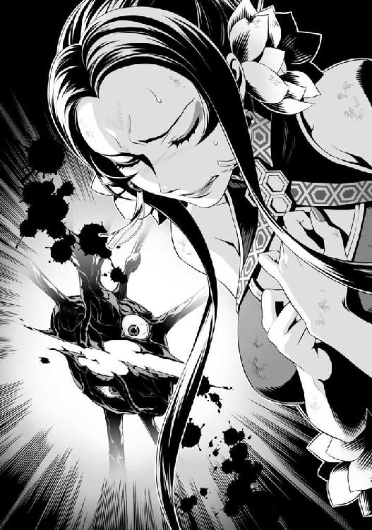
俺はこの世界のために死ぬなんて、死んでも御免だ。
だが、オストの目的は、世界のために死ぬことでもある......。
立派な人物だ。
短い期間だが、一緒に戦ってきて何度も助けられた。
まるで奉仕でもするみたいに俺を優先するその姿に自然と信頼する気持ちが芽生えていた。
......霊亀を倒すことはオストが死ぬということ。だが、オストはそれを望んでいる。
相変わらずこの世界は俺に酷なことを強いるな。
俺は再度霊亀の心臓に目を向ける。
「フィーロ！」
攻撃して着地するフィーロに声を掛ける。
「フィトリアの奴がしくじったのか？」
頭と心臓を同時に破壊することで霊亀は倒せると考えたが違ったか？
「ちゃんと頭を全部潰したって言ってるよ」
「......」
......残念だが、それでも死んでいないと？
もしくは他に心臓とかあるのか......？ そういえばオストはコアがあるとか言っていた。
そっちも一緒に潰さないといけないんじゃないか？
ドスンと音が響く。外側の霊亀の頭は完全に活動停止した......ように受け取れてはいる。
なのにオスト曰く、霊亀を倒せてはいない。
ドクン......ドクン......ドクン！
まるで逆再生をしたかのように霊亀の心臓は元の姿に戻り始める。
「く......一時撤退だ。推測が外れたのだから連合軍をここに連れてきた方がいいな」
「......なんとなくですが、僅かに力の流れを感じました。封印が霊亀を倒す鍵になるかもしれません」
「本当か？」
「......」
オストは確信を持って言っているわけではないようだ。
だが、少しでも効果的な攻撃手段があるのならやってみるしかない。
「わかりました。フィーロ！ 下がりますよ」
「うん！」
「影、お前はさっきの話の通り、あそこで待っていてもらう。頼めるか？」
正直、かなり厳しい戦いになるだろう。
しかし、当然のように影は頷いてこう言った。
「了解でごじゃる！」
「悪いな」
「これが拙者にできる仕事でごじゃる」
こうして俺達は霊亀の心臓を後にして撤退したのだった。
十二話 霊亀の心臓
「ご無事でしたか!?」
俺達が帰ってくるとリーシアと連合軍の連中が出迎えてくれた。
「心臓部を見つけた」
「おお！」
連合軍が歓喜の声を上げる。
問題はあそこにコイツ等を連れていくことなんだけどな。
さっきのように心臓部へ行くのは難しいだろう。
「そっちの被害はどうだ？」
「勇者様が戻ってくるまでに九回ほど魔物の襲撃がありました。多少被害者が出ています」
「連合軍の諸君は俺達についてこい。この先魔物の攻撃は一層激しくなる。覚悟しておいてほしい。勇者だって万能ではない。できる限りを尽くすが自分の身は自分で守ってくれ！」
「「「はっ！」」」
俺の指示に連合軍の連中は声を合わせて頷く。
後は......この思いのほか戦力として期待できない部隊を心臓まで連れていくことに意識を集中しよう。
これからの波でもこの程度の強さの連中を使って戦うと考えると......厳しいな。
どれだけの犠牲が出るか......。
なんて考えながら俺達は連合軍を引き連れて洞窟の奥へと進んでいった。
道中で連合軍の連中には霊亀の心臓も攻撃能力を持ち、様々な攻撃をしてきたことを説明した。
俺が流星盾やエアストシールド、セカンドシールドで守るから、その隙に攻撃するよう伝える。
「さすが盾の勇者様、独自の分析によって私達の犠牲が出ないよう尽力を為さってくださる」
「まあ......な」
守ることは相手の攻撃力を自分が攻撃する時よりも多く見なければいけない。
それを伝えているだけだ。
「ただ、撤退寸前に霊亀の心臓が放った白い塊を放つ攻撃の正体が掴めなかった。気を付けてくれ」
「「「了解！」」」
道中で現れる使い魔はラフタリアやフィーロ、オストにエクレールにババア、そしてリーシアと女王が指揮する連合軍の攻撃で殲滅できた。
肉壁と化している洞窟の壁に連合軍の連中も息を呑む。
そして鼓動が聞こえ出すと全員が慎重に行軍を進めた。
赤い筋と青い筋の開閉は連合軍の分断にもなりかねないものであったが、ラフタリアとフィーロが前と後ろで襲ってくる使い魔の対処をしたお陰でどうにかいける。
問題は突然現れる寄生虫か。あれは肉壁を破って出現するから対応が遅れた。
犠牲者も出ているし、連合軍の連中にも精神的な疲労の色が濃くなってきている。
免疫系の使い魔は捕まると悲惨だ......取り込まれて人間が目の前で溶けるのを目撃した。
精神の弱い者はその場で吐くほどだ。
「立ち止まるな！ ここで止まった者は餌食にされるぞ！ 散った奴等もそれを望まない」
俺が守り、ラフタリアやフィーロが先頭に立って殲滅していく。
そして最後の関門である仕掛けには事前に影を待機させていた。
「おーい」
俺が声を掛けると扉が開く。
「大丈夫だったか？」
「無事でなかったらここは開かないでごじゃるよ」
「そうだな」
隠れるのは上手いし、問題はなかったようだ。
「よし、この先は霊亀の心臓だ。連合軍の諸君、封印は頼んだぞ」
「はい。ですが霊亀の心臓を弱めなければ始まりません」
......そうだよな。
まあ攻撃力はラフタリアとフィーロ、そしてみんながいるから問題はないだろう。
それにリーシアや連合軍も含め大人数で攻撃すれば効果はあるはずだ。
「他にも儀式に入ったら発動までしばらくの時間が掛かります」
「それまでは時間稼ぎか」
またこれか。しょうがないな......。
「事前に唱える準備ができないのか？」
「はい......射程範囲がありまして、儀式に入ると動けません」
やるしかないか。
こういう時こそ盾の防御力が役に立つのも事実だ。
「じゃあ儀式の準備をする奴は俺が守る。他の奴等は出てくる使い魔を殲滅、ラフタリアとフィーロは心臓を弱らせろ」
「わかりました！」
「はーい！」
「了解！」
リーシアが着ぐるみから顔を覗かせて尋ねてくる。
「私は何をすればいいですか？」
「お前は......」
やらせる仕事が微妙なラインなんだよな。
連合軍の連中よりは頼りになるが、ラフタリア達に比べて不安だ。
動きは速くなっていて、本人も体が軽いと喜んでいるが......前に出させると何をするかわからない怖さがある。
「リーシアは後方で援護を頼む。前には出るな。お前の仕事は何か不測の事態が起こった時に俺に報告することだ」
「は、はい......」
今はこれくらいしかすることはない。
途中、青い砂時計で全員息を呑んだ。やはりなんとなく威圧感がある。
あれ？ 砂が僅かばかり減った気がする。
いや、気のせいだな。若干揺れているから砂が崩れて少なく見えているのだろう。
さあ、決戦に挑もう。
「これが......霊亀の心臓......」
連合軍の誰かがポツリと漏らす。
確かに禍々しい。
霊亀の心臓は俺達を見つけるなり、雄叫びのような音を立てる。
目を大きく見開いて、鼓動を強める。さっきのことを覚えているんだな。
ああ、今回は撤退せず、お前を倒させてもらう。
「行くぞ！」
「「「おお─────！」」」
掛け声と共に連合軍の魔法部隊が儀式の準備を始め、魔法を唱え始める。
続いてラフタリアとフィーロが前に出て霊亀の心臓へ攻撃を開始した。
そして他の連合軍は各々の武器で現れる使い魔達を切り伏せていく。
俺は魔法部隊に向かってくる使い魔の行動をヘイトリアクションやエアストシールドとセカンドシールドで妨害し、チェンジシールドも使って状態異常を付与する。
ＳＰが結構減るけど、ソウルイーターシールドのソウルイートでどうにか誤魔化している。ＳＰ回復（小）も僅かばかりだけど役に立つ。
ここぞとばかりに霊亀の心臓が熱線を放つ。勇魚の魔法核の盾の出番だ。
「ナオフミ様！ 使い魔が多いです！」
「うん！ キリがないよ」
先ほどの戦いは一撃離脱だったので、戦闘時間は短かった。
なので増援の数が測りきれていなかったんだが......。
壁から地面から天井から、と次々と霊亀の使い魔が心臓のある部屋に押し寄せてくる。
心臓も黙っているはずもなく、使い魔ごと熱線で射抜いてきやがるし、守っている方は大変だ。
霊亀の心臓が封印の魔法を唱える魔法部隊を睨みつける。
なんだ？ まだ何かを放つつもりか？
霊亀の心臓の瞳から魔法陣が展開される。
あの超重力の魔法か!?
魔法陣が高速で回り出す。
違う！
俺は魔法部隊の前に立って盾を構える。
直後、心臓の瞳から高出力の熱線が放たれた。
「うわ！」
延長線上に立っていた者が数名、巻き込まれて跡形もなく消し飛ぶ。そしてその熱線は俺が展開していた盾にぶち当たって、俺を数歩後ろに下がらせた。
「く......」
極太のビームみたいなやつだ。ゲームとかの必殺技にありそうだな。
今までで一番威力が高い。
それでも火力は電撃よりも低いが、当たりどころが悪かったら痛いじゃ済まなかっただろう。
さっきの擬態と同じパターンで永続的に撃たれると面倒臭い。
「でりゃあ！」
盾の角度を変えて、上方へと熱線を逸らす。
逸らされた熱線は霊亀の心臓の部屋の天井を焼き焦がした。
天井から鮮血が滴る。
ここが敵の身体であることを利用しない手はない。
ま、それもしばらくしたら再生して何事もなかったかのようになるんだろうがな。
「ナオフミ様！」
「だいじょうぶ？」
「ああ、問題ない」
やはり外の方が強力だ。心臓の攻撃は耐えられないほどではない。
「それよりも封印の魔法はまだか？」
「もう少々お待ちを！」
「よし、戦える連中は大技で奴を弱らせろ。倒すのが目的じゃない。時間の掛からないのでいい」
「はい！」
「はーい！」
俺の指示に従い、各々の必殺技を放つ。
「陰陽剣！」
「ぷちくいっくー！」
霊亀の心臓が天井への攻撃と自身へのダメージで悶えるように震え出す。
まだか？
弱めるといっても、生命力の源みたいな化け物をどうやって弱めるんだ？
一応、攻撃を集中させているが......どうも嫌な予感がする。
「これで──」
「どうだ！」
ラフタリアとフィーロが力を込めて霊亀の心臓に繋がっている管を数本、切断する。
「─────!?」
霊亀の心臓の動きが目に見えて悪くなった。
これで封印魔法の詠唱完了まで時間を稼げるはずだ。
「完成しました！」
「よし！ 行け！」
「はい！」
『『『力の根源たる我等が命ずる。真理を今一度読み解き、厄災の四霊、霊亀を停める楔を今ここに！』』』
っ!?
霊亀の心臓が怪しい動きをし始める。
白い塊が霊亀の心臓を循環し、四方に飛び散る！
「高等集団儀式──!?」
四散した白い塊はその場にいた連合軍をはじめ、俺達に向かって飛んでくる。
流星盾、シールドプリズン、エアストシールド、セカンドシールドを展開させ、できる限り魔法部隊を守る。
「うわ！」
「キャ──」
「ぐ......」
しかし、全てを防ぎきることはできず、攻撃の一部が後方に流れてしまった。
盾を前に構え、振り返る。
くっ......予想以上に被害が多い。
「だ、大丈夫か!?」
「すみません、失敗しました......！」
魔法部隊の指揮を担っていた者が告げた。
「まだだ！ 状況を報告しろ！」
「あの攻撃を受けた者達が倒れております。現在、状況確認中！」
前線の方はどうなっている？
心臓の方で戦っていたラフタリアとフィーロに目を向けると、疲労困憊したように肩で息をしながら戦っている。二人は隙をついて戻ってきたが顔が青い。
「だ、大丈夫か!?」
「ラフタリア！ 何があった？」
エクレールがラフタリアに肩を貸して、俺の方へ急いで戻ってきた。
フィーロの方はまだ大丈夫みたいだな。
ババアは器用に避けたようだが......。
「は、はい......ですが......魔力が......」
「うん......あのね......魔力が取られちゃったの」
くっ......厄介な。頭の方の雷と同じでドレインの効果があるのか。
後方から状況報告が来る。
「魔力枯渇で死亡した者多数！」
「戦線は維持不可能か？」
「いえ......盾の勇者様のお陰でまだ辛うじて封印の魔法が使えます」
「そうか」
ドレイン無効がこんなところでも役に立っているんだな。
被害は大きいが作戦遂行に支障がないなら引くわけにはいかない。
「つらいだろうが、急いで唱えてくれ！」
「りょ、了解！」
このパターンだと......。
霊亀の心臓が高出力の熱線を出す動作に入った。
俺は駆け出して熱線の軌道を変えるように盾を構える。
「─────！」
「ぐう......」
先ほどよりも威力が高い！
勇魚の魔法核の盾のお陰で堪えきれなくはないが、今までで一番きつい攻撃だ。
チリチリと肌を焼かれるようなイヤな感覚がしてくる。
どうやら放出された白い塊が霊亀の心臓に戻り、熱線の威力を高めているようだ。
盾が熱線の熱に耐えきれず俺にダメージが入る。
「ぐうううう......」
上に向けるのが最善だが、威力の関係で難しい。
大風の中で傘を広げるような不安定さを盾を通じて感じる。
下手に変な方向に熱線の向きを変えられたら被害が出るぞ！
「むー......フィーロからとった力でごしゅじんさまを傷つけないで！」
フィーロが魔力を吸引する構えを取る。
「みんな絶対にフィーロに魔物を近寄らせないで！」
「は、はい！」
「承知した！」
「わ、わかりました！」
ラフタリアとエクレール、リーシアとババアがフィーロを守るように陣形を組んで、霊亀の使い魔を遠ざける。
「すうぅううううううう......」
フィーロが長い深呼吸をする。
辺りに風が循環するのを肌で感じた。
心臓に戻ろうとした白い塊がまるで吸い込まれるかのように俺の後方へ飛んでいく。
いや、正確にはフィーロに吸い込まれているんだ。
白い塊は辺りの魔力を吸い込むフィーロに引きよせられて心臓に戻ることができない。
やがて熱線の出力が弱まった。
「おお、さすがは聖人様の魔物ですじゃ。裏変幻無双流を体得しておられるとは！」
感心している場合か！
「ババア！ お前もできるならやれ！」
「わかりましたのじゃ！」
ババアもフィーロに合わせて呼吸をし始める。
ん？ ババアの肌が見る見るみずみずしくなっていくように見える。
心なしか若返っていないか？
「よくやったぞ、フィーロ！ ババア！」
振り返ると、膨れ上がったフィーロが俺に手を振っていた。
......あの白い塊を吸ったせいか？
「......お返し」
フィーロが口を開いて心臓に向けて何かを吐き出す。
凝縮された風の玉だったのだと思う。
視認できるほどの真空の玉は心臓に向かって飛んでいく。
「変幻無双流奥義！ 満月ですじゃ！」
ババアが大きく腕を回した後、格闘ゲームとかで飛び道具を放つ有名なモーションで魔法の玉を作り出して放った。
具体的には下、右下、右、パンチで出るアレだ。
「─────!!」
霊亀の心臓は魔法防御の結界を展開し、フィーロとババアの反撃に対して守りの姿勢を取った。
使い魔も心臓を守るように真空の玉に向かって飛び込んでいく。
だが、真空の玉は使い魔を木っ端微塵にして心臓に向かっていく。
そして大きな音を立てて心臓が張った魔法結界にぶつかる。
拮抗した力のぶつかり合いで時間が稼げている。封印するなら今だ。
「よし！ 今だ！」
「「「は！」」」
『『『力の根源たる我等が命ずる。真理を今一度読み解き、厄災の四霊、霊亀を停める楔を今ここに！』』』
霊亀の心臓を取り囲むように巨大な魔法陣が展開された。
心臓はフィーロとババアの攻撃を耐えるのに意識を集中していたせいで、追加攻撃に目を白黒させていやがる。
「高等集団儀式魔法『封』！」
幾重にも重なった魔法陣が、やっとのことでフィーロの反撃を相殺した霊亀の心臓を縛り付ける。
「─────!?」
ドクン......ドクン......ド......クン......ド......。
霊亀の心臓の鼓動が弱まり、やがて完全に停止した。
「よし！」
歓声が沸き立つ。
「やった！」
ふう......だが、あまりにも呆気ない。
後方にいるオストも同じ考えのようで、さらに女王も不安を隠せずにいる。
だが、これで時間を稼げるのならコアを探すことに専念できるだろう。
「お姉ちゃん達にも返すね」
「へ？ いや、フィーロ、それを私にねじ込まないで！」
フィーロが体からぬるっと取り出した白い塊（霊属性？）をラフタリアにねじ込んだ。
青かったラフタリアの顔色がみるみる良くなっていくけど、ラフタリア自身は服の中に虫が入ったみたいに嫌がっている。
次のターゲットはエクレールのようだ。
「い、いや！ 私は魔力を奪われておらん。奪われた者に返せ！」
抵抗するエクレールだが、フィーロは話を聞いていないのかねじ込まれた。
すぽんと白い塊を投げ捨てて、ラフタリアはフィーロを怒って追いかけっこを始める。
「こら、フィーロ！ 絶対に許しませんからね」
「そうだ！ 成敗してくれる！」
「あははー」
ふう......どうにか封印することができたのか？
オストの話では封印自体は破られたわけじゃなかったし、効果があったとみていい......のか？
「これで一時凌ぎはできたか？」
「難しいところですね」
女王が扇で口元を隠しながら呟く。
そうだな。何よりオスト本人の表情が険しい。
「フィーロ、フィトリアの方は何か言ってないか？」
「えっとねー......外の動きが止まってるみたいだよ」
一応は......成功したのか？
と思ったのも束の間。
「──ごしゅじんさま!?」
追いかけられていたフィーロが表情を変えて俺に告げる。
ドクン！ ドクン！
霊亀の心臓の鼓動が再開した。
バキンと音を立てて封印の魔法陣が砕かれ、霊亀の心臓は目を大きく見開いて熱線を放つ。
俺は先頭に立って熱線を受け止めた。
「往生際の悪い！」
「うん！」
「失敗か？」
「いえ......術式は成功したはず......なのにその呪縛を解いて動き出しました」
くそっ！
手段がもうない。頭と心臓は同時破壊しても再生する。封印はできない。
......いや、他にもあるはずだ。諦めるな。
考えろ......まだ何が足りない？
判断材料から出る答えは全て出したはずだ。
それでもまだ足りないというのならコアがある場所を見つけて直接乗り込むしかない。
「オスト！ コアのある位置は本当にわからないのか？」
「......先ほど、心臓に封印魔法を掛けたお陰で僅かに情報が流れてきました」
「何!? どこだ！」
「この心臓の......下にもう一つ部屋があります。そこが、コアのある場所です」
心臓の下って......。
「じゃあこの熱線を利用してぶち抜くか？」
「無理です。生半可の方法ではコアの間に行くことはできません」
「じゃあどうしろっていうんだ」
オストはゆっくりと決意に満ちた目で心臓を指差した。
「盾の勇者様と仲間......そして連合軍の皆さん。一つ提案があります」
「早く言え！」
耐えている方の身になれっての！
大きな傷は受けないが、耐えるのだって大変なんだぞ！
「頭と心臓を同時破壊し......封印の魔法を心臓部に施してください。そうすれば、コアまでの道を私が開けると思いますので」
「本当か？」
「はい。間違いありません」
少々不安だが、やることは一つみたいだな。
「よし、じゃあフィーロ！ フィトリアと連携を取って頭と心臓の同時破壊を狙うぞ！ ラフタリアもだ！」
「うん！」
「はい！」
後はエクレール、リーシア、ババア。
「エクレールとリーシアと近接戦闘が得意な奴は心臓を守ろうとする使い魔の迎撃、ババアは魔力を奪う攻撃が来たら妨害をしろ」
「了解した！」
「がんばります！」
「聖人様の期待に添えるようやりますのじゃ！」
そして......これが重要であり、一番不安な問題。
「女王と連合軍は再度封印の魔法を展開して、タイミングを合わせて発動させろ」
「イワタニ様の命ずるままに......」
全員、疲労の色が濃い。
俺だって休みたい。なにせ今日は戦いっぱなしだ。精神だって限界が来る。
だが、ここで引き下がっちゃいけないし、まだ先に戦いが控えているんだ。
やらねばならない。
ラフタリアとフィーロが必殺技の構えをしてタイミングを合わせる。
熱線を受け続けながらも、俺は呼吸を整えてから後方を確認した。
使い魔共が群がり、エクレールとリーシアが撃退している。
心臓が白い塊を解き放って、それをババアが誘導して妨害。
連合軍は女王の指揮のまま術式を組み立てる。
ドクンドクンと霊亀の心臓の鼓動がとても耳触りで不快だ。
意識を集中していたフィーロがカッと目を見開いて声を上げる。
「ラフタリアお姉ちゃん！」
「わかりました！」
剣に魔力を込めたラフタリアがフィーロの背に乗って駆け出す。
「ぶっつけ本番ですが、フィーロとの合わせ技......八極陣天命......突！」
「すぱいらる・すとらいく！」
翼を広げて突撃するフィーロの背に乗ったままラフタリアが剣を前に突き出してフィーロと一緒に霊亀の心臓を貫く。
強化された俺でさえも一瞬見えないほどの速さで穿った攻撃だった。
スタッと着地したフィーロ。そして、背中に乗っていたラフタリアが剣に付いた血糊を払って振り返る。
心臓にぶつかり、解き放たれた魔力が爆発して霊亀の心臓がはじけ飛び、残った魔力が雪のように辺りに降り積もる。
これだけで驚異的な光景だが、まだこれで霊亀は死んだわけではない。
心臓が弾けたと同時に女王を筆頭とした連合軍が封印の魔法を唱えた。
『『『力の根源たる我等が命ずる。真理を今一度読み解き、厄災の四霊、霊亀を停める楔を今ここに！』』』
「高等集団儀式魔法『封』！」
心臓のあった......高速で再生しようとしてるところに魔法陣が展開され、再生がゆっくりとなる。
「オスト！」
『我、オスト＝ホウライが天に命じ、地に命じ、理を切除し、繋げ、膿みを吐き出させよう。我よ、我が最深部への道を開け！』
両手を霊亀の心臓の前にかざしたオストに呼応するように......霊亀の心臓の目の前に四角い穴が出現する。そしてボコボコと音を立てて階段が出現した。
「これで......コアへの道が開かれました」
「そうか！ じゃあ行くぞ！」
「待ってください！」
オストがコアへの階段の前に立ちはだかる。
「なんだ？」
「この先には霊亀を乗っ取った者がいます。その者を相手に生半可な実力程度の者では足手まといにしかなりません」
「......気持ちはわかるが、ここで引き返せとでも？」
「いいえ。ですが盾の勇者様......ここから先は未熟な者達に気を回す余裕はないと私は判断します。どうか耳を傾けてください」
それは、俺に初めて頼み込んできた時と同じ目だった。
心の底から自分を止めてほしい。そのためには連合軍を連れていくと勝てる戦いも勝てないと告げているような......そんな目だ。
考えてみればこんな化け物を操っている奴だ。
そいつを今から倒しに行く時に、使い魔程度に苦戦する連合軍を連れていって何になる？
「......わかった」
「盾の勇者様!?」
連合軍の連中が驚きの声を上げる。
「軍の連中は敵のいない場所まで下がって待機、護衛は......」
主戦力であるラフタリアとフィーロは外せない。オストは絶対についてくるだろう。
となるとエクレール、リーシア、ババアを連合軍の守りにさせるか？
「イワタニ様、全て私にお任せを」
女王が一歩前に出て宣言する。
「イワタニ様一行は......一秒でも早く霊亀の活動を止めることを優先してください。それ以外のことに人員を割く必要などありません」
「......わかった」
正直に言えばリーシア辺りは留守番をさせたい。だが、フィーロ着ぐるみのお陰である程度動きは良いし、変幻無双流を多少は習得したお陰で良い一撃をしてくれることもある。
ふむ、人員を割きすぎるのは危険だな。
「じゃあみんな！ 手分けして行くぞ！」
「はい！」
心臓が徐々に再生していく中、俺達は二手に分かれて進んだ。
十三話 黒幕
暗く長い肉壁で作られた階段を降り始めて一〇分ほど経っただろうか。
やがて階段が終わり、少し進んだ先に光が見えてきた。
何だろうか？ 盾が脈動するような、おかしな感覚がある。
オストの方に目を向けると、静かに......何かを決意したような表情でまっすぐ光の方を見つめていた。
この先にいる首謀者を倒してコアを破壊しない限り霊亀は活動を終えない。
そして霊亀が死ぬ時、オストは......きっと死ぬのだろう。
ここにいる者達はそれをなんとなく察していて、全員黙りこんでいる。
俺は自らの頬を叩いて意識を奮い立たせる。
今はやるべきことを優先するだけだ。
「みんな！ 何があっても気を強く持つんだぞ！」
「はい！」
「はーい！ フィーロがんばる！」
「ふぇえ......絶対に、生きて帰ります！」
「そうだ！ 今こそ修練で磨いた力を振るう時！」
「ですじゃ！」
そして一歩前に踏み出したオストが頷く。
「私を止める時！ 盾の勇者様と皆さん！ 行きましょう！」
「おう！」
俺の号令と共に全員が駆け出した。
そしてコアのある間へ辿り着き、視界が開ける。
思いのほか広い部屋のようだ。壁は生物のような......固形物のような......不思議な素材でできているように感じる。大理石の壁が脈打っているような、そんな不思議な感じだ。
それから......部屋の中を確認して、俺は絶句してしまう。
「な──」
まず目に入ったのは宙に浮かぶ霊亀のコア──と思しき物体だ。
部屋の中心で緑色に妖しく光る水晶がゆっくりと回っている。
これが霊亀のコア......この光はこれまで霊亀が集めてきた犠牲者達の魂の色なんだろうか？
......だが、俺の意識はコアの後ろの方へ向かう。
そこには......行方不明になっていた三人の四聖勇者が、水晶のような透明な物体に閉じ込められて壁に埋め込まれていたのだ。
「うう......」
「く......」
「ぐ......」
三人の勇者はそれぞれ意識がないのか苦悶に満ちた表情でうめき声を上げている。
「これは一体......」
「イツキ様！」
リーシアが樹に駆け寄ろうとして、突然舞い降りた何かに弾かれる。
「きゃう！」
これは......一枚の紙か？
紙がバチバチとスパークしてリーシアを弾き飛ばしたように見える。
「まさかこんな所まで来るとはね......考えられないわけではなかったけど、よくがんばるな！」
この声......前に三勇者を捜していた時に聞いたような気がする。
声の方角、緑色の多角面体の前に一人の男が立っていた。
背は俺とほぼ同じくらいか。
髪は白髪か？ 僅かに光沢があるから銀かもしれない。
髪型はボサボサのロングで肌の色は白い。顔の作り自体はかなり良い方だとは思う。
だが、俺は初対面の印象で友達にはしたくないと思った。
その理由として死んだ魚のような腐った......淀んだ目だったからだ。
一言で表現するなら根暗で陰湿っぽい雰囲気を持っている。
間違いなく、悪い意味で人の輪に入れないタイプの人間だろう。
自分の事しか考えず、自分の知る話題が出るとベラベラしゃべり、知らない話題だと沈黙するような......それでいて自分は頭が良い、他の奴とは違うとか考えているタイプ。
基本自慢しかしないタイプは得てしてこういう顔というか目付きをしている。
服装はコートを羽織った研究者のような格好というのだろうか？
胸元辺りに試験管を弾帯のように巻きつけていて......なんと表現していいのかわからないが、錬金術師のような服装とでもいうのがしっくりくるのだろうか？
いや、俺も錬金術師がどんな格好をしているのかと聞かれたらアニメとかで見たイメージしか浮かばないけどさ。
革のグローブとか靴とか、格好だけは無駄に気を遣っている印象がある。
薬学はこの世界で学んだけど錬金術はまだ知らない。
そういう学問があることくらいは道具屋から聞いている。
だけど......なんだろうか。目の前の奴は本格的な感じだ。
だが、それ以上に目付きの悪さと奴が片手に持つ本が気になった。
表紙には見覚えのある水晶が嵌っていて......なんともイヤな感じがヒシヒシと伝わってくる。
「最初に霊亀の頭を切り飛ばされた時はこっちもヒヤッとしたが、ここまでの道に気付かずに立ち去るんだもんな。笑っちまったぜ。間抜けな盾の勇者」
「......」
皮肉を俺に向けて言っているのだろうが、俺は静かに睨みつける。
話なんてしたことはないが、どう考えてもまともな人間ではないだろうな。
「ようこそ、霊亀の最深部へ。感想をどうぞ？」
「イツキ様ぁ！」
跳ね飛ばされたリーシアが立ち上がって樹に声を掛ける。
「ああ、そいつら？ いやぁ、さすがに四聖勇者が乗り込んでくると思って警戒したんだけどさ、すげぇ弱くって呆れたぜ。お前等の世界の勇者ってこんなんばっか？」
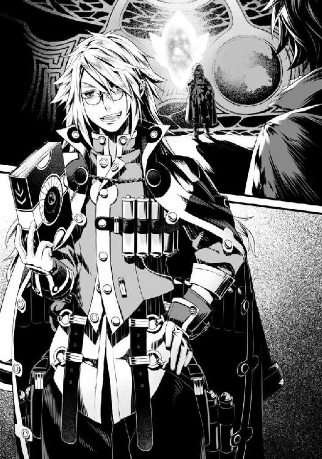
「......どうしてコイツ等がここにいるんだ？」
「あ？ わからねえのか？」
俺は勇者共に目を向ける。
それぞれの武器が僅かに淡い光を放ち、何かに抵抗しているかのように見える。
いや......これは──
「力を奪っているのか」
「ご名答！ さすがは馬鹿でも一番強い盾の勇者様だなぁ！ ギャハハハ！」
下品に笑う敵に俺は不快感を示す。
まあ、コイツからしたら一度は止めた霊亀をむざむざ見逃して被害を拡大させた無知な奴となるのだろう。
知らねえよ。俺はこの世界に詳しくもないし、正しい倒し方なんて知らないんだから。
しかも守ることしかできない盾の勇者だぞ？
「コイツ等を捕まえる時の出来事なんて笑い草だぜ？ 剣の勇者は仲間が死んでんのにずっと攻撃し続けてんの！ イノシシみたいにさ！ で、槍の勇者は仲間に援護を頼んだ直後に逃げられてやんの！ そのまま追いかけたらアッサリ捕まえられたぜ。最後の弓の勇者なんて仲間と仲違いしたみたいで、縛られた挙句逃げられたんだぜ！」
ゲラゲラと笑う敵......なるほど、勇者共の消息がまったく掴めなかったのは霊亀に負けた後、捕まっていたからだったのか。
道理で行方知れずになっていたわけだ。
しかも霊亀がパワーアップした理由も頷ける。
四聖勇者三人の武器の力を吸収して強くなったんだろう。
何だかんだで勇者の武器には凄い力が眠っている。
その三人分の力を吸収した霊亀の攻撃を正面から受け止めることができる盾だって、勇者の武器なんだからな。
「こんなことをして......お前の目的はなんだ！」
エクレールが一歩踏み出して怒鳴る。
そうだ。確かにこんな真似をする理由が想像できない。
霊亀の暴走は本来、世界のためだろう。
それが人にとって害があるだけで結果的には世界は救われる......らしいのだ。
にもかかわらず、コイツは霊亀を操っていたずらに被害者を増大させている。
「あ？ そんなの滅びる世界の住人であるお前等には関係ないだろ？」
「答えるつもりはないと？」
俺が尋ねると敵はヘラヘラ笑いながら頷く。
関係ないって......これだけ迷惑を掛けておいて関係ないってどういう理屈だよコラ！
だが、ここで怒りに身を任せても何も進展はしない。
滅びる世界の住人という、まるで他人事のような言い回しが妙に引っかかる。
「ただ、さすがに驚いたぜ。いつまでも霊亀を相手に足止めをして、何を狙っているのかと思ったらあんな化け物を連れてくるなんてよ」
部屋の壁に霊亀の視線で外の様子が映し出される。
そこにはフィトリアが無数の頭相手に善戦している姿があった。
頭一つでも今の俺にはつらいってのに、本当にフィトリアは強いな。
敵の言葉通り、化け物という表現が一番しっくり来る。
味方でよかったな。
だが、その化け物のフィトリアも疲労の色が濃くなっているように感じる。
あっちはあっちで頑張ってくれているんだ。こっちもやることをやるしかないな。
「コイツのせいでエネルギーが集まんねえんだよ！ まったく煩わしいったらありゃしねえ！」
不快そうにそう吐き捨てた敵は本のページを広げて俺を睨む。
「いい機会だから一番強い......四聖勇者を取り込めればこの状況も突破できるかもしれないと泳がせていたんだよ。よくここまで来られましたねーいいこいいこーギャハハハハハ！」
一人でゲラゲラ笑って気持ち悪い男だな。
コイツ、人格壊れてんじゃねえか？
なんていうか、独り善がりって言葉が似合うな。
「そんな真似はさせません」
オストが言い放つ。
「ああ、お前は......へぇ。そんな真似ができるのか、この世界の守護獣は......だからここまでとんとん拍子に来れたわけだ。抵抗ばかりしやがって、素直に従っていればいいものを」
「本来の役割を全うできない守護獣に存在価値はありません！ ですから私は盾の聖武器の所持者に協力を仰ぎました。それは霊亀と盾の精霊との因縁！」
「ああ、だから盾の勇者には使い魔共の攻撃の効きが悪いのか......どうりで硬すぎると思ったぜ」
なんの話をしているんだ？
霊亀と盾に何の関わりがあるんだ？
確かに両方とも防御力が高そうなイメージがあるけどさ。
「ま、もう少し弱らせてから招待するつもりだったが、しょうがねえ。美人な仲間も連れているみたいだし、洗脳でもして土産にでもするから安心して......」
パラパラと本のページが辺りに舞って、俺に向かって飛んできた。
「死ね！」
俺は流星盾を展開させて防御をする。
しかし相手の攻撃力は予想より高いのか、流星盾は即座に破壊される。
「はぁ！」
「てい！」
ラフタリアとフィーロが反応して宙を舞うページを迎撃する。
部屋はそれなりの広さがあるが、フィーロは相手に合わせて人型に変化する。
だが、火花が散るだけで完全に威力を殺しきれない。
それでも俺への威力を軽減することに貢献しているのか、全くダメージは受けずにいる。
「は！」
「あちょー！」
エクレールが剣を突き出してページを叩き落とそうとし、ババアは回し蹴りを放つ。
リーシアはエクレールとババアが往なしきれなかったページに追加攻撃をして威力をできるだけ殺しているようだった。
「盾の勇者様！」
オストは魔法の詠唱に入る。
「おうおう。勇者を守るために必死だなぁおい！ 守られて恥ずかしくないのか？」
挑発してくる敵に俺は怒りを覚えるが、無意味に前に出て何になる。
イヤな戦略だから挑発しているんだと思えばいい。
「お前に盾の勇者の攻撃を見せてやる」
どうも防御しかできないとか馬鹿にする奴が多いが、ダメージを負わせることだけが攻撃じゃないってことを教えてやる。
「ラフタリア、フィーロ！ 俺の事は気にせず奴に攻撃を仕掛けろ！」
「はい！」
「わかったー！」
これは過去にラルクに行った卑劣な手段だ。
「エアストシールド！ セカンドシールド！」
敵の背後に盾を出現させ、その直後に腹部に合わせて盾を出す。
すると相手は前にも後ろにも動けず、隙ができる。
「おっと......チィ！」
俺の攻撃のイヤらしさを悟ったのか不快そうな表情を浮かべて、ラフタリアとフィーロの攻撃をページを使って受け止めている。
だが、そのやり方でどれだけ持ちこたえられるものかな？
正直に言えば便利な攻撃手段だ。
周りを飛び回るページが変幻自在に攻撃と防御を兼ね備える。
だが、さすがにラフタリアとフィーロの攻撃を受けて無傷とはいくはずはないだろう。
「はぁ！」
「てぇい！」
エアストシールドを余ったページが攻撃し、ガツンと音を立てて破壊する。
「残念。ドリットシールド！」
その場で三枚目の盾を出現させて行動を阻害する。
左右からラフタリアとフィーロの攻撃、盾自体の破壊は予備の盾で補う。
そして上に跳躍して避けようとするならシールドプリズンで妨害する。
いやぁ......自分で言うのもアレだが、イヤらしいことこの上ない。
でも、これが俺には合っている気がする。
妨害が合うとか......やっぱり性格悪いな、俺。
直すつもりはないが。
「ふん！ お前の出せる盾の数は知っている！ 三枚しか出せねえなんてダッセ！」
あと少しでラフタリア達の攻撃が届くな。
だが、それよりも前に敵は俺の妨害防御に真っ向から挑むつもりみたいだ。
俺のプライドを破壊するために。
大方霊亀に挑んでいた俺を、霊亀の視界や使い魔の視界を操って見ていたというところだろう。なら、霊亀に挑んでから使っていないスキルを見せてやろうじゃないか。
「チェンジシールド！」
ついでにチェンジシールドを掛ける。
今回は勇魚の魔法核の盾に変化させる。
カウンター効果は熱線の盾（中）。
敵のページが攻撃したところから、熱線が本人にターゲットして放たれる。
......ゼロ距離でな！
お？ どうやら遠距離攻撃でも熱線の盾（中）は作動するみたいだな。便利なことで。
ガツンと音がして熱線が敵に命中した。
「チィ!!」
敵が舌打ちして俺を思い切り睨みつける。
と、同時にページが切り裂かれてラフタリアとフィーロの攻撃が命中した。
が、バキッと音を立てて、透明な膜のようなモノに遮られる。
「まさか早々にこの防壁を使うことになるとは」
「アレは──」
オストが魔法の詠唱を中断して呟く。
「さっきから支配権を取り戻そうとしてるんじゃねえよ！ 文式一章・火の鳥！」
本のページが集まり、炎の鳥を形作ってオストに向かって飛んでいく。
「危ない！」
咄嗟に俺はオストの前に立ちはだかり、火の鳥を受け止める。
ぐ......かなり威力が高いみたいだな。
水属性の勇魚の魔法核の盾でも僅かにダメージが入る。
コイツ......霊亀事件の黒幕ってだけはあるな。純粋に強い。
それでもこっちがまだ優勢なのは変わらないようだ。
だが、ラフタリアとフィーロの攻撃が跳ね返されたあの結界はなんだ？
オストに視線を向けると、オストはチラッと一瞬だけ視線を外す。
どこを見ているのかと思って振り返る。
敵......かと思ったが違う。
なるほど、オストの目的はあくまでそれなのか。
「アイツは......霊亀のエネルギーを防御膜の生成に使っています。貫くには相当の攻撃力が必要かと」
「よし、じゃあラフタリアとフィーロ──」
「おっと！ させると思ってんのか？ 馬鹿の一つ覚えみたいに、同じ技をバカスカ使いやがって！」
敵が手を前にかざすと霊亀のコアが輝き、壁に押さえつけられている勇者共が揃って苦悶の声を上げる。
すると壁から全身鎧を着た霊亀の使い魔が一〇体現れた。
霊亀の使い魔（親衛型）
うわー......すごく強そうなタイプだな。
鎧の顔の陰になった部分から単眼を光らせてこちらを見つめてくる。
それぞれ色々な武器を所持しているようだ。
剣、槍、弓......うわー誰から力を奪っているのか一目瞭然だ。
使い魔共はガチャガチャと音を立てて、こっちに近づいてくる。
「お前等の技は撃つまでに時間が掛かるだろ？ なら撃つまでの時間を与えなければいいんだよ」
「それくらいの時間──」
「ワシ達が──」
「ふぇえええ！」
エクレール、ババア、リーシアが迎え撃つが、エクレールとリーシアが一匹ずつ、ババアが二匹を相手するので精いっぱいだ。リーシアに至ってはエクレールに迷惑を掛ける寸前、オストの援護があってやっと対処できている。
残りの六匹が俺達の方へ群がってくる。耐えきれるか？
親衛型の攻撃を盾で受け止める。ガツンと強い衝撃を覚えた。
これは......耐えきれなくはないけどダメージが入るくらいの攻撃力を持っていると判断していい。
霊亀の使い魔の精鋭みたいなものだ。
ん？ 背後にいる弓を持った二匹の親衛型が俺に狙いを定め、雷を放った。
やべ！ 咄嗟に盾をソウルイーターシールドに変えて受け止める。
タイミングさえ考えればこの場では勇魚の魔法核の盾の方が上だ......注意して守ればいい。
俺の焦りを悟ったのか敵がへらへらと笑い出した。
「ぎゃはははは！ どこまで耐えきれんだ？ ほらほら、もっと知恵を絞ってみろよ！ 遊んでやっからよ！」
く......多勢に無勢か？
しかもページまで飛ばしてきて、ラフタリアとフィーロの集中を妨害してくる。
こんな状況で一番強い攻撃なんて出せないだろう。かといって生半可な攻撃では意味がない。
Ｌｖ差とかでどうにかできる次元ではなくなってきた。
......対抗できる手段がないわけじゃない。
一つはラースシールドで全てを焼き払う。
ラフタリア達は階段の方へ逃げてもらえばどうにかなるかもしれない。
ただ、俺は霊亀との戦いで既にラースシールドを使っている。だから相手も確実にその可能性を視野に入れてるだろう。凌がれてしまう可能性が高いし、背後には勇者共がいる。
見た感じ弱っているし、巻きこんだら死んでしまうかもしれない。厄介な人質だ。
もしくはブラッドサクリファイスで一撃必殺を狙う。
問題は相手に命中させないといけないことと、一発限りで俺が戦えなくなってしまうことだ。
そうなったら終わりだ。
もう一つはシールドプリズンで守りを固め、流星盾を展開してチャージを行う。
問題は敵の攻撃力が流星盾を簡単に破壊したことだ。
正直に言えば溜めきれるほど時間が稼げるか怪しい。
強大な防御を突破するにはどうすればいい？
オストにラースシールドで溜まった怒りを魔法として放つ攻撃をしてもらうか？
これも溜めるのに多少の時間が掛かる。
だが、現実的な気がする分だけマシか？
ただ、オストはリーシアとエクレールの補佐をするので精いっぱいになっている。
ラフタリアとフィーロに相手をしてもらうと意図を読まれてしまう。
俺がオストに視線を向けようとすると、敵が察したのか笑うのをやめて言い放つ。
「おっと、下手なことをすんじゃねえぞ。お前ら、四聖勇者がどうなってもいいのか？」
「ぐ......こいつら......強い！」
エクレールとババアが押され始めた。
リーシアなんて身を守るので精いっぱいだし......相手は勇者共を人質に取っているようなモノだ。
まともに戦える状況じゃない......か？
やばい、このままじゃジリ貧だ。
このままジリジリやられるくらいならラースシールドに切り替えて......。
そう頭で結論付けた、その時──。
「飛天大車輪！」
光り輝く車輪が俺の目の前を通り過ぎる。
間を置かずに更に光る矢が飛んできた。
「輪舞破ノ型・亀甲割！」
更に追い打ちとばかりに巨大な煌めく火の玉が俺目掛けて飛んできた。
咄嗟に盾を前に突き出したが、炎は俺を焼くことはないようだ。
この炎、前に受けたことがあるぞ？
炎は俺を焼かず親衛型達だけに燃え移って、親衛型が悶えた。
攻撃が来た方角に目を向けると、そこには......。
──ラルクとグラス、そしてテリスが立っていた。
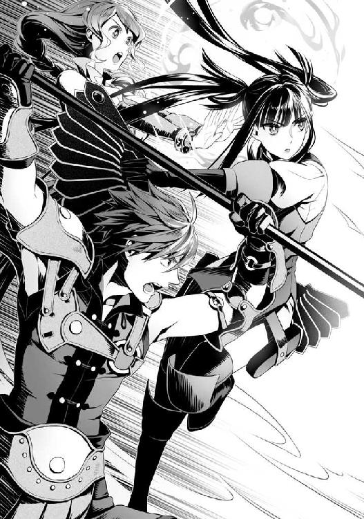
十四話 リベレイション
くそ......こんな厄介な状況なのに敵が増えたぞ!?
まさか挟み撃ちに遭うなんて思いもしなかった！
いや、もしかしたらこのタイミングを狙っていたんじゃないか？
俺達が絶体絶命のピンチに陥るように戦いづらい場所へ誘導させるとか、とんでもなく計画的な行動だ。
考えてみればグラスの擬態やラルクの擬態は、まるでグラス達を守るかのように現れて俺達を攻撃していた。あり得ない話ではない。
「貴方は──」
俺の仲間達が警戒を強める。
くそ......この状況じゃ逃げることすらできないぞ。
ポータルを使用して飛ぶか？
だが......意識を集中させてみても使用不可のアイコンが視界に浮かぶ。
「はぁ！」
ラルクが跳躍して俺の方に飛んでくる。
まずは初手を受け止めてからラフタリアとフィーロに攻撃をさせよう。
そう思って、盾を前に向けた瞬間。
ラルクは......俺に近づいていた親衛型に向かって鎌を振り下ろしたのだった。
「大丈夫か？ 坊主」
「は？」
ゆっくりと、踊るような歩調でグラスがこちらに近づいてくる間にも、テリスが幾重にも炎の玉を作り出しては親衛型に降り注ぐ。
「ラルク......お前、アイツの仲間じゃないのか!?」
ラルク達はあの敵の仲間だと思っていた。
だが、ラルクは敵と相対するように俺の前に立って、敵に鎌を向けている。
「おい......お前はやっていいことと悪いことの区別がついちゃいねえようだな」
「何を言ってんだ？ どうせお前等が滅ぼす世界だろ？ 何したって俺の勝手じゃないか」
「いいや......最終的にそうなるとしても守らなきゃいけないことがある。眷属器が泣いてんぞ」
ラルクの鎌がチリンと音を立てて振動している。
それはグラスの扇も同じようだ。
「眷属器の所持者として、貴方は行ってはならない領域をに踏み入りました。故あって敵対する者であるナオフミと共に......私達は、キョウ＝エスニナ、本の眷属器の所持者を葬りましょう」
バッと扇を広げ、グラスは踊るように俺の前に降り立った。
「え？ い、一体どういう風の吹きまわしだ」
俺達は事態の変化に追いつけずに唖然としていた。
グラス達にとって霊亀を操った敵......キョウが名前か？ コイツは敵なのか？
理由は、やってはならないことをしたから？
「そういうわけだ。坊主、一時休戦といこうや」
「質問に答えろ！」
「だーかーら！ 俺達は一時的に坊主と共闘するって言ってんだよ」
「ラルクは説明が下手なんですよ。ナオフミさん、聞いてください。今、ナオフミさん達が戦っている相手は私達の世界の者であり本の眷属器の所持者......そして私達の眷属器が処罰を命じた......敵なんです」
テリスの言葉に続いてグラスが説明する。
「ゆっくりと説明している暇はなさそうですね。強いて言うのなら......他の世界とはいえ、守護獣を操るなどという蛮行は......してはならないこと、故に非常に不服ですが共闘を願いましょう」
じゃあ......ラルク達と遭遇した時のあの霊亀の使い魔共の動きは、敵が誤解を与えるようにしていたと見ていいのか？
考えてみればラルク達に敵意はなかった。俺達の方に向かった使い魔を攻撃するためにスキルを放っているように見えたのは気のせいじゃなかったのか。
「もう少し時間を稼げるかと思ったが、案外早くここまで来やがったのな」
キョウ......という奴が忌々しそうに告げる。
「ええ、貴方のお陰で色々面倒なことに巻き込まれましたよ。ナオフミと出遭った私達を意図的に分断させたりしたのも、誤解させて交渉の余地をなくすためですね」
「素直に話すと思ってるのか？」
「その返事が肯定だと受け取りましょう」
「くっ......」
悔しそうに声を漏らすキョウ。
あまのじゃくみたいに、質問には答えないとか言うけど、都合の悪い時だけそんなことを言っていたら見透かされるよな。
頭が良いふりした野郎って感じで、気にくわない奴だ。
どうやら本当にグラス達と敵対しているみたいだな。
「いやー坊主と別れた後は大変だったぜ？ 崩落に巻き込まれて変な所に落とされるしよ」
ラルクが愚痴っているが相手をする暇はない。
キョウが悔しげに唇の端を釣りあげて親衛型を大量に発生させる。
その度に三勇者共が苦悶に満ちた声を出し、表情が青ざめていく。
やばいな......もう少しで死ぬんじゃないか？
ラルク達は協力してくれるらしいが、敵の数が加速度的に増えている。
「いくぜ！ って......かてえな！」
大きく鎌を振りかぶったラルクが、親衛型を二匹ガツンと薙ぎ払ったところで呻く。
「何ふざけてんだ。もっとお前等強いだろ」
特にラルクは俺とある程度は接戦になるほどの攻撃力を持っている。
ラフタリアが二匹相手にできる技量があるのに、ラルクが二匹相手に苦戦するなんてありえない。
やはり味方のフリか？
「ああ、坊主は知らねえのか......あれは波が起きている間だけの強さなんだよ。今はＬｖ75の眷属器の所持者でしかねえ」
「なんだと!?」
眷属器は勇者扱いとして......波が来ていない今、ラルク達は波の時よりも弱いということか。
あくまで本人の口から出た言葉だから本当かどうかはわからない。
「そしてグラス嬢ちゃんに至ってはＬｖ換算で40前後程度の強さしかねえぞ？」
「ラルク！ なんでそんなことをここで話すのですか！」
あ、グラスが怒って文句を言ってきた。
ただ、亀甲割という技は効果が高いようで、親衛型を一匹仕留めたようだ。
「それはこっちの世界での日が浅いからだ」
「ラルク！」
「うっせぇな！ 坊主の力を借りなきゃ俺達に勝ち目がねーんだからしょうがねぇだろ！」
「グラスさん！ よそ見をしてはいけません！」
テリスの指示でグラスはハッと振り返って、襲い掛かる親衛型の攻撃を扇で受け止める。
確かに、僅かに押され気味のようだ。
こっちの世界での日が浅い？
この世界にいる時間の事を言っているんだろうな。
つまりラルク達もそこまで強くはないと。
それでも増援として俺達に協力を申し出ている。
これは渡りに船だな。俺はラルクに向けて編隊の勧誘を飛ばす。
「感謝するぜ坊主！ ほら、グラス嬢ちゃんも受け取れよ！」
ラルクが受け取り、即座にグラス、テリスに回してパーティーを結成した。
「ここに来るまでに連合軍の連中とは出会わなかったのか？」
「出会ったぜ？ だけどラフタリアの嬢ちゃんがいないならテリスの魔法で誤魔化せるぜ」
......なるほど、違和感は持たれても、連合軍の振りでもしてあの場にまぎれられてしまったら気付けない。
さりげなく外れて、霊亀の心臓の階段を降りてくればいい。
心臓はとっくに再生しているだろうから女王達も心臓の間にはいないだろうし。
「事情は理解した。流星盾！」
流星盾は即座に破壊されるだろう。だが、破壊される時に、一度は役に立つ。
破壊されようが敵の攻撃を一瞬だけ受け止められることに変わりはない。
小さな隙さえあれば、ここにいる連中なら攻めに回れるはず。
「うらぁ！」
ラルクが強引に鎌を振り回し、硬直した親衛型を薙ぎ払う。
「アチョー！」
ババアが防御比例攻撃をしているのか、親衛型の胸元にショルダータックルをすると親衛型が吹き飛ぶ。
「てい！」
「はあっ！」
ラフタリアが剣で突き、エクレールが続いて仕留める。
「とー！」
フィーロが全体重を掛けて次の親衛型にツメで切り掛かり......と、それぞれ善戦している。
「よし、これなら......ラフタリアとフィーロは──」
俺が出す指示を察知して、二人は一歩下がって力を溜め始めるが......。
「そんな暇やるわけねえだろ！」
バラバラとページが辺りを舞い、キョウが詠唱しながら薬品を投げつけてきた。
ボフンと音がして辺りに緑色の輝きが増す。
鈍く......蟲の羽音のような不快な音が響く。
「拡張文式六章・活性！」
ガチャガチャと親衛型が再生して動きが先ほどよりも素早く、そして重くなる。
「あぶねえ！」
ラルクがグラスを突き飛ばして親衛型の攻撃を受け止める。
「ラルク......」
「く......こいつ、さっきよりも強力になってやがる」
追い打ちとばかりに三匹が同時に寄ってきた。
「エアストシールド！」
ラルク達を守るように盾を展開させる。
「ナオフミ、感謝します」
「サンキュ！ 坊主！」
「礼は後にしろ！」
まだ守らねばならない連中が多い。
エクレール達にセカンドシールド。
後方にいるテリスとオストは......まだ問題はなさそうだ。
と、思ったら敵の後方から弓を持った親衛型が矢を向けている。
避けられないことはないが、念のためにドリットシールドを発生させる。
流星盾のクールタイムが終わるのはまだか？
二人は意識を集中させていて、防御できる状況じゃない。俺が前に出るしかないだろう。
そんな状況の中、ページが飛びまわって狭い霊亀のコア内は乱戦状態に陥っている。
下手な大技は味方を巻きこみかねない。
テリスが味方の区別が付く便利な魔法を放ってくれているが......それも焼け石に水だな。
撤退するのも視野に入れるべきではあるが、三勇者の状態も危険域に達している。
逃げたら色々な意味でやばいな。
「ほらほら、やれるもんならやってみろよ。やれんならな！」
ゲラゲラと笑うキョウを俺は思い切り睨みつける。
多勢に無勢、しかも相手に損耗は少なく、そのエネルギー源は見た感じ霊亀自身と三勇者から供給されている。
阻止するために霊亀のコアを破壊しようにも守りが堅くて手が出せない。
......守りが堅い？
「ラルク！」
俺は振り向いたラルクと目を合わせ、盾を持ち上げて見せてから指差して、次にキョウを見る。
その意図を察したのかラルクは頷いた。
「坊主はホント手段を選ばねえな！ いいぜ！」
俺が駆け出して、ラルクが守っていた場所に収まる。
そしてラルクは一歩下がり、鎌の先を輝かせて俺を足場にして跳躍した。
「でりゃああ！」
幅跳びの要領で距離を稼ぐが、まだコアどころかキョウにすら届かない。
へらへらと笑うキョウはラルクが着地するであろう場所を親衛型で取り囲み、一斉攻撃するよう武器を構えさせる。
「シールドプリズン！」
その瞬間、俺は盾の檻を出現させ、ラルクはそれを足場として鎌で大きくキョウに切りつけた。
バキッと音を立ててキョウを守護していた防壁が砕け散る。
そう、高い防御力があるならラルクの防御比例攻撃が最も効果的に運用できる。
「今だ！」
俺の号令に従って後方で魔法の詠唱をしていた二人が攻撃に転じる。
もちろん、他の連中も手を緩めたりなどしない。
「輝石・爆雷雨！」
『力の根源たる......霊亀が命ずる。森羅万象を今一度読み解き、我が力の発現を求む！』
「重力場！ 超重力！」
前見た時よりも高出力のオストの重力弾がキョウに向かって放たれた。
しかし......詠唱した時の一人称が変わっていた。
もしかしてオストは───
「チィイイ！」
ページが幾重にも重なって、テリスとオストが放った魔法を、俺が盾を多重展開させるように受け止める。
「おらぁ！」
その間にラルクが鎌を一回転させてキョウに切りつけると、キョウは顔を歪めて手を前にかざしバチバチと魔力か何かを放出させて受け止める。
指示する者を守るように親衛型がラルクに詰め寄る。
が、そこでやられるようなラルクじゃない。
引き時を悟ったラルクは大きく距離を取る。
「なかなかやるじゃねえか。防御比例攻撃を隠し持ってるなんてよ」
「何度か壊されてるからな、その防御膜の難点は盾の勇者ならわかるもんだ」
「はっ！ 知ったかぶってんじゃねえよ。じゃあこれはどうなんだ？」
キョウが手をかざすと、何重もの結界が展開されていく。
その様子を見て、ラルクとグラスが絶句した。
「これだけの結界をお前等は壊せるのか？ ああ？」
「ババア」
「ハイですじゃ」
「ラフタリアは攻撃を溜めるのを中断して雑魚の殲滅をしろ。結界の方はババアに任せる」
「なるほど！ フィーロ！ 任せましたよ」
ババアが隊列から抜けて敵に向けて駆け出す。
「無駄なことを」
「アチョー！」
近づいてくる親衛型を足場にしてトントンと身軽に結界に接近するババア。
だが、さすがのババアも避けられない瞬間や足が止まりかねない場面が出てくる。
「エアストシールド！ セカンドシールド！」
ラルクの時と同じく、時に守りに、時に足場になる盾を作り出して、キョウへの血路を切り開く。
そしてラルクも出現する親衛型を薙ぎ払いながら再度キョウに向かって鎌を振りかぶった。
「いけ！」
「アチョー！」
ババアの息もつかせぬ防御比例攻撃が、キョウが展開した防壁を一枚、また一枚と破壊していく。
「な......そんな......こんな真似ができる奴がいるだと！」
「いるに決まってんだろ？ そんなことも考えられなかったのか？」
俺が挑発気味に言い返すと、キョウは親の仇でも見つけたかのように俺を忌々しげに睨みつける。
やっすいプライドだな。この程度でキレるとか。
俺が異世界に来て経験したことを体験したら頭の血管が破裂するんじゃないか？
「アチョー！」
ババアが最後の一枚を破壊した瞬間、ラルクの鎌がキョウに命中する。
「フィーロ！」
「うん！」
かに思えたが宙に舞うページが最後の抵抗とばかりにババアとラルクの攻撃を逸らした。
「文式五章・列破！」
バシンとキョウを中心に衝撃波が巻き起こり、ラルクとババアが吹き飛ばされ、壁に叩きつけられる。
が......タイミングが悪かったな。フィーロの方はチャージを続けていたんだよ。
「すぱいらるすとらいくー」
一筋の矢のようにフィーロが親衛型を貫いてキョウに突撃していった。
バシュッと通り過ぎたあとには......キョウの脇腹に風穴ができていた。
「フィーロの嬢ちゃんやるじゃねえか」
「やったー！」
勝利のポーズをとるフィーロだが、俺は警戒を緩めない。
ぐらりとキョウが倒れるかと思ったが......キョウの腹部の肉がメキメキと音を立てて、何事もなかったかのように再生していく。
「まさか俺を傷つける事をできる奴がいるとは思わなかったぜ」
化け物かよ。
まあ......回復魔法がある異世界なんだから肉が抉れたって死んでなければ再生する可能性くらいあるな。なら次は絶対に死ぬであろう胸か首辺りを攻めるまでだ。
「おもしれえな。俺の意表を衝く天才だわ。だけど俺はお前よりも更に頭が良いからすぐにでも対応できるんだな、これが」
どうもコイツは神経を逆なでするのが得意みたいだな。
下手すりゃ死んでただろ？ その場合は俺達の勝利だったわけだけど。
「ならやってみろ。結果を出してから、能弁を垂れるんだな」
俺が勝者の笑みを浮かべて挑発を返す。
こういう奴は、無視すらも肯定と受け止めてゲラゲラうるさいし、相手をしてやってもかまってちゃんみたいに騒ぐ。
ならば問答をしつつ、隙を見つけて黙らせるに限る。
「だけどいい加減、遊ぶのも飽きてきたぜ。どうせこれ以上エネルギーを溜められそうもないなら、切りあげるのも手か？」
またも上から目線で偉そうに語り出したな。奥の手とやらを潰せば、黙るか？
再度、幾重にも防壁を展開したキョウは霊亀のコアに手をかざす。
すると辺りの空気が振動するのを感じた。
ぐ......なんだこれ？
「う......」
「きゃ！」
「ぐう......」
その場に居た仲間達の殆どが地面に押さえつけられる。
俺でさえも立っているのがやっとの重力......攻撃か？
「流星盾！」
流星盾を展開したが、即座に破壊されてしまう。
「無駄だぜ？ これは攻撃性を持った重力場。霊亀お得意の能力を俺が増幅させたもんだ。この中で動ける奴なんて限られてんだよ」
辺りを見渡すと立っているのは数人。
それは、オスト、グラス、ババア......そして、完全には押さえつけられずに中腰でいるリーシア。
それ以外の連中は地面に押さえつけられて、起き上がることすらできない。
あのラフタリアやフィーロでさえも逃れられないほどの重力内に俺達はいる。
やはりというか親衛型は平然としていて、指示を出しているキョウは干渉を受けていないようだ。
「まだ......です！」
トドメを刺さんと近づいてくる親衛型にグラスが果敢に挑む。
いや、この場で戦える者は仲間を守るために親衛型へと武器を向けていた。
俺もラフタリア達を守るために立っている。
ババアはラルクとフィーロを......オストはテリスとリーシア、エクレールを。
「盾の勇者様！」
オストが魔法を唱えて結界のような空間を生成する。
そこにいたテリスとリーシア、エクレールがゆっくりと立ち上がった。
俺はラフタリアを抱えて、急いでその空間まで下がる。
「た、助かった」
それを見てキョウが余裕の笑みを浮かべる。
「いつまで抵抗できるかな？」
「く......」
オストの顔色が徐々に悪くなっていっている。
これは、やばいな。
永続的な超重力空間内で活動なんてできる奴はそうそういない。
ババアとグラスだってそうだ。
ん？ グラスの奴、魂癒水らしきものを飲んでいる。
そういえばグラスは魂癒水を掛けられた瞬間、ものすごく強くなった。
Ｌｖ的にいえば40前後しかないと言ったラルクの話とずいぶん違うと思ったが、どうやらブーストした状態を維持していたようだ。
俺は盾に作らせていた魂癒水を取り出して、グラスに投げつける。
まだ材料は盾にあるが、作っている暇はない。
「礼を言います」
魂癒水を被ったグラスが見る見る動きが良くなり、扇を振りかざして踊るように前に出る。
単純な戦闘力がカルミラ島で戦った時に匹敵したものになったのか、物理的にキョウの作り出す結界を破壊し、親衛型を薙ぎ払う。
「へぇ......スピリットががんばるじゃねえか......がんばれ、ほら、がんばれよ」
一撃、一撃が重く、キョウに近づいていくのだが、それでも徐々にグラスの攻撃が緩慢な感じに......遅くなっていく。
「ま、この程度だよなー。スピリットって持続力ねえし」
スピリットって......グラスの事を言っているのか？
「はぁ......はぁ......まだです」
扇を広げ、グラスが特技の逆式・雪月花だったかを放とうとする。
どうする？ このまま俺達は黙って見ていることしかできないのか？
フッとオストが俺の盾に手を添えながら身を寄せる。
「力を貸してください......盾の勇者として、みんなに力を貸し与えるあの魔法を......強力にしてこの重力内でも動けるように......防壁を破壊できるように......」
それは掠れたような声だったと思う。
魂にまで響くような......人が発する音ではなく......何かで俺に語りかけている。
俺は咄嗟にツヴァイト・オーラの詠唱をイメージした。
「違います。それではこの場を越えられません」
「だ、だが──」
「落ちついて......刻み込まれた魔法から、上位の魔法を紡ぐようにイメージしてください」
無茶を言うな！ と思うのだが、オストが答える前に話を続ける。
「今、盾の勇者様が使っている盾は魔法補助の力があります。難しくはないと思いますので意識して......私も力を貸します」
勇魚の魔法核の盾の事を言っているのか？
確かにこの盾は専用効果に魔法補助があるが、この魔法補助自体の意味はぼんやりとしか認識していなかった。
なんとなく回復魔法とか援護魔法の威力を上げるのかな？ 程度だ。
だが、オストはこの専用効果の意味を完全に理解しているらしい。
というか、俺の能力が見えているのか？
『我、霊亀が天に命じ、地に命じ、理を切除し、繋げ、膿みを吐き出させよう。我の力よ......』
オストが魔法を唱えると、辺りの力が収束していく感覚が俺にも感じ取れた。
なんだ？
これがオストの唱える独自の魔法だというのはわかるが......何か......別の感覚が俺に流れ込んでくる。
「前に、時間があったら教えるといった魔法です......いずれ盾の勇者様が一人でも唱えられるようになると思いますが、この感覚だけでも覚えておいてください」
俺は無言で頷く。
今、俺達ができる最善の方法をオストは俺を通して行おうとしているんだ。
なら俺は応じるしかない。
頭に......パズルみたいな何かが浮かび上がってくる。
ふわふわと、本当におぼろげに、組み合わせるパズルのような羅列だ。
この組み合わせ次第で発動する魔法が変わっていくのだけは理解できる。
今の俺では完成させられる形は少ない。
オストが勝手に唱えるべき魔法を選択し組み合わせを提示する。
だけど、パーツの試行錯誤をしているうちに消えていく......が、再度出てきた。
多分、本来は消えた段階で失敗するものなんだと俺は理解する。しかもその度に形が変わるのを強引に巻き戻して、完成するようにフォローしている。
馬鹿じゃないのか？ と思うほど難易度の高い作業だ。
こんな魔法を練っていたら実戦じゃ殺されるぞ。
それほど意識を集中しないとできない。
しかもこの魔法は......俺から魔力とＳＰを根こそぎ奪うのが感じ取れる。
オストだって相当エネルギーを奪われる代物じゃないか。
魔法は決まったフレーズを魔力に乗せて唱えればいいだけだからな。
考えてみれば、魔法を覚えることが難しかったんじゃなくて、文字を覚えるのが大変だった気がする。
そういう意味では魔法の方が簡単なのか？
だが、これは魔法なのか......？ 俺達が今まで唱えていた魔法は、言ってはなんだがことわざを覚えて使っている、国語の勉強のようなモノだ。
だが、これは......数学に似た感覚を覚える。
数字をパズルと認識して、変数の値を計算式で導くものに似ている。
やがて......パズルは組み上がり、魔法となって形を得る。
自然と言葉が口から発せられた。
『我、盾の勇者が霊亀の力を借りて天に命じ、地に命じ、理を切除し、繋げ、膿みを吐き出させよう。龍脈の力よ、我が魔力と勇者の力と共に力を成せ。力の根源たる盾の勇者が命ずる。森羅万象を今一度読み解き、彼の者等に全てを与えよ』
「アル・リベレイション・オーラ！」
指定範囲が味方全体!?
リベレイションってなんだ？ 魔法の最高位はドライファじゃないのか!?
即座に魔法が展開され、俺の魔力とＳＰがごっそりと削られる。
一瞬めまいがするが、俺よりもオストの方が倒れる寸前だった。
「大丈夫か!?」
「は、はい......大丈夫......もう、立てます」
スッと立ち上がったオストに俺は違和感を覚えた。
いくら霊亀の使い魔で心臓の近くだと回復が促進されるとしても、こんなにも消耗することをして無事でいられるのか？
先ほどの詠唱もそうだ。オストと唱えずに霊亀と言っていた気がする。
もしかしてオストの正体は......だが、それよりも劇的な状況が俺の目の前で展開していた。
「はぁ！」
グラスが先ほどの三倍以上の速度、威力でキョウに切り掛かり、倒れ伏してババアに辛うじて守られていたラルク、フィーロがすくっと立ち上がって辺りを不思議そうに見つめていた。
「これは......一体!?」
「く......なんだてめぇ!? まだ本気じゃなかったってか？ 人で遊ぶのも大概にしろよコラァ！」
キョウがぶちきれたように喚き散らす。
信じられないほどの光景だが、あえて言いたい。
お前にだけは言われたくない！
「さあ！ 早く、攻撃をしてください！ 今なら超重力内でも余裕で動けるはず！」
オストの叫びに俺の周りに居た連中が頷いて飛び出す。
......リーシアはオロオロと辺りを見渡して出遅れたけどな。
「凄い......魔力がこんなにも上昇している！」
テリスが魔法を唱えると無限に再生するかのように起き上がってきていた親衛型が黒焦げになり、ラフタリアの剣に豆腐のように切り裂かれていく。
親衛型共を全て蹴散らして今、俺達はキョウを追い詰めるに至った。
「さあ！ これで終わりだ！」
グラスを先頭にラルク、ラフタリア、フィーロと続き、俺の仲間達がそれぞれの武器でトドメを刺さんと構えを取る。
俺もやるべきか？ 微妙な絵づらだな。
「はぁあああ！」
誰の掛け声だったか判別できなかったが、攻撃できる奴が踏み出していった。
その瞬間、キョウが再度笑う。
その直後、バシンと流星盾のような結界がキョウを中心に発生する。
どこまでもしぶとい隠し玉を持っていやがる。
「本当はやること全部やってからするつもりだったんだけどいいか......俺の真の力を見せてやる。感謝しろよ」
キョウが手を掲げると、その先に辺りから何やらエネルギーが集まっていく......それは霊亀のコアからも溢れ出していた。
「させるか！ 全員、一斉攻撃だ！」
なにも相手の手の内をむざむざ見届ける必要なんてない。
俺の指示に全員がキョウの作った結界を攻撃する。
だがこの結界、破壊しても破壊しても即座に再生しやがる。
「ぐ......う......」
しかも破壊する度にオストが苦しげに声を漏らすのに全員が気付いた。
「あ？ ああ、お前ら知らなかったんだ？ 良い機会だからコイツも抑えておくか」
キョウがそう言った直後、オストの足元に光のツルのようなものが巻き付き、オストを宙吊りにして結界内に取りこむ。
すると結界の強度が更に増した！
オストを助けるためにみんなが強く結界を攻撃する。
その度にオストはうめき声を上げるのを堪え、ビクンと仰け反る。
「オストさん！」
「お前らさ、コイツが一体何者か本当に理解してんの？」
「何？」
俺が返すとキョウは納得したように勝手に頷く。
「馬鹿な盾の勇者。お前も薄々は勘付いているんだろ？ コイツが何者なのか」
それは......。
おそらく、オストは自分が何者であるかを心臓部に近づくまで気付いていなかった。
ここまで来られたのは全てオストの助言のお陰で、霊亀に侵入してから今までの状況をひっくり返せたのもオストが手伝ってくれたからだ。
「はい......私は......私の本当の名前、姿は......霊亀そのもの......霊亀の魂が人の形として具現化したものです」
「そんな......じゃあ、今まで一緒にいたのは......」
ラフタリアが驚きを隠せないように呟く。
「霊亀が死ねば、私も死ぬという結果は変わりません。ですから気にしないでよいのです」
苦しさを堪えて、ラフタリアやフィーロ、リーシアを含め仲間達に気にしないようにと微笑むオストに、攻撃の手が緩む。
「ま、丁度良いからコイツに流れちまった力も奪わねえとな」
「ぐ......う......」
光のツルがオストからエネルギーを奪っていく。
キョウの手には青く透き通った水を閉じ込めたような何かが生成される。
この色合い......青い龍刻の砂時計の砂と同じ色と輝きをしている。
「すげえキレーだろ？ 霊亀を使って集めたエネルギーなんだぜ？ これを......」
霊亀のエネルギーが半透明になってキョウに溶けていく。
空気が振動し始めるのを感じる。
なんだ？
まあ......漫画やゲームとかで似たような状況を見たことがあるんだけどさ。
こういうのって大抵、相手が驚異的にパワーアップした時なんだよな。
十五話 霊亀の心
「こうすることで俺はものすげー強くなるんだよ！」
結界から出たキョウは魔力の渦を生成しながらゆっくりと俺達の方へ歩いてきた。
直後、一瞬ぶれて俺の目の前に現れる。
咄嗟に盾をキョウに向けると、キョウの本から放たれたページがガツガツと命中する。
俺は威力を殺しきれずに大きく後方に吹き飛ばされる。
危うく倒れるところだったが、辛うじて防御することができた。
「ヒュー......基礎の一式一章でこの威力か......すげえな！」
ご機嫌で辺りを見渡すキョウに全員が武器を向ける。
「いいぜ、遊んでやるよ」
キョウがページを展開させて広範囲に射出する。
それだけで全員避けることもできずに吹き飛ばされる。
まだ、負けちゃいない......それでも、俺が唱えた援護魔法をものともしないほどの脅威として敵がパワーアップしてしまったのは事実。
「いやぁ爽快、やっぱ戦いはこうでなくちゃ面白くねえよな。普段はギリギリで遊んでて本気を出したら一方的に相手を蹂躙する。最高だねギャハハハハ！」
「盾の勇者様！」
オストが俺に語りかけてくる。
「あの者は霊亀が集めた結界生成のエネルギーをコアを通じて自身に付与しています。早く、早くコアを破壊すれば......あの者を弱体化させることは可能です」
なるほど、そういうことか。
「あ、そういうこと言うんだ？ ならこっちだって手があるぜ？」
ゲラゲラ笑うキョウがつまらなそうに言い放つ。
「お前等さ、こっちには人質がいることを忘れちゃならないんだぞ？ ま、人質がいなくても好きにはさせねえけど」
キョウがオストと三勇者を指差す。
「く......」
「卑怯な」
だが、グラス達を指差しながらキョウは不快そうに眉を寄せた。
「まあ、お前等には効かねえがな」
「......」
グラスとラルクが一歩踏み出せずに忌々しそうに睨んでいる。
「あ、何？ まさか正々堂々じゃないから殺せないとか、そんな甘い考えなわけ？ うわ！ ラッキー！ すげえ幸運！」
やってくれる。とんだ下衆だな。
グラス達の弱みを見つけてハイテンションになってゲラゲラ笑うんじゃねえよ！
俺だって見捨てられるもんなら見捨てたい。
「卑怯者！」
そこに......一人、張り裂けるような声で弾劾する奴がいた。
「あ？」
キョウが不快そうに睨みつける。
「弱っている人を人質にするなんて許せません！」
それは......リーシアだった。
「何かと思えばさっきから何もできないふざけた格好をした奴じゃねえか。お前、俺に指図するつもりか？」
「はい。私は......力はないかもしれないですけど、貴方を認めるわけにはいきません！」
リーシアが着ぐるみの頭部を後ろに回して、キョウを睨んだ。
その瞳には普段の情けない表情......はなく、強い意志が宿っているように見える。
「弱いくせによく吠える」
「オストさんがどんな気持ちでここまで来たのか、考えたのですか？ みんなが明日を生きるために......戦っているのを何だと思っているのですか？ 私は......私の......イツキ様から教わった正義は、貴方を絶対に......許しません！」
「何が正義だよ。くっだらねぇ！ よぇえお前等が悪で俺が正義なんだよ」
リーシアの周囲に何かが立ち上っている。
薄っすらとフィーロやババアがやっていた気を集めるという行為をした結果、力が溢れ出ているように見える。
「お前、ウザいわ。一番初めに殺してやるよ」
キョウがリーシアに素早くページを飛ばす。
俺は咄嗟に前に出て庇おうとしたがキョウの速さに追いつけない。
やばい！ リーシアがキョウの放った攻撃で殺される。
そう思ったのだが......。
リーシアは......キョウのページによる攻撃を仰け反るように紙一重で躱して睨みつける。
「なに？」
「仮初めの......誰かから奪った力を誇っても何にもなりません。幾ら攻撃が重く......速くても貴方自身の力ではないから工夫が全くありません！」
チャキッとリーシアは剣を強く握りしめている。
「雑魚の分際で生意気にも俺に説教か？ うっぜぇええええ！」
キョウが再度ページを飛ばす。
先ほどよりも遥かに多い！
俺でさえも耐えきれるかどうかわからないほどの大量のページがリーシア目掛けて飛んでいく。
だが、そのページを全て紙一重で、いや......剣で突いて迎撃しながらリーシアはキョウを攻撃しようと少しずつ近づいていた。
「貴方の攻撃はエクレールさんやラフタリアさん、フィーロさんのような工夫が全くありません。全て強引な力技です」
「抜かせ！」
キョウがリーシアに弱点を突きつけられ、額に青筋を浮かべて目を見開いてキレている。
凄い......今の俺では目で追うことがやっとなのに、リーシアの奴、全て往なしているぞ。
Ｌｖは高くともステータスは低いはずなのに......これが変幻無双流の極意というやつなのか？
ババア曰く、リーシアは逸材らしいが......ここで開花したとでもいうかのようだ。
状況的にいえばまるでリーシアが主人公で、今まさに覚醒したかのように感じるぞ。
「これを避けきれるか！ 業炎の章！」
キョウの放ったスキルらしき激しい炎が、魔神を形作ってリーシアに突撃する。
「死ね！」
リーシアは剣を振り、炎で作られた魔神を一刀両断にする。
その直後、後方から飛んできた......氷で作られた雪女を剣の柄で突き貫く。
「な、なんだ......と!?」
「知略を張り巡らせているつもりでしょうが、相手の裏をかく方法が同じです。貴方の目を見ていれば何をするかわかります」
「この俺が単純だとでも言うつもりかコラァ！」
ぶちきれたキョウが再度スキルを放つ。
頭に血が上って、勇者共人質を使うことに考えが及ばないのが救い......か？
リーシアはキョウの放ったスキルを全て斬り伏せていた。
......強くなったキョウ相手に手も足も出ない俺達に代わってリーシアが善戦している。
キョウが再度笑みを浮かべる。
「ああ、すっかりお前のペースに乗せられるところだったぜ。こっちには人質がいるんだから動くんじゃねえよ。それにこっちも急ごしらえでパワーアップしたんだから、付け焼き刃でしかないもんな。もっと時間を確保できりゃ俺の強さはこの程度で終わりはしねえよ」
「......強い力が通じないと悟ったら、また人質ですか」
リーシアが冷たい口調で言い放つ。
まるで別人だ。
だが、その意志は......リーシア本来のものなのだろう。
「私には......ナオフミさんのような強い意志もなければ、イツキ様のような崇高な使命感もありません。モトヤスさんのような優しさも......レンさんのような冷静さもありません」
いや......違うだろ。
誰かのために無償で戦う意志......助けてもらった分、誰かのために戦うという意志は勇者よりもリーシアの方が強い。少なくとも俺よりは勇者らしい思考だ。
今のリーシアは善戦しているんじゃない。
捨て身で、己の魂を燃やしてでもキョウを倒す意志を持って挑んでいるんだ。
自分の命さえも躊躇わず捧げるオストに感化されて......。
単純といえばそれまでだけど、今のリーシアにはそれに応えるだけの意志がある。
魂の叫びがある。
理不尽に対して怒る心が、リーシアの眠れる獅子を目覚めさせているんだ。
......柄じゃない分析だな。
そんな脳筋的な、古臭い根性論を俺は信じていない。
とはいえ、リーシアは不自然なくらいステータスが低い。この事実は揺るぎようがない。
にもかかわらず、ババアは才能があると告げていた。
そして結果的にとはいえ、今目の前に広がる光景がそれを証明しているんだ。
「ラフタリアさんのような強さもないし、フィーロさんのような何者も恐れない純粋さもありません。エクレールさんのような剣の腕もないですし、ましてや師匠のような経験もありません」
「はいはい。不幸自慢はいい加減聞き飽きたんでサッサと退場してくれよ！ じゃねえといい加減勇者を殺すぞ」
リーシアの手に光が集まり剣を形作る。
「ですが、私は貴方には......貴方にだけは全てにおいて勝っていると思えます！」
強い意志が宿った声と共にリーシアは捕らえられている勇者達に向かって光の剣を投擲する。
その光の剣は勇者達を傷付けることなく包み込み、優しい光となって捕らえていた水晶を砕いた。
「な......く......よくも人質を解放しやがったな！」
「これで、後は貴方だけです！ はぁああ！」
剣を振りかぶってリーシアがキョウに斬り掛かる。
キョウは本を前に掲げてリーシアの剣を受け止めていた。
バチバチと武器がぶつかってスパークする。
「雑魚がなに主人公面してんだコラ！ サッサと倒れろってんだ！ 何ムキになってんだよ！」
キョウはリーシアから距離を取り、再度バチンと結界のようなものが形作られる。
攻撃をする時だけ解除していたとかそんなところだろう。
「いい加減諦めんのはお前の方だ！ 人質もいないんだからよ！」
ラルクが勇者共を守るように立った。
しかしキョウは悠々とラルクを見据えて半笑いで答えた。
「どうせ滅びる世界の力を有効活用してやる、俺の素晴らしい考えを理解しないのが悪いんだよ」
「ふざけんじゃねえぞコラ！ やって良いことと悪いことの区別は眷属器が証明してんだろ！」
ラルクがキョウを睨みつけて、珍しく怒声を放つ。
「あ？ 俺は眷属器の奴隷じゃねえよ。たかが武器になんでそこまで指図されなきゃならねえんだ」
く......俺がこの状況でできることは限られてる。
リベレイション・オーラの効果があるうちに、ラースシールドにしてブラッドサクリファイスを放ってオストの望み通りにコアを破壊する......。
失敗すれば俺は戦闘不能。だが、現状......敵に勝てる方法もない。
八方塞がりだ。まったく、よくここまでやれたと感心するよ。
俺は口論に夢中になっている連中に気付かれないように盾に手をかざして、ラースシールドに変えよう......とした瞬間、バシッと盾に弾かれた。
『違いますよ......その盾ではコアを砕けません』
っ!?
声が聞こえてきた。
そっとその声の主に目を向けると呻きながらも俺に......最初に出会った時と同じ表情で懇願している。
『さあ......私が盾の聖武器に残した力が形となる時が来ました』
スーッと音を立てて、盾の形状が変化する。
霊亀の心の盾の条件が強制解放されました！
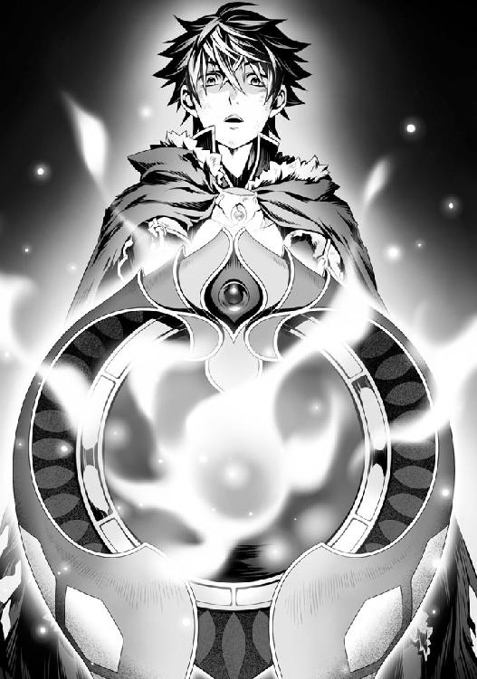
視界に、勝手に盾が表示される。ステータスが今までで一番高い盾であると教えてくれた。
そして......既に最低限の強化済みとなって出現している。
霊亀の心の盾（覚醒） 80／80 ＡＴ
能力解放済み......装備ボーナス、龍脈法の加護
専用効果 グラビティフィールド Ｃソウルリカバリー Ｃマジックスナッチ Ｃグラビティショット 生命力向上 魔法防御（大） 雷耐性 ＳＰドレイン無効 魔法補助 スペルサポート
特殊専用効果 エネルギーブラスト １００％
熟練度 １００
形状は勇魚の魔法核の盾によく似ている。だが、そのスペックは計り知れない。装備を変えることで援護魔法の倍率にも変化が掛かり、前の盾と比べれば二倍以上の能力の上昇が掛かっている。
『お願いです。どうか......私を倒して......』
盾のエネルギーブラストが点灯している。これを放てと言っているのだろう。
だが......これを撃ったとしたら......。
今日の出来事が蘇る。
そう、オストと共に戦った時間なんて一日に満たない。
なのにとても長く共にいるような気がするのは、今回の戦いがそれほど壮絶だったからだろう。
『何を迷っているのですか......どうか......』
「だが......それは......」
『本来、交わることのない運命であったはずなのです。勇者は霊亀がどのような存在であるか、役割しか知らず、私の正体に気付かずに屠る。私はその役目を全うして消える......そんな関係だったんですよ』
わかっている。頭ではわかっているはずなんだ。
だけど、手が震える。
今まで、話ができる相手を殺したことなんて数えるくらいしかない。
いや、教皇以外いない。
教皇は......話をしても理解できる相手ではなかったし、俺を殺そうとしてきた主犯だった。
正当防衛だと自分を納得させることで殺人という感覚を薄れさせていた。
そして殺人を自覚したとしても、罪悪感を抱く相手でもない。
だが......俺がここでエネルギーブラストを放てば霊亀が......オストが死ぬ。
それは世界のためであり、人々のためになるんだ。
だけど......ここまで共に戦ってきた仲間を殺すことを、俺の感情、本能が拒もうとしていた。
『その気持ちだけで私は......満足です。盾の聖武器の所持者......盾の勇者様、どうか......私に役目を全うさせてほしいのです』
「運命を......恨んだりしないのか？」
人々に憎まれ、死を望まれて、正義の化身である勇者に殺されるために存在するなんて、悲しすぎる。
『恨みなんて......ないですよ。世界にある全ての命が私を糧にして生き残ることができるのなら』
その献身的な感情を......俺は理解したくないと思ってしまう。
なんで？ なんでそこまで疑いもなく死ぬことができるのか。
冤罪で嵌められ、無一文で追い出され、世界を呪った俺は、オストの献身的な思いを理解するのを拒みたい。
『いいえ......盾の勇者様なら理解しているはず。でなければみんなを守るために、あんなに長い時を掛けて私の足止めなどできるはずもありません』
フッと、ラフタリアが俺を信じてくれた時を思い出す。
そう......俺を信じてくれた人を、俺は守りたいと思ったんだ。
その思いが、世界に広がっている......オストの言わんとしている意味は理解できる。
『さあ......とてもつらい役目をお願いしますが......これが私のできる最後の手段なのです』
「何やってんだてめぇ！」
キョウが気付いて俺にページを飛ばしてきた。
ガツンと盾で受け止める。
そう、今のキョウの攻撃など、俺を仰け反らせるに至らない。
「ん？ 前ほど吹き飛ばねえな！ じゃあ次は本気で行くぜ！」
「させません！ 私がイツキ様から教わった正義は......貴方を絶対に許さない！」
リーシアはキョウに向けて持っていた剣を投擲した。
「させるかっての！ さすがにこの強固な守りを突破なんてできるわけねえよなぁ？ さっき突破された時よりも遥かに柔軟に、破壊不可能なように生成したんだからよ！」
完全に舐め切った態度でキョウはリーシアの投げた剣をページを使って受け止めようとした。
だがページは貫かれ、結界に突き刺さってなお、進んでいく。
「な......だが、この程度──く、速い！」
リーシアの投擲した剣がキョウを守る結界を貫き、鈍い音を立てて胸に突き刺さる。
「うぐ......てめええええええ！」
今だ！ 俺は──そこで、オストが......静かに頷いた。
時がゆっくりになっていく感覚を覚える。この時間を認識しているのは俺とオストだけだろう。
俺は盾を前に出してエネルギーブラストをイメージする。
盾から輝く四本の脚が伸びて支えとなり、四本の銃身に狙いを定めさせる。
そして盾の中心にエネルギーが収束し、霊亀の頭から発射されるのと同じ雷が生成された。
ガシュッと音を立てて銃身が伸び、俺の後方には翼のような台座が置かれる。
十字と四角のターゲットマークが揺れ動き、狙うべき場所で交差する。
行け！ オストの願いを......叶えるんだ！
そう意識した瞬間、俺の盾から高出力のエネルギーが放たれた。
閃光で視界が白に染まる。
「やべぇ！ させるかよ！」
キョウが俺の狙った霊亀のコアを庇うように前に立つが、出力が高すぎて跳ね飛ばされる。
「うおおおおお！」
それでもと俺に向かって攻撃してくるが、キョウが霊亀を支配して操っていた結界が......俺を守ってそれを阻止する。
「何!? こんな時に邪魔をしやがるのか！ ふざけるなぁあああああああああ！」
この盾は霊亀の力を宿している。霊亀の心であるオストが俺を守ろうとしているのだ。
つまり霊亀の中に居る限り、この盾を装備した俺にダメージなど入らない。
その力で、俺は霊亀のコアを破壊する。
それがオストの願いなのだ。
ならば──俺はその願いに応える！
「くっ......」
雷が増幅されてバチバチと出力が上がる。
コアを守っている結界にバキンと亀裂が生じた。
その亀裂が広がり、更に中にある結界へエネルギーブラストが命中。何度も貫通を繰り返す。
そして、霊亀のコアはエネルギーブラストによって、甲高い音を立てて
──砕け散った。
......しばらく閃光で視力が奪われていたのが、何度も瞬きしているうちに見えてくる。
「ケホ......ケホ......」
あまりの高出力ゆえか、俺と霊亀のコアを結ぶ射線の先を......外の明かりが照らしている。
どれだけの威力だったのだろうか？
ブゥウ......ンと、辺りの物音が静かになったように感じる。
現に霊亀のコアの周りにあった、キョウが外部を映し出していたスクリーンは消えていた。
シューッと音を立てて煙を吐いている盾。
エネルギーブラストを放つために展開されていた支えと銃身が光となって砕けて消え去った。
その場に居た連中は姿勢を低くして衝撃を躱していたようだ。
「ナオフミ様......」
「坊主......」
俺は仲間達の方を振り向き、普段のように振る舞う。
「よし、次に備えるぞ」
敵はまだいるんだ。
ここで勝ったつもりになってはならない。
「よくも......」
そう、まだ......事件の犯人を倒したわけではないんだ。
「よくも俺の計画の邪魔をしてくれたな！ 愚かな盾の勇者の分際で！」
「愚かかどうかはお前が決めることじゃない」
「そうです！」
リーシアが一番早く俺の元に近寄って、魔法の玉を手の中で生成する。
先ほどのパワーアップしたキョウ相手の攻防といい、クリティカルヒットといい、リーシアは感情による強さの増減が激しいな。
変幻無双流の極意を既に習得しているのだろうか？
不自然なほど動きが良い。
「皆さん！ さあ！ 早く......この人を倒しましょう！」
リーシアの声にラフタリア、フィーロに始まり、エクレール、ババア......ラルク、グラス、テリスが各々、戦闘態勢に再度入る。
そして......光を纏ったオストが俺の後ろに立っていた。
「ヘッ！ 雁首そろえなきゃロクに戦えないお前等相手に俺が本気で戦うのもバカバカしい。まあ潮時か」
追い詰められたのを悟ったのか、キョウが苦虫を噛み潰したかのような悔しげな表情を浮かべながら言った。
「嫌でも戦ってもらうぞ。お前の犯した罪......命をもって償ってもらう！」
「はん！ こっちは既に目的は完遂してんだよ。引き時は弁えねえとな」
キョウの手に淡い光が収束していく!?
なんだ？ アレは霊亀のエネルギーじゃないのか？
オストに目を向けると、急いで手を伸ばそうとしているが届かない。
「おっと」
グラスとエクレールがキョウに向かって跳躍するが、それよりも僅かにキョウが早い。
「まさかコアを破壊すればエネルギーが拡散すると思ってたわけ？ 残念！ これは俺が独自に加工したものだから世界に拡散なんてしねーよ！ ギャハハハ！」
霊亀のエネルギーの塊がふわりとキョウの手から離れて、淡く輝き......空間が歪むような重力の穴を生成する。
「つーわけだ！ あばよ！」
キョウはその穴に飛び込んで、消えていく。
が、消える直前......キョウは俺とリーシアを指差した。
「俺に逆らった罪で殺してやる。首を洗って待っていろ！」
どこまで自分勝手で腹立たしい野郎なんだ！
「待て！」
追いかけようと駆け出したが、キョウは完全に穴の中に入って姿が見えなくなってしまった。
ここで逃がすなんて愚かなことをするつもりは毛頭ない。
むざむざ逃がして相手が強くなったら馬鹿そのものだろ！
だが、穴に向かって伸ばした俺の手は、バチンと弾かれてしまった。
──禁則事項。
四聖は他世界へ侵攻することは不可能です。
他世界への侵攻......？
この穴はこの世界じゃないどこかへと繋がっているとでもいうのか？
「ナオフミ様！」
「ナオフミさん！」
追いかけようとしたところで、ラフタリアとリーシアが俺の名前を呼ぶ。
振り返ると、オストが半透明になって今にも消えそうだった。
それでも......つらそうにはしていない。
「おい......って、そうだよな......」
霊亀の核であるコアを破壊したのだから霊亀に属する存在、いや、霊亀自身であったオストは消えるのが運命。
コアにエネルギーブラストを撃つ時に話はした。
後悔をしている暇はない。
それでも、少しでも言い残したことがないか、俺は聞く義務がある。
すれ違いにグラス、ラルク、テリスがキョウの逃げた穴に武器と手をかざしている。
「今、私達で奴がどこへ逃げたのか調べていますから待っていてください！」
「わかった......」
俺達が乗り込もうとしていた穴をグラス達は調査しているのか。
ってよく考えてみればグラスは波の亀裂からやってきたわけで、それはラルクも変わらないのだろう。となればこの連中に一時的に任せておけばいいか。
エピローグ オスト＝ホウライ
......俺はオストに視線を戻す。
儚げ、というかまるで蜃気楼のように存在をあやふやにさせながらも、その表情はどことなく満足そうに見える。
「ありがとうございます。盾の勇者様......やっと私を倒すことが叶いました」
「礼はいいさ。どっちにしろ、勇者としてやらねばならなかったことだからな」
本当は、後悔している。
もっと上手にやれなかったのかと、頭の中に『もしも』ばかり浮かんでは消えていく。
「うふふ......そう言うだろうと......短い間でしたがわかるようになりましたよ」
「ぬかせ」
「ナオフミ様、こういう時くらいは......」
「......そうだな。会ってからそれほど時間が経ってないってのに、お前は数少ない俺が信用できる仲間だ」
「仲間......そうですか。ふふ、勇者に滅ぼされる存在である私が、仲間ですか」
「ああ、お前は俺達の仲間だ。たとえ霊亀とかいう訳のわからない化け物であってもな」
これまでの戦いで身を挺して俺を支えてくれた。
オストを失うのは戦力という面だけでなく、全てにおいて惜しい。
それほど俺はオストを信用している。
ったく......どうして俺が信頼を寄せられると思う奴は揃いも揃って敵として現れるのかね。
「亀のお姉ちゃんどうなるの？」
「フィーロ......落ちついて......オストさんは、やっと使命から解放されたの。私達はそれを見送る義務があるのよ？」
ラフタリアが何か悲しい雰囲気を悟ったフィーロを宥める。
......フィーロってメルティとの別れを惜しんだことがあるから、見知った相手の死に対して感情の制御ができなくなるかもしれない。
「そうなの？」
「ええ......」
「どっか行っちゃうの？」
「どこにも......行きませんよ......私はこの世界の一部なんですから」
「そうなの？」
オストは微笑んで、フィーロに優しい嘘を告げている。
......嘘ではないのかもしれない。
世界を延命させるために多大な犠牲を出して結界を生成する四瑞、霊亀なのだから......世界の一部ともいえる。
自らの延命のために犠牲を強いている......ともいえるのかも。
「フィロリアルの女王に礼を言っておいてください。貴方のお陰で被害を抑えられましたと」
「わかったー」
次にオストはリーシアに目を向ける。
「ありがとうございます......貴方が注意を払ってくれたお陰で私のコアを破壊することができました。ここまで来られたのは貴方とメルロマルクの女王のお陰でもあるのですよ」
確かに、一理ある。
事件の犯人が霊亀であることを察知したのは女王とリーシアだし、あの分厚い資料を平然と読み解いたりと色々と知識的な面で俺をサポートしてくれていた。
そして最後のあれだ。
リーシアは決める時には決める奴だ。
「ふぇえ......」
「そう悲しそうな顔をしないでください。貴方は立派に勇者様方の役に立てていますよ。貴方の意志の強さが......血路を切り開いたんです」
「でも......私は、殆どオストさんやこの場の力になれなくて......もっと......私は強くなりたいです。そうすれば......」
リーシアは樹に見捨てられた時以上に自身の非力に涙しているように俺は感じた。
もっと強ければこんな結果にはならず、よりよい未来があったのではないか？
常に付きまとう後悔......これを乗り越えることで、人は前に進める？
冗談じゃない。都合のいい言葉を並べているだけだろ。
次へ生かす？ 生かしたらオストは死なないのか？
だけど、俺達は過ぎてしまった失敗を取り戻すことなんてできない。
前に進むしかないと言われても、俺は、今回の出来事を忘れることなんてできないし、上手く立ち回る方法があったんじゃないかと一生後悔し続けるんだろう。
とんでもない置き土産を俺に叩きつけてくれたもんだな、オスト......いや、霊亀！
と恨むことで罪悪感を軽減させて納得するしかない。
「大丈夫、私は満足しています。それに、本来は勇者達とは対極に位置する世界の自衛機関のような存在。この世界に生きる者の敵なのです。私の死で悲しまないでください」
無茶な要求をする。
死に逝く相手を悲しむなとか、どんな精神で言ってるんだよ。
「それに、私の心配をするくらいなら、早く捕らえられていた勇者様の容体を......」
「そ、そうでした！ イツキ様！」
「私も行こう」
「ワシも手伝いますのじゃ！」
リーシアを先頭にエクレールとババアが倒れている三勇者の容体を確認しに行く。
上手く自分の死から話を逸らしたな。
俺が睨んでいるとオストが微笑んで誤魔化した。
コイツ、見た目悪女のくせに中身は健気すぎるだろ。性格をもっと統一しろ。
「良かった......息はあります」
「だが、非常に危険な状態なのは変わりがない。急いで連れていかねば命に関わるかもしれん！」
「ワシが気を送って治癒を促そう！」
三勇者共をリーシア達が介抱している。
命に別条がないことを祈るしかないが......まあ、なんだかんだでしぶとい奴等だ。きっと大丈夫だろう。
「オスト......自分が消えることで誰かが悲しむのが嫌なら、人に嫌味を言うとかもっとイヤなキャラを演じろよ。お前がいなくなった後のフォローを考えていなかったのか？」
「......すみません。ですが、そのようなことをしたら、盾の勇者様......ナオフミさんは信じてくださいましたか？」
む......痛いところを突きやがる。
確かに、見た目そのままの性格で人が耐えている時にへらへらしながら命令口調だったら、間違いなく見捨てて逃げるな。
「はぁ......ままならないな」
「ナオフミ様も無茶なことを言わないでください」
ラフタリアに怒られてしまった。まあ、相手の人格を注意するとか俺も酷いか。
「......アイツには逃げられたな」
「そうですね。それが唯一の心残りです......」
オストは俺の言葉に頷く。
「先ほど、追いかけようと穴に近づいたら弾かれた。何か知らないか？」
「四聖はこの世界の守り手......他世界への侵攻は逸脱した行いになります。むしろそれは眷属器の役目でしょう」
眷属器＝侵攻？ 以前の話とずいぶんと違うじゃないか。
眷属器は聖武器に力を貸す武器じゃなかったのか？
「オスト、どうやらもう時間はなさそうだな......」
「はい。もう......時間はないようです。ですから無理を承知で追撃をお願いできませんか？」
「もしも、追いかけられるのならな。お前だって、自分を利用した奴がのうのうとしているのは悔しいだろ？」
「うふふ、ナオフミさんは言葉遣いは悪いですが、お優しい方ですよね」
「はい......本当に......」
なぜかラフタリアが同意している。
「あの者が奪っていったエネルギーを奪い返すことがもしも叶うのなら......おそらく、波までの時間を稼ぐ結界を作り出すことができると思います」
「そんなことができるのか？」
「はい。元々は私が生成したエネルギーです。盾の聖武器が回収することは、可能だと思います」
霊亀の心の盾が反応している。
なるほど、霊亀のエネルギーの奪還さえできれば、霊亀が本来しようとしていた結界の生成はできるのか。
「満タンではなかったので、どれくらい波までの期間を延長できるかわかりませんが、時間は稼げると思います」
「......悪い手じゃないな」
「あと、私が倒されたとなると、次の四霊......鳳凰の封印がすぐに解けてしまいます」
「そうなのか？」
「はい。鳳凰は私よりも更に強力な世界の守護獣......疲弊した勇者様方では相手をできるかどうかわかりません」
やばいな。
そんな奴を相手に近々戦うとか......この霊亀の心の盾とやらにあるエネルギーブラストというのは相当優秀だけど、連射できるかどうかわからない。
「ですから、私は倒されたことを鳳凰に伝えないようにしてみます。そうすれば、しばらくの間は時間が稼げるかと」
「そうか、何から何まで悪いな」
「いいえ......全てはむざむざ乗っ取られた私が犯した罪......」
「とりあえずは、奪われたエネルギーの奪還だな。時間を稼げるか？」
俺の言葉に頷き、オストが盾に触れる。
「霊亀から特例申請......盾の勇者に異界侵攻渡航の許可を──」
盾が発光し俺の視界にアイコンが浮かぶ。
特例許可。
他世界への四聖の侵攻を条件付きで許可します。
「これで追いかけることができると思います」
「ああ。お前の願い、聞き届けてやるよ。あのふざけた野郎に報いを受けさせてやる」
「坊主！ どうやらこのゲートは俺達の世界へ繋がっているようだぜ！」
「そうか」
「今から俺達はアイツを追いかける。そして奴が奪ったこの世界の守護獣のエネルギーは必ず返すぜ」
「......私達が示すことができる誠意はこれしかありません。どうか待っていてください」
ラルクとグラスがそう言っているが......。
「待て、俺達もついていく。お前等の事が信用できないわけではなく、他人任せにしたくないんだ」
正直に言えばグラス達の強さは相当なものだ。
敵ではあるが、これまでの経緯から信用していい人物だと思う。
だけど、あの敵の強さを前に同じことは言えない。
ならできる限り自分達の力で奪還したい。
それが、世界の悪として戦い続けたオストのために、俺ができることだ。
「......正直、アイツのあの態度、行動、考え、その全てが気にくわない。この世界で遊んだ罪を命をもって償わせてやる。そのついでに、お前がやり遂げられなかったエネルギーを世界に返して波までの時間稼ぎってやつをやってやるさ」
「......本当に、ありがとうございます」
フッと俺の手に触れていたオストの感覚がなくなる。
見るとオストの下半身は既に光となって消えている。
もう......時間がないようだ。
「オストさん！」
ラフタリアが声を上げる。
リーシアもラフタリアの声を聞いて振り返り、駆けよってくる。
「オストさん！ ふぇえ......そんな......」
もう、時間は残されていない。
それでもオストは満足そうに笑みを浮かべている。
「不謹慎ですけど私......少しだけ嬉しいんですよ」
「自分が消えることが、か？」
「そうではなく......世界中の命に蔑まれ、恨まれ、憎まれ、死を望まれて死ぬはずだったのに......私の死を悲しんでくださる方々がいる。それだけで......嬉しいって思ってしまうんです。私は満足しちゃいけないのに」
オストは涙していた。
俺も若干視界が霞んでいる。これは単純な疲れだな......そう思い込むことにしよう。
フィーロは意味をなんとなく理解して、目に手を当てて涙を拭っているようだった。
「だから、私は存分に報われたと思ってしまうんです。とても酷い......命を犠牲にした非道な存在だというのに、私のために涙する人がいてくれるお陰で......私は......」
最後の光の滴となってオストの......霊亀の言葉が溶けていく。
「もしも......次があるのだったら、私は......皆さんと共にいたい......です」
オストはそんな言葉を呟きながら......死体すら残さず、消えていった。
こうして......霊亀が起こした災害は幕を下ろした。
霊亀の心であり、魂であるオストの消滅によって......。
「......っ」
俺は、エネルギーブラストで開けた風穴からこぼれる光を静かに見つめることしかできずにいた。
この世界は犠牲ばかり強いる酷い世界だ。
波から世界を救うために勇者を召喚して戦わせ続ける。
波から延命するのに世界中の命を霊亀に捧げなければならない。
その酷い延命を阻止するのなら霊亀を殺さねばらない。
霊亀自身は、できれば自分を止めてほしいと願っていた。
勇者は波から世界を救うために選択を求める。
自身と霊亀の命を犠牲にするか、世界中の命を犠牲にするか。
こうでもしないと世界は守れない......のだろう。
歯向かいたい。異議を唱えたい。だけど、この選択は事実として俺の目の前に提示されている。
自分を犠牲にするなんて死んでもゴメンだ。だけど、他の連中の命を犠牲にするなんてのもイヤだ。
そりゃあ、勇者が戦うのは当たり前で、平和な場所で自分の命さえ他人任せにしているクズ共の命など知ったことではない。
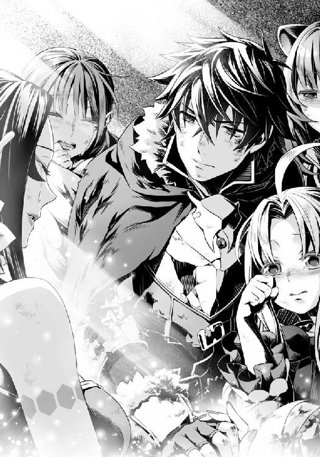
だけど、霊亀も霊亀に挑んだ者も、世界のため、自分の大切な者を守るために戦ったんだ。
それを忘れてはいけない。
「坊主！」
「私達の世界へ繋がるゲートが閉じます！ 早く！」
ラルク達が告げる。
と、同時にエクレール達が声を上げた。
「早く勇者殿達を治療院へ連れていかねば命に関わる！」
俺は......俺達がすべきことは......。
「追撃を行う！ エクレールとリーシアとババアは勇者共を急いで治療院へ連れていけ」
「わかった！ イワタニ殿の決意、必ず女王に伝えよう」
「後の面倒なことを全て押し付けて悪いとでも伝えてくれ」
「......わかった。イワタニ殿、必ず生きて帰ってくるのだぞ？」
「当然だ。ああ......ついでにキールの面倒も任せた」
「了解した。イワタニ殿が帰ってくるまでにまともに戦えるようにしておこう」
などと話を終えて、追撃部隊......ラフタリアとフィーロに視線を向ける。
「ナオフミ様......行くのですね」
「ああ、ラフタリアは来るだろ？」
「はい！ どこまでもお供します！」
「フィーロも行く！ 亀のお姉ちゃんの分まであの本の人を蹴るの！」
良い答えだ。
「よし！ じゃあ作戦開始だ！」
「待ってください！」
そこに一人、リーシアが異議を唱える。
「私も......私も連れていってください」
「お前には樹の面倒を見てもらおうかと思っているんだが......」
「......確かに、ナオフミさんの言う通り、イツキ様を支えるために残りたいという想いはあります。ですが、イツキ様から教わった正義が、たとえ役に立たなくても、あのような悪を許してはいけないと訴えているのです！」
リーシアは告げる。
感情の昂りで強さに差が出るのは問題だが、本人がやりたいと願うのなら俺に拒む理由はない。
「私は......私の信じる正義のために、イツキ様と離れてあの者を追いかけます！」
リーシアには秘められた力がある。その力によって今回は窮地を脱した。
ならばリーシアを連れていくことに意味はあるだろう。
元々俺はリーシアを強くさせると約束したんだ。
これがリーシア自身の心の強さに繋がるのなら、俺は力を貸す。
「わかった。リーシア、お前もついてこい」
「はい！」
「いつまで待たせるんだ！ 行くなら早く来い！」
「ああ、今行く！ ......行くぞ、みんな！」
こうして俺達は霊亀のエネルギーを奪還するために、ラルク達の協力のもと、追撃を始める。
この穴の向こうはグラス達の世界に繋がっているらしい。
グラス達の世界で何が待ち構えているのか。
波とはなんなのか。
この先にある世界はなんなのか。
今の俺達は何も知らない。
だけど......倒さなければならない敵の名は知っている。
顔を知っている。声を知っている。行いを知っている。
ならば、後は簡単だ。
敵の懐に入って、ぶっ殺す。
盾の勇者である俺にはできないことかもしれない。
だが、俺は一人じゃない。
俺が拳を振り上げられないならば、俺の代わりに振り上げてくれる仲間がいる。
ならば、俺はその仲間を守る。
そして、取り戻すんだ。
霊亀が......オストが、俺の仲間が己の全てを懸けて成そうとした全てを！
こうして俺達は、世界と世界を繋ぐ門を潜った──奪われたものを取り戻すために！
『心優しき盾の聖武器の所持者であるナオフミ＝イワタニ様......』
光となって霊亀の亡骸の外を漂う意思が願う。
『どうか、この世界の全ての命を......私を救ってくれたように、お救いください』
その姿を目で追っているのは、フィロリアルの女王だった。
異世界へと繋がる、小さな亀裂が光の柱となって飛んでいく。
フィロリアルの女王、フィトリアが両手を合わせ祈るように霊亀の魂と共にその光を見届ける。
「願わくば、盾の勇者の行く先に幸多からんことを......」
『ありがとう......盾の勇者ナオフミ様。もしも機会があるとしたら、私はこの世界で貴方を守る、意志として......共に......』
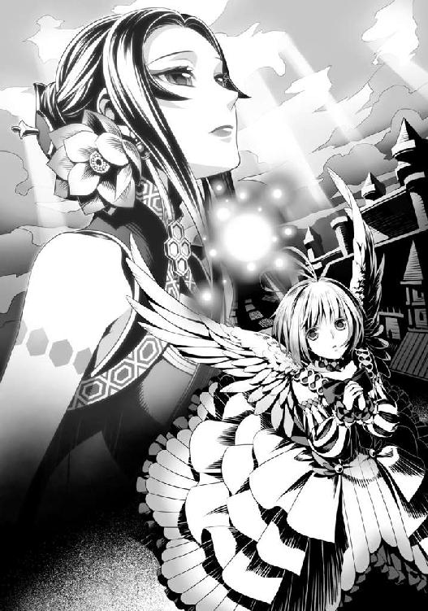
番外編 魂癒水を求めて
「これが魂癒水というのですか？」
「そうだぜ」
私は、ラルクが私に振りかけた劇的な効果を発揮する薬について聞いていました。
「グラスの嬢ちゃん」
「まったく......倒すべき相手の世界を知りたいと出ていって......呆れたものですが、このような物が手に入るのなら評価するしかありませんね」
魂癒水。この驚異的な薬は私の能力を恐ろしいほどに引き上げる効果を有しています。
でも......この薬を使っても、私は敵対する世界の四聖、ナオフミを倒すに至りませんでした。
もしもラルク達の協力なしでナオフミ達に挑んでいたらどうなっていたでしょうか？
おそらく、負けていたでしょう。
ラルク達の話では、ナオフミは防御を司る盾の勇者。
その性質から攻撃は苦手という話ですが......。
仮の話です。もしもナオフミ以外の四聖と戦うことになった時、私は勝つことができるでしょうか？
ふと、扇に目を向けます。
この扇は眷属器と呼ばれる、世界を守るために存在する武器の一つ。
様々な魔物や素材を吸収して成長する特殊な武器。
魔物を別の素材へ変換する変換器の機能も内蔵していて、過去に私の世界に召喚された勇者はドロップと名付けていたそうです。
私達は拠点にしている町で会議をしていました。
内容は前回の反省会です。
まず、ナオフミの急激な成長には目を見張るものがあります。
世界同士の戦いである波......ナオフミから聞いたところによると前回の波からあの世界では、二週間という僅かな日数しか経過していないようなのです。
ですが、その日数であの驚異的な成長。
前回戦った時、勇者と思える強さを有した者はナオフミしかいませんでした。
確かに強くはある相手でしたが、脅威と認識するほどではありません。
禍々しい呪われた武器に手を染め......それでも自我を保つ強き者だと私は認識しました。
ですが、呪われた武器を持ってあの程度の強さ......次に出会った時こそ、仕留められると油断していた、というのが本音でしょうか。
実力は完全に測り切っていました。
勝てないと悟るなり、逃げの一手を選ぶ決断力......その部分ですら私は内心、厄介な相手だと思いながら組み伏すことはできると油断していました。
ですが、僅か二週間......いえ、二週間もの時間を与えてしまったせいで、その考えがいかに甘かったかを悟りました。
さすがは異界の四聖勇者、ナオフミは驚異的な強さを習得していました。
今度は私達が追い込まれかねません。
......私にも奥の手はあったのですが、ラルクが止めたせいで今度も勝敗は保留となってしまいました。
「だろ？ こんなの俺達の世界にゃ無かったから驚くと思ったぜ」
魂癒水の瓶を手で転がしながらラルクは自慢げに話をしています。
「しかしよく気付きましたね、そのような効果があると」
「ああ、それはグラスの嬢ちゃんと前に話したじゃねえか。魂力の回復方法は自然回復か、吸収攻撃か、同族から分けてもらうしかないって」
「そうですが......」
「で、その吸収攻撃ってのを喰らった時に魂力が減ったから、グラスの嬢ちゃん達、魂人のエネルギーってのは魂力なんだろうなってさ」
なるほど、ラルクは私と組み手をしたからこそ、エネルギーがなんであるかを知っているということですか。
魂力......これは眷属器に選ばれた者でないと認識できない力......魂人である私はどうやら別の概念で眷属器を扱えるようなのです。
人間の眷属器の所持者にとっての魂力は、私にとってのエネルギーと同等のものなのでしょう。
「理屈はわかりました。ですが大きな難点があるのはわかりましたか？」
「あ？ 確か上限を超えるとゆっくりと漏れ出すんだっけか？」
「そうです」
確かに驚異的な戦闘能力の上昇が期待できます。
私は魂人......スピリットとも呼ばれる私の種族はエネルギーが強さに直結しています。
人間やそれに追随する種族のようにＬｖという概念で強さの強弱が決まるのではありません。
並はずれたスタミナを持つ半面、エネルギーの消失は自身の弱体化を招く......短期決戦において抜群の強さを持つ種族なのです。
魔物を倒してＬｖを上げる人間種とは異なり、魔物を倒しても僅かにエネルギーが回復するに止まります。
まともに魔物と戦ったら赤字となるのが魂人ですね。
ですが、毎秒......エネルギーが回復して一定の値までは何もせずとも上昇するのです。
強くなる方法はこのエネルギーを使って、自身に能力を習得させていくことなのですが......まあ、確認するのはまたの機会にしましょう。
ラルク達もその程度はわかっているはずなのですから。
その中で、強さに密接に関わっているのがエネルギーの総容量。
これは自身が溜めておける最大エネルギーを表します。
ですが、このエネルギー総容量を増やすのは生半可なことではできません。
眷属器のお陰で同族よりも総容量を増やしている私でさえ......今以上の強さを得るには時間が掛かるでしょう。
「魂癒水で増えた分のエネルギーは私の総容量を大きく超えています。ですから、僅かな時間しか維持できないのです」
もしも維持することができたのでしたらナオフミに勝てたかもしれません。
正直に言いましょう。
あそこまで強くなっているナオフミに今の私は敵わないでしょう。
次に会った時、私は自身の奥の手を使って命と引き換えにしなければ......勝てないと思います。
「じゃあ容量が増えりゃあ勝てんのか？」
「理屈ではそうでしょう」
ラルクはいつも軽そうな調子で話す、眷属器仲間です。
本人は真面目に世界のために戦っているつもりなのでしょうが、気迫が足りないと私は常々思っていて、会う度に説教をしてしまいます。
ラルクの話はあくまで理想論なのですよ。
波までの時間はあまりに少なく、人間でいうところのＬｖ上げもあまり意味はありません。
協力者から魔物や素材の提供を受けて、自身の能力を高めることは可能ですが、それも頭打ちの現状をどうすればよいというのですか。
「じゃあさ、また波を使って異世界へ乗り込もうぜ」
「何を言っているのですか？」
「ほんとグラスの嬢ちゃんも真面目が行きすぎて頭かてえな」
むっ！
「誰の頭が固いんですか！」
「キズナの嬢ちゃんが見たら呆れるぜ？ もっとリラックスして、頭を柔らかくしていこうぜ」
「ひ、卑怯ですよ。キズナの名前を出すなんて」
キズナは私の親友の名前です。
あの人が私達の世界を守りたいと言うからこそ、私はこの世界を愛おしく思えるようになりました。ですが、キズナは波での戦いに出すことができる人ではありません。
それに......今はどこに行っているのか消息も掴めないのです。
「グラスの嬢ちゃんはキズナの嬢ちゃんの話をすると面白い顔するな」
「人をからかうんじゃありません！」
「ま、俺からしたらグラスの嬢ちゃんもキズナの嬢ちゃんも娘子だけどな」
「それ以上は冒涜として受け止めますよ！」
扇をラルクに向けて脅します。
「落ちつけよ、グラスの嬢ちゃん」
「いいですか？ 私達は波に挑むために日々忙しいのですよ？ 別世界に行く暇なんてあるはずないじゃないですか」
「そうは言うがよ。気付いてないのか？ あっちの世界で──」
ラルクは私にとある情報を提供しました。
それと同時に眷属器の可能性の提示です。
この世界の魔物や素材は、ある程度集まってしまえば頭打ちです。
それはしょうがないでしょう。
なにせ世界は有限であり、無数にあるように見える魔物や素材の数だって限りがあるのです。
ですが異世界は未開の地......その未開の地の魔物や素材、薬物......様々な可能性が眠っているのです。そして驚異的なことなのですが、あちらの世界でＬｖを上げると波の時......双方の世界の効果が重複します。
つまり、この世界でのＬｖとあちらの世界でのＬｖが合計されるとの話なのです。
「だからさ、次にナオフミ達に出会っても大丈夫なように、あっちの世界で多少は強くなった方がいいんじゃねえの？」
「それは......」
確かに悪い手ではありません。
私達はあの世界との戦いで、まだナオフミ以外の四聖とは出会っていないのですから。
ですが......結果的に私達が勝てば、強くなったことが徒労に終わることになるのです。
期間限定の強さなど必要か？
それよりも短い時間内で、自分達の世界で強さを磨く方が有意義ではないのか？
疑問は尽きません。
「それに......グラスの嬢ちゃんも気付いてんだろ？ 相手だって馬鹿じゃない。四聖を簡単に波の最前線になんて出してくれねえ。波が起こるよりも前に乗り込んで......仕留めるのが眷属器の役目だろ？」
そうです......波の間だけで四聖を殺すのはとても難しいことです。
手段を選ばないのならば乗り込んで、波が起こった時に最後の聖武器の所持者を仕留めればよいでしょう。
「ナオフミがいる世界でさえ、他の四聖の存在を掴みきれなかったんだぜ？」
「......そうですね。手段など......正々堂々となど言っている場合ではないのでしょう」
もしも......私のこの決断をキズナが知ったらどんな顔をするでしょうね。
しかしラルクは元気ですね。ナオフミとの戦いからまだ二日しか経っていないというのに。
「そーいうわけで、次の波でナオフミんとこと繋がったらさっさと乗り込んでいこうぜ！」
「はぁ......わかりました」
私の溜息は深かったでしょう。
「そーいやテリスはどこだ？」
「テリスさんなら部屋じゃないですか？」
「ああ、まだ休んでんのか？ さっさと行動しないと波に遅れんぞ」
と、ラルクは私を連れてテリスさんを迎えに行きました。
「はぁ......」
テリスさんが部屋で腕輪を握りしめていました。
「テリスー調子はどうだー？」
「はぁ......」
うっとりとした様子で腕輪を掲げています。
ラルクの声は聞こえていないように見えるのは気のせいではないでしょう。
「おーい」
「はぁ......すごい......こんなにも綺麗にしてもらえるなんて......」
と、腕輪に嵌っている宝石をテリスさんは羨ましそうに撫でています。
これはテリスさんの種族独自の概念ですよね？
ここに帰還する途中、異世界でとても素晴らしい腕輪を作ってもらったと自慢していました。
テリスさんの魔法は宝石に宿る力を発現する独自の魔法です。
その媒体となる宝石で、それはもう良い物を得たと言っていました。
ならばなぜ、ナオフミとの戦いに使わなかったのか疑問は尽きません。
「いいなぁ......」
「テリス！」
「はひ!? ラルク！ 一体いつの間に私の部屋に来たのですか？」
「いつの間にって、何度も声を掛けたのにテリスさんが聞いていなかったのですよ？」
ビクッと......思春期の男性が春画を隠すような動作でテリスさんは腕輪を後ろに隠しました。
種族的に理解できませんが、そんなに恥ずかしいものなのでしょうか？
「そ、そうですよね。ちゃんと聞いてましたよ。私に何の用ですか？」
「ホントに聞いてたのか？ というか坊主に作ってもらった腕輪がそんなに気に入ったのか？」
「あったり前じゃないですかラルク！ ラルクにはわからないのですか？ この宝石の喜びが！」
「威力がすげーくらいしかわからねえな」
「ラルクの鈍感！」
「うげ！」
テリスさんが悔しそうにラルクの鳩尾に拳を叩きこみました。
見事なフックですね。私も参考にしましょう。
「そんなにすごい物を手に入れたのでしたらなぜ、ナオフミ相手に使わなかったのですか？」
テリスさんの魔法は宝石の力を使います。つまり、それだけ強力な媒体が手に入ったのなら、なぜ使わないのでしょう？
「ナオフミさん相手には、この子が力を貸してくれないからですよ......」
「はぁ......」
「うげ......テリス、てめぇ......まったく加減しなかったな」
腹を押さえてラルクが蹲っています。
仲の良い二人ですが、どうも過激な時がありますね。
これも二人の仲の良さの表れなのでしょうが、私にはどうも理解できないところがあります。
「それで？ なぜその宝石はナオフミ相手に力を貸さないのですか？」
私の問いにテリスさんはとても悲しそうな目をしました。
何でしょう？ 私はそんなにも失礼なことを言ったでしょうか？
「グラスさんにはわかりませんか？ この子の身になって考えてください。自分を拾い上げ、完璧な状態にまで研磨してくれた創造主に匹敵する神を......その手で殺せと言われて力を貸すと思っているのですか？」
「何を言わんとしているのかわからなくもないですが......」
つまりナオフミが作った腕輪だから、ナオフミを倒す力を出してくれないということなのでしょう。
「もしもナオフミさんを助けるためでしたら、この子はその身を犠牲にしてでも力を引き出してくれると思いますよ」
ああ、と言いながらテリスさんは宝石に頬擦りを始めました。
「ぐ......テリス。いい加減それをやめろって」
「じゃあラルクがナオフミが作った腕輪よりも素晴らしい物を作ってくれたらいいわ」
「く......坊主......テリスのハードルを思い切り引きあげやがって。俺の未来に暗い種を蒔くんじゃねえよ」
「それで？ 私に何の御用ですか？」
「はい。ですから──」
私達はテリスさんに、これから波に挑むついでに乗り込む話をしました。
「わかりました。では行きましょうか」
テリスさんも前向きに協力してくださるようで助かりました。
「では、運が良かったらそのまま乗り込むことになりますね」
こうして私達は一番期日の近い波に合わせて行くことになりました。
幸運にもナオフミ達の世界と繋がった波でした。
「グラスの嬢ちゃん、わかってると思うが、移動先で戦ってる奴らを見かけても無視して移動をするんだぞ」
「わかってますよ」
亀裂を乗り越え、私達は辺りを確認します。
遠くで......ナオフミが連れていた鳥型の魔物によく似た魔物が波の魔物相手に戦っている姿が見えます。驚異的な速度を出してこちらに近寄ってくる気がします。
「急ぎましょう」
「おう！ テリスも手伝え」
「はい」
テリスさんの協力のもと、私達は比較的安全に世界移動を終了させました。
背後に見えるバイオレットの......波の亀裂が閉じていくのを観測します。
そこで私はとある問題に気付きました。
「おや？ 装備の効果がありませんね......」
能力もかなり低下しています。
これがラルクの説明していた、世界を移動した影響でしょうか。
「ああ、そうみてえだな。趣味じゃねえだろうが、グラスの嬢ちゃんはこっちの鎧を着てくれ」
そう言ってラルクは鎌から一着の鎧を出してくれました。
キズナが言っていた西洋風の皮の鎧ですね。
まあ、しょうがないでしょう。効果がない服を着ているよりはマシです。
私は着物を脱いで鎧を着ました。
「うわ......グラスさん......」
「似合わねーな」
なんかイラッと来たので、私はラルクの脛を蹴りました。
「いって！ 何すんだ」
「この鎧を出したのは貴方ですよ」
「しょうがねえだろ。それしかなかったんだからよ」
「髪型を変えれば少しは似合うようになりますよ」
と、テリスさんが私の髪型をツインテールにしました。
「うーん。グラスの嬢ちゃんってよく見ると童顔なのに、今の姿は年齢詐称して無茶してるように見えるのはなんでだろうな？」
もう一度ラルクの脛を蹴ります。
「いって！ だから暴力を振るうんじゃねえよ」
「扇で叩かなかっただけありがたいと思ってください」
「まあ、慣れたら気にならなくなりますよ。ほら、行きましょうよ」
「そうですね。ではラルク、案内を頼めますか？」
「おうよ。まずはー、飯だな」
そうしてナオフミがいる世界での私達の旅は始まりました。
数日後。
「で、ここの食い物がなかなか美味くってな」
「そうそう、ここの名産品のナポラータっていう赤い麺が美味しくって」
「ふむ......ってよく考えてみれば行く先々の町で名産品を食べてるだけじゃないですか！」
買い食いしていたテリスさんが、購入した串の上に載った餡のようなものをボタッと落としました。
「そう言えばそうでした！」
「でも色々とドロップは集まったし、金も溜まったじゃねえか」
「確かにそうですが......目的を履き違えてますよ！」
私達の目的はあくまでＬｖや能力の上昇と魂癒水です。
この魂癒水のレシピを手に入れて材料の調達ができれば、次の戦いで大いに役に立つでしょう。
「まあまあ気にするなって。これもグラスの嬢ちゃんが強くなるための通過儀礼なんだよ」
「......本当ですか？」
疑わしい限りです。
確かに色々な、私達の世界では見ない魔物達と戦いはしましたが......。
「グラスの嬢ちゃんは心配性だな。大丈夫だっての」
「怪しさが拭いきれませんよ」
「だからー......お？ 嬢ちゃん。そろそろ装備を新調した方がいいんじゃねえか？」
ラルクがふらふらと武器屋に顔を出します。
私の眷属器は扇......そしてこの世界の武器屋には扇は置いてないようなのです。
まあ、変わった武器であるのは確かですからね。気にしてもしょうがないでしょう。
「なんですか？ 着物でもありましたか？」
無いわけではないようなのですが、どうも性能が良くないのです。
オーダーメイドで作れば用意してくれるそうですが、そんな時間はありません。
そう思いながら武器屋に入ると、ラルクは私にまたも鎧を勧めてきました。
前に渡された鎧よりも質や効果は良さそうですが、デザインが趣味じゃないのですよ。
「ここから先、魔物と戦ってくなら必要だと俺は思うぜ」
「......わかりましたよ」
しょうがないので路銀を使って購入しました。
ですが、いつの間にかテリスさんの姿がありません。
どうしたのかと辺りを捜すとアクセサリー店の前にいるようです。
「いらっしゃいませ。お客様、何をお望みで？」
「え......いや......その」
「経験値が増加すると噂されるミラカ鉱石で作られたネックレスはどうでしょうか？ 彼の地、カルミラ島でブームになっている品ですよ」
「カルミラ島でブーム？ カルミラ島には行ったことあるが聞いたことねえな」
「何でも盾の勇者様が提案した品だそうで......現在人気の商品ですよ」
盾の勇者と言われ、私は手に力が入るのを感じました。
そうです......無駄に出歩いていてはナオフミと出会ってしまう可能性があるのです。
注意して行動せねばなりません。
なにせ、今の私は完全にアウェーでそこまで強くないのですから。
「テリスー」
アクセサリー店内を見て回るテリスさんをラルクが呼び止めます。
「何か掘り出し物はあったか？」
するとテリスさんは残念そうに顔を横に振りました。
「やはりあの腕輪クラスの品はありませんね......」
どこまでナオフミの作った腕輪に執着しているのですか、貴方は......。
「ラルク、今のうちに細工の腕を磨いた方がいいですよ」
「くそ......俺はそういう細かいことが苦手なんだよ。いつかテリスの眼鏡にかなうような品を買ってやるさ」
「そんなことを言っていると、ナオフミにテリスさんを取られますよ」
「な、なわけねえだろ。何言ってんだグラスの嬢ちゃんは......ハハ」
はぁ......何でしょう、この徒労感は。
「そんでなグラスの嬢ちゃん。多分、そろそろ前回来たことのある地域なんだが、ナオフミ達と出会うかもしれねえから注意しとこうな」
「わかりましたよ」
「念のために偽装の魔法は使っておきますけどね」
と、テリスが宝石に手をかざして魔法を唱えました。
どうやらこれで私達は本来の外見とは異なって認識されるらしいです。
近くの酒場にラルクが行って情報を収集してきます。
「Ｌｖ上げにまたカルミラ島へ行こうかと思ったけど、あの島の活性化はそろそろ終わっちまうらしい」
「しょうがないですね。地道に素材を集めていくしかないですね」
「そうだな。まあ、いい感じに魂癒水の素材を落とす魔物が生息する地域へ行こうぜ」
とまあ、気楽な感じで魔物を倒していきました。
魂癒水のレシピが出る魔物も発見しましたし、先行きは好調ですか......ね？
問題は四聖勇者がどのような武器であるかでしたけど。
盾の勇者はナオフミでわかりました。名前もナオフミ＝イワタニで間違いないです。
他の勇者の話が多数ありました。
剣、槍、弓と私達の世界の勇者とはやはり異なった武器のようです。
言ってはなんですが、シンプルな武器ですね。
ですが......ナオフミと戦う時、私の前で勇者だと主張した冒険者がそのような武器を持っていたような気がします。
あまりの弱さに勇者を騙る偽者だと思っていますけど......本物はどこへ行ったのでしょう？
ラルクの時にもその偽者はいましたが、まさか四聖勇者がナオフミ以外は雑魚だと考えるのは楽観的すぎるでしょう。
仮に本物だとしても、弱いのに最前線に連れていくなんて蛮行をするはずもありません。
「で......ここは......メルロマルクという国ですか？」
途中亀のような、蝙蝠のような魔物と何度か遭遇しましたね。
これも異世界独自の魔物なのでしょうが、あまり見ない種類です。
「そうだぜ。カルミラ島へは行かねえけど、この辺りの魔物で魂癒水の材料を落とす奴がそれなりにいるからな。行こうぜ」
ここがナオフミのいる国ですか。
私達の世界とは色々と違っていますね。
文字も、文化も、考え方も色々と違うのでしょう。
酒類も何か違う様子ですし......。
川で跳ねる魚も違います。キズナが新しい釣り場とか言って喜びそうですね。
いい土産話になりそうです。
「ついでにナオフミ達、四聖勇者がこの国に滞在してるらしい。情報収集にはぴったりだろ？」
「ええ......来たついでにナオフミ以外の勇者の情報を探しましょう」
メルロマルクに入国して、数日後。
現在私達は密林のような場所を歩いています。
辺りの植物には赤い実が実ってますが、あれは食べられるのでしょうか？
「この辺りで出現する魔物も材料になるぜ？」
正直、魂癒水の材料を探して色々と回っていますが、ラルクの証言が怪しくなってきました。
最近では謎の蝙蝠と亀みたいな魔物との遭遇率が高くて困っています。
あの魔物は魂癒水の材料を落としません。
「本当なんですか？」
「疑い深いなー。まあここよりもう少し魔物の強いところへ行った方がいいと思うぜ」
別に私は種族的に強い魔物を倒す必要はないですし、素材はラルク達に貰ったので意味はあまりないのです。
「それだと強くなるのに時間が掛かりませんか？ 無駄をしている暇はないのですよ？」
「大丈夫ですって。私達が手伝いますから次の波までがんばりましょう」
「ええ......」
なんとも先行き不安に感じるのは私だけなのでしょうか......。
ラルク達はどうも気概が足りないように見えます。
「グラスの嬢ちゃん。あんまし肩に力を入れていると疲れちまうぜ」
「疲れさせてるのはどっちですか！」
「プリプリしてるとナオフミみたいになっちまうぜ」
それはどういう言い回しなのですか？ とは思いますが、あのブスッとした表情を思い出すと、確かに......ああはなりたくないと思います。
などと思いつつ数日後、いろんな魔物を狩って強化したり素材を集めたりしていると、眷属器が振動するのを感じました。
視界に守護獣が活動を開始したと表示されます。
「どうやら......この世界の守護獣が活動し始めたようですね」
「みたいだな。討伐するか、結界を生成するかはこの世界の連中が決めることだな」
「帰還の方法はないわけではありませんからね」
そう......この世界の波は一時的に停滞しますが、私達の世界の波は発生します。
私達の視界には次の波の到来時間が映し出されているわけで、この世界がどちらの選択をしようとも結果は変わりません。時間切れでも問題はないのですが......と、私は特殊な魔物である霊亀の使い魔という魔物を屠りました。
「どちらにしても......ナオフミ達と戦う可能性が低下したのは良いことだと思いましょう」
霊亀という守護獣が結界を生成したらもう戦う必要はありません。
倒してしまっても、しばらくの間は戦わずに済みます。
脅威となっていたナオフミと次に戦うまでに時間を稼げるのでしたら良いことに変わりはないのです。その間にもっと私達が強くなっておけばいいだけなのですから。
魂癒水に似た薬を私達の世界で作り出せれば、戦いを有利にすることが可能になります。
と思って、私達は霊亀の進軍に関して無関係でいることにしました。
やがて盾の勇者が霊亀を退治したという話を聞くのにそこまで時間は掛かりませんでした。
「やっぱ坊主はやる時はやる奴だよな」
「そうですね......行動に問題はあるようですが、勇者なのは確かなのでしょう」
そんな風に呟きながら、私達の異世界滞在の期限が近づいていた......あの日のこと。
眷属器が突然、鳴り響きました。
「な、なんだってんだ？」
ラルクも同様に鎌を握って困惑しています。
私は眷属器に語りかけました。
すると視界に......見覚えのある者が町を当たり前のように歩いているではありませんか。
私はその相手を指差します。
するとラルクも事態を悟ったようにコクリと頷き、それぞれ眷属器を持って近づきました。
相手も勘付いているのか、人通りの少ない道で振り返りました。
「おやおや？ こんな所にお前等が何の用でいるわけ？」
「それはこちらの台詞です」
奴は......眷属器に選ばれた使命を放棄し、眷属器を権力の証として世界を支配せんとする者。
明確に私達の敵として存在する許されざる者達。
その中の一人、キョウ＝エスニナという......本の眷属器の勇者でした。
眷属器の警報は、まだ鳴り響いています。
そして悲鳴のようにキョウの眷属器から私達に光が送られました。
そこで......とてつもない情報が私達の視界に浮かび上がりました。
この世界の守護獣をキョウが独自に作り出した技術で支配して操っているというものでした。
「お前──」
「ふん。お喋りな眷属器だぜ。どうせお前らが滅ぼす世界なんだろ？ 有効活用くらいさせろっての！」
「何をするつもりですか！」
「お前等に話す必要なんてねえだろ。バーカ！」
キョウが手に持つ眷属器が光りました。
「お？ もうそんな時間か。もう少し馬鹿騒ぎをしてる連中を見て笑っていようと思ったけど、潮時だな」
シュンと音を立ててキョウが姿を消しました。
気配すらもなく......転移スキルでどこかに移動したとしか思えません。
「グラスの嬢ちゃん......こりゃあヤベえんじゃねえか？ この世界の守護獣の霊亀って......奴が動かしてるとなると......」
「ええ......波による戦いでもやって良いことと悪いことがあります。これはルールを逸脱した暴走行為......」
もしも守護獣から得られるエネルギーを利用できると考えているのなら大きな間違いです。
眷属器からの情報に、そのリスクが書かれています。
他世界の守護獣を利用して私達の世界の延命を図ろうとしたとしたら、その先には破滅......他人の足を奪って自身の失った足に繋いでも動くどころか死ぬのと同じ......。
これは何が何でも私達が止めなくてはなりません。
「ラルク、テリスさん、行きますよ」
「おうよ！」
「はい！」
魂癒水のストックは......多少は準備できました。
この世界でも多少は戦えるようになったでしょう。
命に代えてもキョウの蛮行は私達、この世界とは異なる世界の眷属器の所持者が止めなくてはいけないのです。
私達は一路、霊亀に向けて移動を開始したのでした。
波に備えて準備をしていたグラス一行。
霊亀を操るキョウを止めるべく進んだ先に、何が待ちうけているのか。
この物語は盾の勇者へと繋がっていく。
本来交わるはずのない物語と物語。
世界と世界を歪める境界線。
それが彼女達にとって吉と出るか凶と出るか。
災いに抗う異なる世界の希望。
それすらも大きな波を止めるには足り得ず。
やがて何もかも滅びの波に掻き消されていく......。
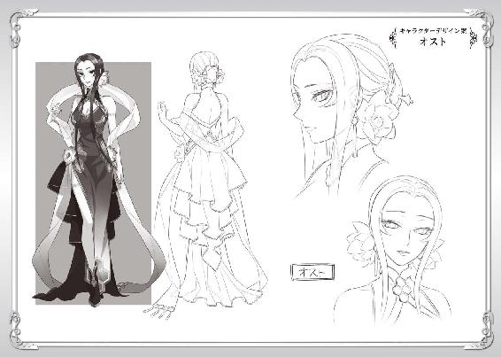
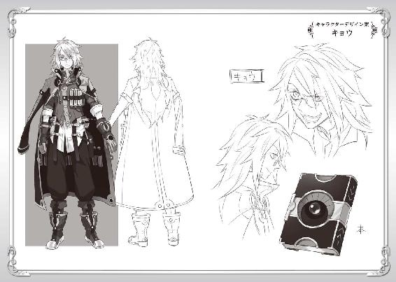
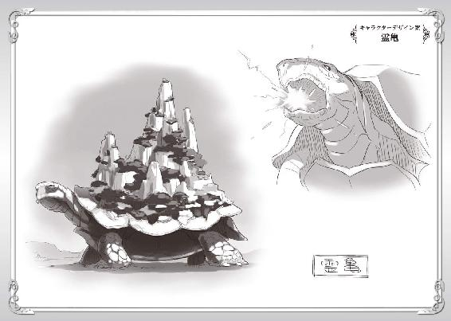
著者プロフィール
アネコユサギ
Aneko Yusagi
神奈川県出身。ゲームと読書好きが高じて、小説を書き始める。
『盾の勇者の成り上がり』を執筆し、ネット上に作品を公開。
作品発表後、連日欠かすことなく更新することで病み付きとなる読者が続出し話題となる。２０１３年８月ＭＦブックスから商業デビュー。
「書籍化によって頂いている期待に応えられるよう頑張ります！」と語る。
企画
株式会社フロンティアワークス メディアファクトリー
担当編集
堤 由惟／大原康平（株式会社フロンティアワークス）
ブックデザイン
ragtime
イラスト
弥南せいら
本書は小説投稿サイト「小説家になろう」（http://syosetu.com/）初出の作品を加筆の上書籍化したものです。
盾の勇者の成り上がり ７
2014年9月30日発行 ver.1.0
著者 アネコユサギ
発行者 三坂泰二
編集長 金田一健
発行所 株式会社ＫＡＤＯＫＡＷＡ
〒102-8177
東京都千代田区富士見2-13-3
03-3238-8745（営業）
編集 メディアファクトリー
0570-002-001（カスタマーサポートセンター）
年末年始を除く平日10:00～18:00まで
©Aneko Yusagi 2014
※無断で複製・複写・データ配信などをすることは、かたくお断りいたします。
本電子書籍は下記にもとづいて制作しました
ＭＦブックス
盾の勇者の成り上がり ７
発行日 2014年9月30日 初版第一刷発行

本作品の全部または一部を無断で複製、転載、配信、送信したり、ホームページ上に転載することを禁止します。また、本作品の内容を無断で改変、改ざん等を行うことも禁止します。
本作品購入時にご承諾いただいた規約により、有償・無償にかかわらず本作品を第三者に譲渡することはできません。
本作品を示すサムネイルなどのイメージ画像は、再ダウンロード時に予告なく変更される場合があります。
本作品は縦書きでレイアウトされています。
また、ご覧になるリーディングシステムにより、表示の差が認められることがあります。